Version 4.4.1, 27 novembre 2026
Document de travail : il sera corrigé à mesure que les lectures avancent (historique en fin de document). English version. Article d’exposition compagnon : Descendre le graphe.
Sources : l’export de la preuve publié par A. Sutherland [Su]
(solution.ndjson.zst : 1 468 418 déclarations, dont 1 468
414 dans la fermeture des cinq énoncés de Main), la note de
l’auteur [A], et les autres lectures publiées [Z], [S], [R2], [H], [G]
(voir les Références). Notes de travail plus détaillées, avec les noms
Lean : carte de la preuve. Outils d’analyse :
tools/. Le rôle de Claude et de ChatGPT est précisé
dans la note de méthode, en fin de document.
À qui s’adresse ce texte ? À un mathématicien qui connaît l’algèbre, l’analyse et les rudiments des corps de nombres, mais qui ne pratique ni les formes automorphes ni la géométrie d’Arakelov. Le prologue pose le problème ; la vue d’ensemble résume la preuve en cinq questions ; les prémisses rappellent les fonctions L de Dirichlet. La partie I répond aux cinq questions une à une, la partie II dit où chaque étape se trouve dans le code et comment les parties communiquent, la partie III dit ce qui reste à comprendre.
Comment lire les explications. La validité formelle n’est pas en cause : compilation complète, axiomes standard, rejeu par plusieurs noyaux indépendants (Sutherland [Su], Rubinstein [R], état au 23/11/2026). Ce texte cherche à comprendre. Plusieurs statuts d’énoncés coexistent, et ils sont signalés une fois pour toutes ici :
- les mathématiques classiques (Tchebychev, Stepanov, Landau, Honda, Siegel…) sont démontrées ou citées comme telles ;
- les modèles et ateliers (le premier 3, une matrice 2×2, des opérateurs fictifs) illustrent un mécanisme par un objet plus simple : ce ne sont pas des sous-preuves de GRH, et les chiffres qui y figurent ne sont pas extraits du code ;
- les mentions « sur l’export » sont lues sur les énoncés de l’export avec les outils de tools/ ; celles marquées ⟦I⟧ sont des interprétations ;
- les mentions « dans le terme de preuve » viennent de la lecture des preuves elles-mêmes, et non seulement des énoncés, avec
trace_app.py; une reconstruction est une démonstration indépendante qui établit la même conclusion à partir d’hypothèses explicitées, en principe celles de l’énoncé Lean, sans affirmer que Lean suit ce chemin.Les calculs numériques sont reproductibles avec
tools/modeles.py; ils illustrent, ils ne prouvent rien d’asymptotique.
Il y a deux manières de regarder un nombre aussi familier que \(100!\). La première le voit comme le produit des cent premiers entiers : Stirling en donne la taille sans rencontrer un seul nombre premier. La seconde le voit comme un réservoir de facteurs premiers : 97 facteurs 2, 48 facteurs 3, 24 facteurs 5, et la formule de Legendre dit précisément combien, \[v_p(N!)=\sum_{e\ge1}\left\lfloor\frac{N}{p^e}\right\rfloor .\] Les deux lectures se rejoignent dans une identité, \(\sum_{p}v_p(N!)\log p=\log(N!)\) : à gauche des nombres premiers, à droite de l’analyse réelle. Pour majorer une somme sur les premiers, il suffit parfois de construire un entier divisible par les bons nombres et de savoir borner sa taille. Tchebychev l’a fait en 1852.
Le problème de Riemann exige beaucoup plus : contrôler l’écart entre ce que l’on observe et ce que l’on prédit, à une échelle minuscule devant le terme principal. Dans la version lissée que nous utiliserons, \[S(x)=\sum_{p^e\le x}\log p\left(\frac{x}{p^e}-1\right),\qquad G(x)=S(x)-x\log x+(1+\gamma)x .\] À \(x=10^6\), \(S(x)\approx12\,238\,306\) et le terme principal vaut environ \(12\,238\,295\) : leur différence est 11 (ici γ est la constante d’Euler ; plus loin, l’ordonnée d’un zéro \(\rho=\tfrac12+i\gamma\) est aussi notée γ, et le contexte lève l’ambiguïté). L’hypothèse de Riemann dit que l’échelle naturelle de cette différence est \(\sqrt x\). On peut voir \(G\) comme un signal dont les zéros de ζ sont les fréquences : la partie imaginaire donne la vitesse d’oscillation en \(\log x\), la partie réelle l’enveloppe. Un zéro de partie réelle 0,6 contribuerait un terme d’ordre \(x^{0,6}\), et les arguments de non-compensation du § 1 interdiraient alors toute borne d’exposant inférieur.
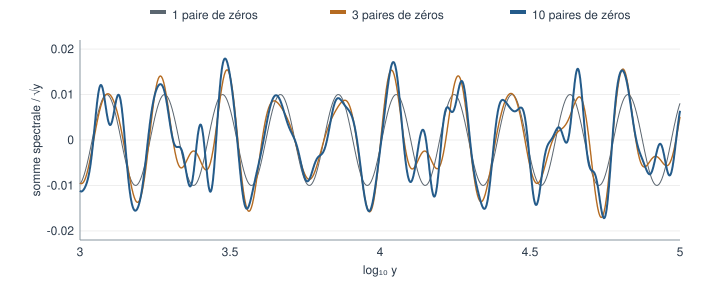
Revenons à la factorielle. Son poids \(\lfloor x/n\rfloor\) diffère du poids de Riesz \((x/n-1)_+\) d’au plus une unité pour chaque puissance de premier. Mais additionnées, ces petites différences coûtent un terme d’ordre \(x\) : une approximation localement excellente est globalement trop grossière. Pour un entier \(N\), la perte s’écrit exactement \[D(N)=\log(N!)-S(N)=\sum_{n\le N}\Lambda(n)\big(1-\{N/n\}\big),\] une somme de termes positifs. Elle est au plus \(\psi(N)=O(N)\) (Tchebychev suffit). Elle est aussi au moins d’ordre \(N\) : pour un premier \(p\in\,]2N/3,N]\), on a \(1-\{N/p\}=2-N/p\ge\tfrac12\), et ces premiers ont une somme de \(\log p\) d’ordre \(N\) (par le théorème des nombres premiers). Le défaut n’est donc pas un accident numérique : c’est une perte linéaire inévitable pour la majoration naïve.
Pourquoi exactement γ ? La perte est même asymptotiquement \(\gamma N\). Posons \(f(t)=1-\{1/t\}\) sur \(]0,1]\), de sorte que \(D(N)=\log(N!)-S(N)=\sum_{n\le N}\Lambda(n)f(n/N)\). Par le théorème des nombres premiers, les mesures \(N^{-1}\sum_{n\le N}\Lambda(n)\,\delta_{n/N}\) convergent vers la mesure de Lebesgue sur \([\delta,1]\), où \(f\) est bornée et n’a qu’un nombre fini de discontinuités ; la contribution de \(]0,\delta]\) est au plus \(\psi(\delta N)/N=O(\delta)\). Donc \(D(N)/N\to\int_0^1f(t)\,dt\). Or, sur \(]1/(k+1),1/k[\), \(f(t)=k+1-1/t\), d’où \(\int_{1/(k+1)}^{1/k}f=\frac1k-\log\frac{k+1}k\), et la somme sur \(k\le K\) vaut \(H_K-\log(K+1)\to\gamma\) : \[\log(N!)-S(N)\;\sim\;\gamma N.\tag{F}\] À \(N=10^6\), on mesure \(D(N)/N=0{,}577212\), contre \(\gamma=0{,}577216\). Ce calcul n’utilise que le théorème des nombres premiers, pas RH. Il dit pourquoi la factorielle échoue : elle renseigne bien sur les premiers, mais avec une perte linéaire de pente exactement γ, qui masque des fluctuations en \(\sqrt N\). On peut même aller plus loin, avec Stirling seul : pour \(N\) entier, \[D(N)=\gamma N+\tfrac12\log(2\pi N)-G(N)+O(1/N),\] de sorte que, pour \(0<\theta<1\), \(D(N)-\gamma N=O(N^\theta)\) équivaut à \(G(N)=O(N^\theta)\). Le point de vue factoriel n’est pas faux ; il déplace simplement tout le problème dans le reste de la perte. La preuve d’Alpöge cherche une autre quantité, dont le terme principal et les gains locaux se comparent avec un reste assez petit.
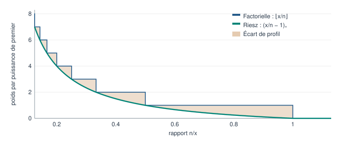
Un deuxième essai : la lemniscate. On peut chercher un objet moins grossier qu’une factorielle. Le sinus lemniscatique \(s\), défini par \(s(0)=0\), \(s'(0)=1\) et \((s')^2=1-s^4\), vérifie \(s''=-2s^3\). Si \(s(z)=\sum_nA_nz^n/n!\), cela donne \[A_{n+2}=-2\sum_{i+j+k=n}\frac{n!}{i!\,j!\,k!}A_iA_jA_k,\] donc des entiers : \(A_1=1\), \(A_5=-12\), \(A_9=3\,024\), et \(A_n=0\) sauf pour \(n\equiv1\pmod4\). Ces entiers sont très divisibles, et d’une façon arithmétique. En un premier \(p\equiv3\pmod4\), \(v_p(A_n)/n\) suit le taux \(p/(p^2-1)\) (pour \(n=161\) : \(0{,}373\) contre \(0{,}375\) si \(p=3\), \(0{,}143\) contre \(0{,}146\) si \(p=7\)) . Aux premiers \(p\equiv1\pmod4\), rien de tel n’est garanti, et la valuation n’est pas toujours nulle : \(v_5(A_{161})=0\), mais \(A_{41}=2^{20}3^{15}7^5\,11^3\,19^2\cdot23\cdot31\cdot179\cdot47\,272\,527\,433\), dont le dernier facteur, premier, est congru à 1 modulo 4. Le groupe formel structure une partie de l’arithmétique des coefficients, pas leur factorisation complète. C’est déjà la multiplication complexe par \(\mathbb Z[i]\), celle de la courbe \(y^2=x^3-x\) du § 3, qui opère. Et la taille se calcule sans les premiers. Les singularités les plus proches de 0 sont les quatre pôles simples \(\pm(1\pm i)\varpi/2\), à distance \(\varpi/\sqrt2\), de résidus de module 1. Comme \(s(iz)=i\,s(z)\), leurs contributions s’ajoutent en phase exactement quand \(n\equiv1\pmod4\), et la méthode de Darboux donne, le long de cette sous-suite, \[|A_n|=4\,n!\,\Big(\frac{\sqrt2}{\varpi}\Big)^{n+1}\big(1+o(1)\big),\] l’erreur venant des pôles suivants, plus éloignés ; le calcul exact le confirme à \(10^{-6}\) près dès \(n=101\). Sur tous les \(n\), puisque \(A_n=0\) hors de cette classe, seule la limite supérieure de \((|A_n|/n!)^{1/n}\) a un sens : elle vaut \(\sqrt2/\varpi\).
Le bilan est pourtant décevant. La formule du produit compare la
divisibilité à la taille : à \(n=401\),
les valuations effectives des premiers \(p\equiv3\pmod4\), \(p\le401\), n’expliquent que 52 % de \(\log|A_n|\) (le cofacteur restant n’est pas
factorisé). Ce n’est pas un accident de calcul, comme le montre le
profil théorique des couches impaires, \[I(n)=\sum_{\substack{p\le n\\p\equiv3\ (4)}}\log
p\sum_{e\ \text{impair}}\Big\lfloor\frac
n{p^e}\Big\rfloor=\tfrac12\,n\log n+O(n).\] En effet, les couches
\(e\ge3\) coûtent \(O(n)\), puisque \(\sum_p\log p\sum_{e\ge3}p^{-e}<\infty\)
; l’arrondi de la première couche coûte \(O(n)\) par Tchebychev ; et le théorème de
Mertens dans les progressions arithmétiques donne \(\sum_{p\le n,\,p\equiv3\,(4)}\log p/p=\tfrac12\log
n+O(1)\). Comme \(\log|A_n|=n\log
n+O(n)\) par l’asymptotique précédente, \(I(n)/\log|A_n|\to\tfrac12\) quand \(n\to\infty\) avec \(n\equiv1\pmod4\) (hors de cette sous-suite,
\(A_n=0\)) : ces premiers forment la
moitié des premiers, et chacun ne fournit que ses couches impaires.
C’est un énoncé sur le profil, non sur la factorisation effective, que
le calcul à l’ordre 401 illustre sans la démontrer ; la convergence est
lente, car les termes en \(O(n)\) ne
sont petits devant \(n\log n\) qu’à une
échelle logarithmique. Un facteur 2 au terme dominant rend l’inégalité
inutilisable pour une estimation fine. De plus, le caractère qui découpe
ces premiers, \(\chi_{-4}\), est fixé
une fois pour toutes : contrôler sa somme tordue serait GRH pour \(\chi_{-4}\). Le modèle a la bonne
forme de divisibilité, mais un seul objet, attaché à un
seul corps, ne peut ni combler l’écart de taille ni échapper à son
caractère. Il faudra des familles d’objets, des
couches empilées et des tailles
exactes. Ces chiffres sont reproduits par tools/lemniscate.py.
Les deux essais laissent deux énigmes. Première énigme : fabriquer un objet qui a presque le profil de divisibilité voulu, et dont la taille se calcule avec la même indépendance que celle d’une factorielle. Le nombre \(\prod_p p^{\lfloor w(p)\rfloor}\) ne convient pas (pour connaître sa taille, il faudrait résoudre le problème), ni 0 (divisible par tout, mais dégénéré). Seconde énigme : améliorer la précision. Élever un objet à la puissance \(m\) multiplie ses valuations par \(m\), mais aussi son logarithme : divisée par \(m\), l’inégalité ne dit rien de plus. Il faut une opération qui ajoute réellement de l’information, avec des coûts qui croissent moins vite que les gains.
La réponse d’Alpöge est surprenante : remplacer l’entier auxiliaire par des réseaux de formes automorphes ; dériver en des points à multiplication complexe pour obtenir la divisibilité ; composer des relèvements thêta pour accumuler les gains ; contrôler les tailles par des inégalités de pentes. Ces outils paraissent moins arbitraires quand on a compris à quelles contraintes ils répondent. Ce texte n’est pas une reconstitution historique de la découverte, mais une expérience de pensée : partir du problème, essayer les outils familiers, et identifier chaque fois ce qui empêche d’aller plus loin.
Ce qui suit est classique (Davenport, Multiplicative Number Theory, chap. 4 à 9 et 19). On fixe les notations du reste du texte.
Caractères de Dirichlet. Un caractère de Dirichlet de module \(N\ge1\) est un morphisme de groupes \(\chi:(\mathbb Z/N\mathbb Z)^\times\to\mathbb C^\times\), prolongé à ℤ par \(\chi(n)=\chi(n\bmod N)\) si \(\gcd(n,N)=1\) et \(\chi(n)=0\) sinon. C’est une fonction complètement multiplicative et \(N\)-périodique, à valeurs dans les racines de l’unité (et 0).
χ = 1 désigne le caractère
principal \(\chi_{0,N}\) de ce module ;
dans les formules pour ζ et pour \(\psi(x)=\psi(x,\mathbf 1)\), le caractère
trivial est de conducteur 1.La fonction \(L(s,\chi)\). Pour \(\operatorname{Re}s>1\), \[L(s,\chi)=\sum_{n\ge1}\frac{\chi(n)}{n^{s}}=\prod_{p}\Big(1-\frac{\chi(p)}{p^{s}}\Big)^{-1},\]
la série et le produit (d’Euler) convergeant absolument. Pour le
caractère trivial \(\mathbf 1\) de
module 1, c’est \(\zeta(s)\) ; pour le
caractère principal \(\chi_{0,N}\) de
module \(N\), \(L(s,\chi_{0,N})=\zeta(s)\prod_{p\mid
N}(1-p^{-s})\). On écrit \(L(s,\chi)\) ; Mathlib et la partie II
écrivent \(L(\chi,s)\)
(LFunction χ s), c’est la même fonction.
Dérivée logarithmique. En dérivant le logarithme du produit d’Euler, \[-\frac{L'}{L}(s,\chi)=\sum_{n\ge1}\frac{\Lambda(n)\chi(n)}{n^{s}},\qquad \Lambda(n)=\begin{cases}\log p & n=p^k,\ k\ge1,\\ 0&\text{sinon}\end{cases}\] (\(\Lambda\) est la fonction de von Mangoldt). C’est le pont entre zéros et nombres premiers : un zéro de \(L\) d’ordre \(m\) est un pôle simple de \(-L'/L\), de résidu \(-m\).
Prolongement et équation fonctionnelle. Si χ est primitif et \(\chi\neq1\), \(L(s,\chi)\) se prolonge en une fonction entière ; \(\zeta\) se prolonge en une fonction méromorphe avec un seul pôle, simple, en \(s=1\). Pour χ primitif de conducteur \(N\), la fonction complétée \[\xi(s,\chi)=\Big(\frac N\pi\Big)^{(s+\kappa)/2}\,\Gamma\Big(\frac{s+\kappa}2\Big)\,L(s,\chi)\] vérifie \(\xi(s,\chi)=\varepsilon(\chi)\,\xi(1-s,\bar\chi)\), avec \(|\varepsilon(\chi)|=1\) (un quotient de sommes de Gauss). La symétrie \(s\leftrightarrow1-s\) échange χ et \(\bar\chi\).
Zéros. Le produit d’Euler interdit les zéros pour \(\operatorname{Re}s>1\), et Hadamard–de la Vallée Poussin les excluent sur \(\operatorname{Re}s=1\). Les pôles de Γ donnent les zéros triviaux \(s=-\kappa,-\kappa-2,-\kappa-4,\dots\) (pour ζ : \(-2,-4,\dots\)). Tous les autres, les zéros non triviaux \(\rho=\beta+i\gamma\), sont dans la bande critique \(0<\beta<1\). Il y en a une infinité, environ \(\frac{T}{2\pi}\log\frac{NT}{2\pi}\) de hauteur \(0<\gamma\le T\). Par l’équation fonctionnelle et la conjugaison (\(\overline{L(\bar s,\chi)}=L(s,\bar\chi)\)), si ρ est un zéro non trivial de \(L(s,\chi)\), alors \(1-\bar\rho\) en est un aussi (la restriction est nécessaire : \(-2\) est un zéro de ζ, mais \(3\) n’en est pas un) : l’ensemble des zéros non triviaux est symétrique par rapport à la droite critique \(\operatorname{Re}s=\tfrac12\).
Caractères non primitifs. Si χ est induit par \(\chi^\ast\), \(L(s,\chi)=L(s,\chi^\ast)\prod_{p\mid N}(1-\chi^\ast(p)p^{-s})\) : les facteurs ajoutés ne s’annulent que sur \(\operatorname{Re}s=0\).
RH et GRH.
Grâce à la symétrie \(\rho\leftrightarrow1-\bar\rho\), il revient
au même de dire qu’il n’y a aucun zéro dans le demi-plan \(\operatorname{Re}s>\tfrac12\) :
un zéro à gauche de la droite critique en a un miroir à droite. C’est
sous cette forme, qui ne parle ni de zéros triviaux ni de primitivité,
que le théorème est énoncé, y compris dans Lean : pour tout
caractère χ et tout \(s\) avec \(\operatorname{Re}s>\tfrac12\), \(L(s,\chi)\neq0\), sauf en \(s=1\) pour le caractère principal de chaque
module, dont la fonction L a un pôle (en Lean, l’hypothèse
χ ≠ 1 ∨ s ≠ 1, car LFunction prend au pôle une
valeur conventionnelle).
Traduction en termes de nombres premiers. Notons \(\psi(x,\chi)=\sum_{n\le x}\Lambda(n)\chi(n)\) la fonction de Tchebychev tordue par χ (\(\psi(x)=\psi(x,1)\)). La formule explicite de Riemann–von Mangoldt l’écrit comme une somme d’ondes indexées par les zéros : \[\psi(x,\chi)=\delta_\chi\,x-\sum_{\rho}\frac{x^\rho}{\rho}+(\text{termes bornés par }O(\log x)),\qquad \delta_\chi=\begin{cases}1&\chi=1\\0&\chi\ne1\end{cases}\] Cette formule vaut pour χ primitif, les zéros étant comptés avec multiplicité. Pour un caractère non primitif, on retire les contributions des premiers qui divisent le module sans diviser le conducteur : cela coûte \(O_N(\log x)\) pour la somme non lissée, mais peut coûter un terme linéaire en \(x\) pour la somme de Riesz, raison de plus pour rester dans le cas primitif (§ 1.2). La somme sur les zéros est prise symétriquement, \(|\operatorname{Im}\rho|\le T\) avec \(T\to\infty\), et l’identité vaut pour \(\psi_0(x,\chi)\), demi-somme des limites aux points de saut, qui diffère de ψ d’au plus \(\frac12\log x\) ; les constantes sont des \(O_{\chi,\varepsilon}\). Un zéro \(\rho=\beta+i\gamma\) produit une oscillation d’amplitude \(x^\beta\). D’où l’équivalence, pour tout ε > 0 : \[\text{GRH pour }\chi\iff\psi(x,\chi)-\delta_\chi x=O_\varepsilon\big(x^{1/2+\varepsilon}\big).\] Le sens ⇐ est celui dont nous avons besoin. Pour \(\operatorname{Re}s>1\), on a \[-\frac{L'}{L}(s,\chi)-\delta_\chi\frac{s}{s-1}=s\int_1^\infty\big(\psi(x,\chi)-\delta_\chi x\big)x^{-s-1}\,dx.\] Une borne \(O(x^\theta)\) sur la quantité centrée rend cette intégrale holomorphe pour \(\operatorname{Re}s>\theta\) ; le terme rationnel ne peut masquer aucun pôle provenant d’un zéro non trivial. Le pôle en \(1\) pour ζ est donc traité séparément. Démontrer GRH, c’est majorer des sommes sur les nombres premiers avec une erreur en racine carrée.
Notation. Dans la suite, la lettre ψ seule désigne un caractère primitif (celui que l’on traite), et \(\psi(x,\chi)\) la fonction de Tchebychev ; γ désigne la constante d’Euler \(0{,}5772\ldots\), sauf dans \(\rho=\beta+i\gamma\).
Théorème. Pour tout caractère de Dirichlet χ, \(L(s,\chi)\neq0\) pour \(\operatorname{Re}s>\tfrac12\) (hors du pôle \(s=1\) du caractère principal). En particulier, l’hypothèse de Riemann est vraie.
La stratégie en une phrase. On majore une somme de nombres premiers comme Tchebychev majorait \(\theta(2n)-\theta(n)\) : par la formule du produit, appliquée à un objet arithmétique très divisible et de taille connue. Mais on empile les couches de divisibilité comme Stepanov empile les ordres d’annulation, ce qui vise l’exposant ½ : la construction fournit \(O_\varepsilon(x^{1/2+\varepsilon})\) sur des fenêtres appropriées. Une fois GRH établie, la formule explicite lissée donne \(O(\sqrt x)\) pour un caractère fixé ; ce sont deux étapes distinctes.
Le point de départ (§ 1). Une analyse classique (formule explicite lissée, positivité de Landau) ramène GRH à une seule inégalité, vraie sur une suite de fenêtres d’échelles : \[G_\psi(x)\;\le\;x^{1/2+C\varepsilon},\] où \(G_\psi\) est une somme de \(\log p\) à coefficients positifs, pondérée par le poids de Riesz \((x/n-1)_+\), et dont on a retranché le terme principal. Il suffit d’une majoration : les zéros hors de la droite critique poussent toujours, tôt ou tard, \(G_\psi\) vers le haut. Tout le reste de la preuve établit cette inégalité. Chaque réponse ci-dessous laisse une dette, la réalisation effective de ce qu’elle décrit ; les trois principales sont rassemblées dans le tableau « Trois articulations encore opaques », à la fin de la partie II. Les cinq questions qui suivent sont cinq obstacles successifs, non cinq théories à apprendre.
Deux modèles réduits servent de guide :
| Tchebychev (1852) | Stepanov (1969) | Alpöge (2026) | |
|---|---|---|---|
| On majore | \(\theta(2n)-\theta(n)\) | \(\#\{x:g(x)\text{ carré}\}\) sur \(\mathbb F_p\) | \(G_\psi(x)\) |
| Objet | l’entier \(\binom{2n}n\) | un polynôme \(F\) | un réseau de périodes de formes automorphes |
| « Être multiple » | \(v_p=1\) pour \(p\in\,]n,2n]\) | \(F\) s’annule à l’ordre \(a\) sur \(S\) | divisibilité \(p\)-adique en \(m\) couches |
| Taille | \(\binom{2n}n\le4^n\) | \(\deg F\) | pentes, volumes exacts |
| Bilan | \(\sum v_p\log p=\log M\) | \(a\,\lvert S\rvert\le\deg F\) | formule du produit pour les réseaux |
| Erreur | \(O(x)\) | \(O(\sqrt p)\) | \(O(x^{1/2+\varepsilon})\) |
Un entier non nul \(M\) vérifie \(\sum_pv_p(M)\log p=\log|M|\). S’il est divisible par les premiers voulus et si l’on connaît sa taille sans connaître les premiers, on majore une somme de \(\log p\). La qualité de la borne dépend du profil \(p\mapsto v_p(M)\). Celui de \(\binom{2n}n\) est une dent de scie, qui touche aussi des premiers « parasites », d’où une perte d’un facteur \(\log4\). Celui de \(y!\) est presque le poids de Riesz, et il donne déjà \(G(y)\le\gamma\,y+O(\log y)\). Toute la preuve vise à remplacer \(\gamma y\) par une borne d’exposant \(\tfrac12+\varepsilon\). Trois contre-exemples fixent le cahier des charges : l’objet doit être non nul, son profil doit suivre le poids, et sa taille doit se calculer sans les premiers.
La dérivation fournit des factorielles, \(D^af(0)=a!\cdot\mathrm{coeff}_a(f)\), donc le gain de Legendre \(a/(p-1)\). Mais une série thêta n’est entière que dans la coordonnée d’un groupe formel, et le passage à la coordonnée où l’on dérive coûte des dénominateurs :
La multiplication complexe rend la réduction supersingulière en tous les premiers inertes. Sur \(y^2=x^3-x\), \(v_3(D^{161}\exp(0))=61\approx161\cdot\frac38\), alors que \(v_5\) est nul dans ce calcul (ce qui n’est pas une loi générale aux premiers décomposés). Le profil obtenu, \(\frac am\cdot\frac{1-\chi_{-d}(m)}2\) pour \(m\) premier à \(d\) (le premier ramifié \(d\) est traité à part), est celui de Legendre, restreint par un caractère quadratique. Ce caractère est un parasite : il faut contrôler la somme tordue centrée \(g(y,\chi_{-d})\), ce que l’on obtient en choisissant le corps CM dans une famille immense (grand crible). C’est aussi pourquoi la preuve change de corps à chaque fenêtre.
Stepanov compte les points d’une courbe par une fonction auxiliaire
qui s’annule à l’ordre \(a\) sur tous
les points, avec un degré bien inférieur à \(a\) fois le degré naïf. Il y parvient parce
que la dérivation ignore les \(X^{jp}\), qui valent \(X^j\) sur \(\mathbb F_p\). Élever une fonction à la
puissance \(a\) ne servirait à rien :
il faut des couches nouvelles. Sur ℤ, une couche est un
gain \(p\)-adique au point CM (Q2). Le
relèvement thêta fournit l’opération qui en ajoute une
et qui se compose. Sur l’export, la période se factorise par le produit
de matrices \(K_m\cdots K_1\), et les
valuations d’un produit s’additionnent : \[v_p(\text{période})\;\ge\;\sum_{j=1}^m\mathrm{gain}_j(p)-\text{pertes}.\]
Les groupes unitaires grandissent à chaque pas, pour que chaque couche
soit neuve. Que chaque étage apporte bien son gain, à un coût contrôlé,
la croissance des groupes ne le prouve pas : c’est ce qu’exige
l’interface LinkG_at (§ 4 et partie II). La
longueur \(m\) de la chaîne joue le
rôle de l’ordre d’annulation. Sur l’export, les gains ne sont
pas seulement empilés : ils sont distribués. Le
Théorème A rend des lignes admissibles, et une propriété de rang \(p\)-adique le long des arêtes de Hecke
(LPprime) propage leur divisibilité à une proportion \(1-\kappa\) des directions du réseau ; la
croissance des groupes ne garantit pas à elle seule ce rang (§ 3.5).
Appliquée à \(y!\), la formule du
produit donne deux calculs égaux : Legendre (\(\sum\Lambda(m)\lfloor y/m\rfloor\)), qui
demande les premiers, et Stirling (\(y\log
y-y+\cdots\)), qui ne les demande pas. La raison est que \(-\zeta'\) a un pôle
(double) en \(s=1\) et reste
holomorphe aux zéros de ζ, là où \(-\zeta'/\zeta\) a des pôles. Les
tailles archimédiennes de la preuve sont du même type : masses de
Siegel, normes de Rallis, périodes CM. Ce sont des produits de valeurs
de Γ, de puissances de π et de valeurs de ζ ou de fonctions L en des
points où les identités nécessaires s’établissent sans supposer GRH ; la
masse de \(E_8\) vaut \(1/696\,729\,600\), et l’intégrale de \(dx/y\) le long de la branche réelle de
\(y^2=x^3-x\), de 1 à l’infini, vaut
\(\varpi=\Gamma(1/4)^2/2\sqrt{2\pi}\)
(la constante de la lemniscate ; le cycle réel complet donne \(2\varpi\)), qu’il faut encore normaliser
pour obtenir la quantité de CM.DegSt (§ 5). Elles ne voient
pas les fluctuations. À condition de reproduire exactement le bon terme
principal, ce qui demande une identité et pas seulement des volumes
exacts (atelier 5), celui-ci se simplifie dans
l’inégalité, et il ne reste que : fluctuations ≤ pertes. Pour un terme
principal d’ordre \(x\log x\) et une
erreur visée \(x^{1/2+O(\varepsilon)}\), cela exige une
exactitude relative de l’ordre de \(x^{-1/2}/\log x\). C’est pourquoi la preuve
utilise des égalités (SiegelMassRatioCM) et une
quasi-orthogonalité à erreur \(e^{-6x^\varepsilon}\).
L’erreur par terme, lue sur l’export et après les contrôles de paramètres, vaut \(\lesssim4x/m+4m+2\sqrt x\), à des facteurs \(x^{O(\varepsilon)}\) près. Le coût fixe, de l’ordre de \(x\), est l’imprécision d’une seule couche, amortie sur \(m\) relèvements. Le coût marginal, en \(m\), vient de ce que chaque relèvement perd proportionnellement à la longueur de la chaîne. Comme \(x/m+m\ge2\sqrt x\), l’optimum est \(m\approx\sqrt x\), et le code impose \(x^{1/2-\varepsilon}\le m\le x^{1/2+\varepsilon/2}\). Ce ½ n’est pas fortuit. On ne peut pas descendre plus bas : un zéro sur la droite critique est une singularité de la transformée de Mellin de \(G\), ce qui interdit tout exposant inférieur (§ 6.3) ; les données jusqu’à \(10^7\) le montrent sans le prouver. Avec un coût fixe en \(x\) et une perte quadratique par relèvement, et si toutes les autres contraintes restaient satisfaites, la même machinerie ne démontrerait que l’absence de zéros pour \(\operatorname{Re}s>2/3\).
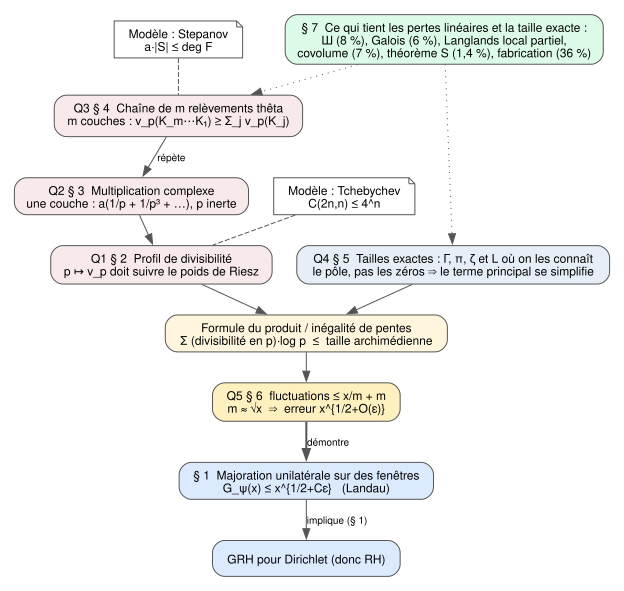
Trois étages. La preuve se lit en trois implications : des paramètres admissibles permettent de fabriquer des objets qui satisfont simultanément un contrat ; un théorème de comptabilité déduit de ce contrat une borne à une échelle, où le terme principal se compense (§ 6.2) ; l’optimisation des paramètres et la réduction analytique de Landau en tirent GRH (§§ 1, 6). Le premier étage est de loin le plus lourd ; les deux derniers sont presque entièrement lus.
Sur les 1,47 M de déclarations de la fermeture, ce qui appartient
en propre au mécanisme pèse moins de 0,5
% : c’est l’union des sous-arbres dominés de 13 nœuds
explicites, de la réduction de Landau à linkCore
(définition et listes dans l’article, § 4.3). Ce chiffre ne compte pas
les dépendances partagées. Le reste garantit les trois exigences de Q1
et la condition de Q5 :
LinkN), alimentée par les représentations
galoisiennes (6 %) et par les groupes de Tate–Shafarevich (8 %), ces
derniers fournis avec le corps hôte ; s’y ajoute Langlands local partiel
;L’échafaudage « littérature » est hors du chemin, et aucun énoncé publié n’entre comme axiome (partie II). Le principe est petit et peu coûteux ; ce qui est massif, c’est la fabrication et l’entretien des organes qui le rendent applicable.
Comment lire la suite. La partie I suit l’ordre des questions : § 1 (réduction), puis §§ 2 à 6 (Q1 à Q5), puis § 7 (les pertes). Chaque section donne un exemple élémentaire, un calcul, un contre-exemple, puis le cas réel, et se termine par ce que le graphe en dit. Des ateliers suivent un même premier, 3, d’un bout à l’autre (§§ 2 à 5), et deux interludes introduisent les séries thêta (§ 4) et les pentes (§ 5).
Ce paragraphe ramène GRH à une seule inégalité, sans aucune arithmétique fine : uniquement de l’analyse complexe classique (Perron, Landau). Il tient en cinq étapes. Dans le code, c’est la partie légère : environ 73 000 déclarations, pour l’essentiel l’analyse de Mathlib (partie II).
Si χ est induit par \(\chi^\ast\), de module \(N\), \[L(s,\chi)=L(s,\chi^\ast)\prod_{p\mid N}\big(1-\chi^\ast(p)p^{-s}\big).\] Chaque facteur a pour module \(\ge 1-p^{-\operatorname{Re}s}>0\) si \(\operatorname{Re}s>0\) : il ne s’annule pas à droite de l’axe imaginaire. Les zéros de \(L(s,\chi)\) dans \(\operatorname{Re}s>\tfrac12\) sont donc ceux de \(L(s,\chi^\ast)\), et il suffit de traiter les caractères primitifs. RH est le cas \(\chi^\ast=1\) (module 1), c’est-à-dire ζ ; les caractères triviaux de module \(N\) s’y ramènent.
La preuve ne traite pas un caractère isolé, mais tout un niveau à la fois. Pour ψ primitif d’ordre \(o\), on note \[K_\psi=\{\chi_0=1,\ \chi_1,\dots,\chi_{o-1}\},\qquad \chi_j=\text{le caractère primitif qui induit }\psi^j .\] C’est un ensemble de \(o\) caractères primitifs, stable par conjugaison (\(\overline{\psi^j}=\psi^{o-j}\)), qui contient 1. On démontrera d’un coup que ni ζ ni aucun des \(L(s,\chi_j)\) ne s’annule pour \(\operatorname{Re}s>\tfrac12\). Pour RH seule, \(\psi=1\), \(o=1\) et \(K_\psi=\{1\}\).
La fonction \(\psi(x,\chi)\) des prémisses a deux défauts : elle saute en chaque puissance de premier, et sa formule explicite \(\sum_\rho x^\rho/\rho\) ne converge que conditionnellement (car \(\sum 1/|\rho|\) diverge). La preuve utilise plutôt le poids de Riesz \((y/n-1)_+\) : \[S(y,\chi)=\sum_{n\le y}\Lambda(n)\chi(n)\Big(\frac yn-1\Big)=\int_1^y\Big(\sum_{n\le t}\frac{\Lambda(n)\chi(n)}{n}\Big)\,dt .\] C’est une primitive (une moyenne) : elle est continue, et chaque intégration fait gagner un facteur \(1/|\rho|\) dans la formule explicite.
La formule de Perron. Pour \(c>1\) et \(y>0\), le calcul des résidus en \(s=1\) et \(s=0\) donne \[\frac1{2\pi i}\int_{c-i\infty}^{c+i\infty}\frac{(y/n)^s}{s(s-1)}\,ds=\Big(\frac yn-1\Big)_+ ,\] d’où, en sommant contre \(\Lambda(n)\chi(n)\) et en utilisant la dérivée logarithmique, \[S(y,\chi)=\frac1{2\pi i}\int_{(c)}\Big(-\frac{L'}{L}(s,\chi)\Big)\frac{y^s}{s(s-1)}\,ds .\] Le noyau décroît comme \(|s|^{-2}\) : l’intégrale converge absolument, et on peut déplacer le contour vers la gauche en ramassant les résidus.
On retire donc le terme principal, ce qui définit \[g(y,\chi)=S(y,\chi)+y\,\frac{L'}{L}(1,\chi)\quad(\chi\ne1),\qquad G(y)=S(y,1)-y\log y+(1+\gamma)\,y ,\] et l’on obtient la formule explicite lissée : \[g(y,\chi)=-\sum_\rho m_\rho\,\frac{y^\rho}{\rho(\rho-1)}+O(\log y),\] et de même pour \(G\) avec les zéros de ζ. La série converge absolument, puisque \(\sum_\rho1/|\rho|^2<\infty\). Deux conséquences :
Le point 2 demande une borne en valeur absolue : il faudrait contrôler les fluctuations de \(g\) vers le haut et vers le bas. La suite de la réduction supprime une de ces deux exigences.
Pour ψ primitif d’ordre \(o\), on forme \[G_\psi(y)=G(y)+\frac{1}{3o+1}\sum_{j=1}^{o-1}\operatorname{Re}g(y,\chi_j).\] Comme \(K_\psi\) est stable par conjugaison et \(g(y,\bar\chi)=\overline{g(y,\chi)}\), la somme des parties réelles est la somme des \(g(y,\chi_j)\) elles-mêmes. \(G_\psi\) est donc la somme de Riesz, terme principal ôté, de la série de Dirichlet \[D_\psi(s)=-\frac{\zeta'}{\zeta}(s)-\frac1{3o+1}\sum_{j=1}^{o-1}\frac{L'}{L}(s,\chi_j)=\sum_{n\ge1}\frac{c_n}{n^s},\qquad c_n=\Lambda(n)\Big(1+\frac1{3o+1}\sum_{j=1}^{o-1}\chi_j(n)\Big).\]
Les coefficients sont positifs. Si \(n\) est premier au conducteur de ψ, \(\chi_j(n)=\psi(n)^j\), et la somme géométrique \(\sum_{j=1}^{o-1}\psi(n)^j\) vaut \(o-1\) si \(\psi(n)=1\), et \(-1\) sinon. D’où \[c_n=\Lambda(n)\cdot\begin{cases}\dfrac{4o}{3o+1}&\text{si }\psi(n)=1,\\[8pt]\dfrac{3o}{3o+1}&\text{sinon.}\end{cases}\] Pour les puissances des premiers \(p\) qui divisent le conducteur, on borne chaque \(|\chi_j(n)|\le1\) : \(c_n\ge\Lambda(n)\,\frac{2o+2}{3o+1}>0\). Dans tous les cas \(c_n\ge0\), et \(c_n=0\) seulement si \(\Lambda(n)=0\).
D’où vient \(1/(3o+1)\). Le profil 4 : 3 n’est
pas arbitraire, il se lit sur l’export
(Formalism.HC.Frame.lam, consommé par
BernoulliSumsFrobeniusOrbits.topsFrame, sur les orbites de
Frobenius de l’hôte du § 3.4). Côté analytique, Level.wt
donne le poids 1 à un éventuel caractère réel impair distingué
(psK) et \(1/(3o+1)\) aux
autres ; sur le chemin principal (Level.cyc), aucun
caractère n’est distingué. Les premiers y sont échantillonnés selon leur
classe modulo un sous-groupe d’indice \(o\) d’un groupe de Frobenius, avec la
proportion \(4/(3o+1)\) pour la classe
neutre et \(3/(3o+1)\) pour chacune des
\(o-1\) autres. Le total vaut \((4+3(o-1))/(3o+1)=1\). Les coefficients de
Fourier de cette distribution valent \(1\) pour le caractère trivial et \(\frac{4-3}{3o+1}=\frac1{3o+1}\) pour tous
les autres : ce sont exactement les poids de \(G_\psi\), et \(c_n/\Lambda(n)\) est \(o\) fois la proportion de la classe de
\(n\). Une distribution uniforme
donnerait des poids nuls et ne verrait pas les \(\chi_j\) ; une distribution strictement
positive garantit la positivité. Pourquoi 4 : 3 plutôt qu’un autre
mélange, le code ne le dit pas ⟦I⟧ : la positivité seule ne l’impose
pas. Un rapport \(r:1\) entre la classe
neutre et les autres donnerait des coefficients \((r-1)/(r+o-1)\), positifs dès que \(r>1\) ; \(r=4/3\) donne \(1/(3o+1)\). L’origine de ce rapport est à
chercher dans la construction de l’hôte et des orbites épaisses. Notons
enfin que la positivité d’une distribution sur les classes n’entraîne
pas celle de ses coefficients de Fourier : c’est le calcul explicite du
profil 4 : 3 qui la donne.
Pas de compensation entre zéros. La transformée de Mellin de \(G_\psi\) est \(D_\psi(s)/(s(s-1))\), à une fraction rationnelle près. Ses pôles dans \(0<\operatorname{Re}s<1\) sont les zéros ρ de ζ ou de l’un des \(L(s,\chi_j)\), avec le poids \[w_\rho=m_\rho(\zeta)+\frac1{3o+1}\sum_{j=1}^{o-1}m_\rho(\chi_j)\;>\;0 .\] Toutes les multiplicités entrent avec un signe \(+\) : un zéro de l’une des fonctions ne peut pas être masqué par une autre. C’est l’idée de de la Vallée Poussin, qui combinait \(\zeta(\sigma)^3|\zeta(\sigma+it)|^4|\zeta(\sigma+2it)|\) grâce à \(3+4\cos\theta+\cos2\theta=2(1+\cos\theta)^2\ge0\).
Théorème de Landau. Soit \(f\ge0\) sur \([1,\infty)\) et \(H(s)=\int_1^\infty f(y)\,y^{-s-1}dy\), d’abscisse de convergence \(\sigma_c\). Alors \(H\) n’a pas de prolongement holomorphe au voisinage du point réel \(s=\sigma_c\). (Preuve : on développe \(H\) en série de Taylor en un point réel \(a>\sigma_c\). Les dérivées \((-1)^kH^{(k)}(a)=\int f(y)(\log y)^ky^{-a-1}dy\) sont positives ; si la série convergeait un peu au-delà de \(\sigma_c\), on pourrait l’intervertir avec l’intégrale, qui convergerait donc au-delà de \(\sigma_c\).)
Application. Supposons \(G_\psi(y)\le y^\theta\) pour \(y\ge y_0\), avec \(0<\theta<1\). On pose \(f(y)=y^\theta-G_\psi(y)\ge0\) pour \(y\ge y_0\), et \(f=0\) en deçà. Sa transformée est \[H(s)=\frac{y_0^{\theta-s}}{s-\theta}-\int_{y_0}^\infty G_\psi(y)y^{-s-1}\,dy.\] En utilisant la définition de \(G_\psi\) et en prolongeant la transformée depuis \(\operatorname{Re}s>1\), on obtient \[H(s)=\frac{1}{s-\theta}-\frac{D_\psi(s)}{s(s-1)}+R(s)+E(s),\] où \(R\) est la fraction rationnelle venant des termes principaux et \(E\) est entière (la modification sur un intervalle compact). C’est la combinaison \(-D_\psi(s)/(s(s-1))+R(s)\), et non \(R\) seule, qui est holomorphe en \(s=1\).
Supposons par l’absurde \(\sigma_c>\theta\). D’après Landau, \(\sigma_c\) est une singularité, donc un pôle de \(D_\psi/(s(s-1))\) : un zéro réel \(\beta=\sigma_c\in(\theta,1)\). Son résidu dans \(D_\psi(s)/(s(s-1))\) est \(-w_\beta/(\beta(\beta-1))=w_\beta/(\beta(1-\beta))>0\). Quand \(\sigma\to\beta^+\), \(H(\sigma)\to-\infty\), ce qui contredit \(H(\sigma)=\int f\,y^{-\sigma-1}\ge0\). Donc \(\sigma_c\le\theta\) : \(H\) est holomorphe sur \(\operatorname{Re}s>\theta\), et donc \(D_\psi\) aussi en dehors de son pôle en \(s=1\). Ni ζ ni aucun \(L(s,\chi_j)\) n’a de zéro de partie réelle \(>\theta\).
Lecture intuitive. Imaginons un zéro réel \(\beta>\theta\). Sa contribution au terme lissé est positive : \(w_\beta y^\beta/[\beta(1-\beta)]\). Elle pousse naturellement vers le haut la somme que nous voulons majorer. Pour un zéro complexe, le signal oscille, et plusieurs signaux peuvent momentanément s’annuler. Ce n’est pas la positivité des coefficients de la série de Dirichlet, prise seule, qui exclut une compensation durable : le raisonnement de Landau utilise la non-négativité de \(y^\theta-G_\psi(y)\) et le signe précis des résidus aux singularités réelles. Il transforme une information sur un seul côté de la courbe en une propriété d’holomorphie sur tout un demi-plan.
Il y a là un gain stratégique considérable. Si la méthode arithmétique produit naturellement une inégalité dans un seul sens, nous n’avons pas à chercher une seconde construction donnant la minoration. Nous savons maintenant quelle sorte de certificat arithmétique il faut fabriquer.
La méthode des §§ 2 à 7 ne fournit pas la majoration pour tout \(y\) grand, mais seulement sur des plages d’échelles où l’on a pu construire un corps hôte (§ 3.4) : il faut choisir \(q\) et \(d\) en fonction de la plage. La preuve démontre donc une forme de Landau en fenêtres. Lu sur l’export, dans le sens contraposé :
Critère en fenêtres. Soit \(\lambda>1\) et \(0<\theta<1\). Si ζ ou l’un des \(L(s,\chi_j)\) a un zéro de partie réelle \(>\theta\), alors pour tout \(Y\) assez grand, il existe \(y\in[Y,Y^\lambda]\) tel que \(G_\psi(y)>y^\theta\).
Autrement dit, un zéro au-delà de θ se voit dans chaque fenêtre \([Y,Y^\lambda]\) assez loin, et pas seulement « quelque part à l’infini ». Il suffit donc de majorer \(G_\psi\) sur une suite de fenêtres \([Y_k,Y_k^\lambda]\), \(Y_k\to\infty\). Le critère vaut pour tout \(\lambda>1\) ; la suite de la preuve l’applique avec des plages \([Y,Y^{3/2}]\) ou \([Y,Y^2]\).
Comment on localise, sur l’export. L’énoncé est
Level.FormBAt : si l’ensemble \(\{y: G_\psi(y)\le y^\theta\}\) contient des
fenêtres \([Y,Y^\lambda]\) pour des
\(Y\) arbitrairement grands, aucune des
fonctions n’a de zéro de partie réelle \(>\theta\). Il est démontré par
Comparison₂.formB et
Deduction.zeroFree_of_rpow_window (environ 140 000 lignes
pour une centaine de déclarations propres). La preuve suit Landau, avec
un ingrédient probabiliste :
iteratedDeriv_laplace) ;landau_kernel_max), et sa masse hors d’un intervalle \([U,V]\) est majorée par une borne
de Chernoff, \(e^{-lV}(\sigma-l)^{-k-1}+e^{lU}(\sigma+l)^{-k-1}\)
(landau_tails_chernoff) ;mertens_upper) suffit
;landau_window_key), puis un lemme de
dichotomie (landau_dichotomy) conclut. Si
la singularité la plus proche est un zéro complexe, le rayon de
convergence l’exclut ; si c’est un zéro réel isolé \(\beta>\theta\), le signe de son résidu
l’exclut : positif dans la transformée de \(G_\psi\), négatif dans celle de \(y^\theta-G_\psi\), qui est l’intégrale
d’une fonction positive sur la fenêtre (§ 1.4).Un modèle du noyau gamma. Pourquoi des dérivées d’ordre élevé localisent-elles une intégrale de Laplace ? La masse de \(u^ke^{-\sigma u}/k!\) sur \(u\ge0\) vaut \(\sigma^{-k-1}\) ; normalisée, c’est la densité gamma \(q_{k,\sigma}(u)=\sigma^{k+1}u^ke^{-\sigma u}/k!\), de moyenne \((k+1)/\sigma\) et de variance \((k+1)/\sigma^2\). En variable \(u=\log y\), la fenêtre \([Y,Y^\lambda]\) devient \([L,\lambda L]\) avec \(L=\log Y\). Choisir \(k+1\approx\sigma(1+\lambda)L/2\) place la moyenne au milieu de la fenêtre ; l’écart-type est \(O(\sqrt L)\), alors que la demi-largeur de la fenêtre est proportionnelle à \(L\). Bienaymé–Tchebychev donne une masse extérieure \(O(1/L)\), Chernoff beaucoup mieux. Ce modèle explique la localisation ; il ne suffit pas à contrôler l’intégrale pondérée par la fonction à majorer, pour laquelle la croissance hors fenêtre, les paramètres complexes et la dichotomie restent nécessaires.
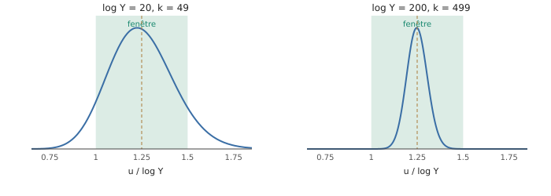
Slijepčević juge cette forme en fenêtres nouvelle. Dans l’architecture de cette preuve, un critère localisé est indispensable : sans elle, il faudrait un même hôte pour toutes les échelles, ce que le choix en moyenne ne fournit pas. Un texte ultérieur (hexagon:2611.00828) propose toutefois de la remplacer par un théorème d’oscillation classique, celui de Kaczorowski–Pintz.
Une fenêtre plutôt qu’une trajectoire entière. Mettons \(u=\log y\). Un intervalle \([Y,Y^{3/2}]\) devient \([\log Y,\tfrac32\log Y]\) : sa longueur tend vers l’infini. Une oscillation élémentaire de fréquence \(\gamma\) traverse donc beaucoup de périodes à l’intérieur de cette fenêtre. Cela explique qualitativement pourquoi l’on peut espérer y détecter un zéro. Mais dans une superposition infinie de fréquences, l’argument n’est pas une preuve : la localisation rigoureuse rapportée dans l’export est précisément la difficulté du critère. En échange, le corps auxiliaire pourra dépendre de la fenêtre. Ce détail analytique est donc une condition de faisabilité de toute la construction algébrique, et non un simple raffinement de Landau.
En appliquant 1.4 et 1.5 avec \(\theta=\tfrac12+C\varepsilon\) pour chaque \(\varepsilon>0\), puis en faisant \(\varepsilon\to0\), on obtient l’absence de zéros pour \(\operatorname{Re}s>\tfrac12\), simultanément pour ζ et pour tous les \(L(s,\chi_j)\), \(\chi_j\in K_\psi\). Comme tout caractère primitif appartient à son propre niveau \(K_\psi\), cela donne GRH pour tous les caractères de Dirichlet.
Bilan. Tout se ramène à démontrer, pour chaque ψ primitif, chaque ε > 0 assez petit et chaque échelle \(x\) d’une suite de fenêtres \([Y_k,Y_k^\lambda]\), \(Y_k\to\infty\) : \[\boxed{\;G_\psi(x)\;\le\;x^{1/2+C\varepsilon}\;}\] C’est une majoration unilatérale d’une somme pondérée de \(\log p\), à coefficients positifs, avec une erreur en racine carrée. Les §§ 2 à 7 ne font rien d’autre.
Le § 1 a ramené GRH à une majoration de \(G_\psi(x)\), une somme pondérée de \(\log p\). Il reste à savoir comment majorer une somme de \(\log p\). L’outil de la preuve est la divisibilité, et le plus simple pour comprendre comment il fonctionne est de partir d’un argument de 1852 qui contient déjà tout le mécanisme, à une précision près.
Soit \(M\) un entier non nul. Sa factorisation donne une identité : \[\sum_p v_p(M)\,\log p \;=\; \log|M| .\] Le membre de gauche est une somme de \(\log p\) : c’est le type de quantité qu’on veut majorer. Le membre de droite est une taille ordinaire, mesurée par la valeur absolue réelle. Pour majorer une somme de \(\log p\), on cherche donc un entier non nul qui vérifie deux choses :
On en tire \(\sum_p w(p)\log p\le\log H\). C’est la formule du produit, \(\prod_v|M|_v=1\), lue en logarithmes : un nombre très divisible est grand, et la taille limite donc la divisibilité.
On prend \(M=\binom{2n}{n}\).
Pour \(n=10\) : \(\binom{20}{10}=184\,756=2^2\cdot11\cdot13\cdot17\cdot19\), et l’on lit \(\log(11\cdot13\cdot17\cdot19)\approx10{,}7\le10\log4\approx13{,}9\). On somme ensuite sur les dyadiques \(x,x/2,x/4,\dots\), ce qui donne \(\theta(x)\le2x\log4\) (Erdős obtient même \(\theta(x)<x\log4\) en raffinant).
| \(n\) | \(\theta(2n)-\theta(n)\) | \(\log\binom{2n}{n}\) | \(n\log 4\) |
|---|---|---|---|
| 10 | 10,7 | 12,1 | 13,9 |
| 1 000 | 983,6 | 1 382,3 | 1 386,3 |
| 10⁶ | 1 000 103,5 | 1 386 286,9 | 1 386 294,4 |
(Calculé par tools/modeles.py.)
La majoration est juste, mais elle perd un facteur \(\log4\approx1{,}39\) : c’est une erreur en \(O(x)\), alors que la preuve vise \(O(\sqrt x)\). D’où vient cette perte ? Ce n’est pas la borne archimédienne, qui est presque exacte : la troisième colonne colle à la quatrième, à \(\tfrac12\log(\pi n)\) près (Stirling). Ce n’est pas non plus la divisibilité : Legendre donne \(v_p(M)\) exactement. Ce qui perd, c’est le profil de la divisibilité.
Par Legendre, \(v_p\binom{2n}{n}=\sum_{k\ge1}f(n/p^k)\), avec \(f(t)=\lfloor2t\rfloor-2\lfloor t\rfloor\). Cette fonction vaut 1 si la partie fractionnaire de \(t\) est \(\ge\tfrac12\), et 0 sinon. On voulait l’indicatrice de \(]n,2n]\). On obtient une dent de scie, qui vaut aussi 1 sur \(]n/2,2n/3]\), sur \(]n/3,2n/5]\), etc., et qui vaut plus pour les petits premiers :
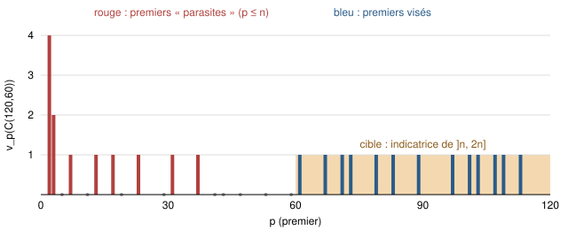
En sommant sur \(p\), on obtient l’identité de Tchebychev : \[\log\binom{2n}{n}=\psi(2n)-\psi(n)+\psi(2n/3)-\psi(2n/4)+\psi(2n/5)-\cdots\] L’objet ne « voit » pas \(\psi(2n)-\psi(n)\) seule, mais une combinaison de sommes de premiers. Les termes en trop, les parasites, sont positifs dans leur ensemble. On ne peut que les jeter, et c’est là qu’on perd \(0{,}39\,n\).
La règle de fonctionnement. Avec un objet \(M\), on majore \(\sum_p v_p(M)\log p\), et rien d’autre. La qualité de la borne dépend de l’écart entre le profil de divisibilité \(p\mapsto v_p(M)\) et le poids visé. Le programme de la preuve est de fabriquer des objets dont le profil, après normalisation et sommation, reproduit celui de Riesz avec une erreur en \(x^{1/2+O(\varepsilon)}\).
Le même calcul avec le poids de Riesz. La formule de Legendre s’écrit aussi \[\log\lfloor y\rfloor!=\sum_{m\le y}\Lambda(m)\Big\lfloor\frac ym\Big\rfloor .\] Le profil de \(y!\) est donc \(\lfloor y/m\rfloor\), et le poids de Riesz du § 1.2 est \(y/m-1\). Les deux ne diffèrent que d’une dent de scie, puisque \(y/m-1<\lfloor y/m\rfloor\le y/m\). Le premier objet venu, \(y!\), donne donc déjà une borne sur la somme de Riesz \(S(y)\), à une erreur près en \(O(y)\). Numériquement, \(\log y!-S(y)\approx\gamma\,y\) :
| \(y\) | \(S(y)\) | \(y\log y-(1+\gamma)y\) | \(\log y!\) | \(\log y!-S(y)\) | \(\gamma y\) |
|---|---|---|---|---|---|
| 10³ | 5 332,1 | 5 330,5 | 5 912,1 | 580,1 | 577,2 |
| 10⁶ | 12 238 305,9 | 12 238 294,9 | 12 815 518,4 | 577 212,5 | 577 215,7 |
La deuxième colonne est le terme principal qu’on retranche pour définir \(G\) (§ 1.2). La factorielle donne \(G(y)\le\gamma y+O(\log y)\), et la preuve doit obtenir \(G(y)\le y^{1/2+\varepsilon}\). La construction vise à ramener cette erreur linéaire à \(y^{1/2+O(\varepsilon)}\). Ce n’est pas qu’une analogie ⟦I⟧ : au § 3, le gain de divisibilité du Théorème A vient précisément de la factorielle \(a!\) dans \(D^af(0)=a!\cdot\mathrm{coeff}_a(f)\).
Dans le tableau du § 2.3, la différence entre \(\log y!\) et \(S(y)\) est proche de \(\gamma y\). Ce nombre n’est pas une erreur d’arrondi informatique. Pour un entier \(y\),
\[\log y!-S(y)=\sum_{n\le y}\Lambda(n)\big(1-\{y/n\}\big),\]
où \(\{t\}=t-\lfloor t\rfloor\). Chaque écart appartient à \(]0,1]\). La majoration triviale de la somme est \(\psi(y)\), d’ordre \(y\). Voilà exactement le type d’obstacle qui nous intéresse : un petit défaut local répété sur une grande famille de premiers peut dominer complètement la fluctuation que l’on recherche.
Pour la suite, fixons un exemple numérique volontairement minuscule : \(x=81\) et le premier \(p=3\). Dans \(S(81)\), les puissances \(3,9,27,81\) portent respectivement les poids \(26,8,2,0\). La contribution du premier 3 est donc \(36\log3\). Dans \(81!\), Legendre donne au contraire \(27+9+3+1=40\). La différence, \(4\log3\), est la dette de ce seul premier. Nous allons retrouver 3 au § 3, puis au § 4 dans un modèle de composition, et au § 5 dans un calcul de covolume.
Cet exemple suggère de changer de stratégie. Plutôt que de chercher des entiers ayant d’emblée toutes les valuations nécessaires, cherchons une opération qui fournit la bonne forme fonctionnelle \(a/p^e\), puis un moyen d’en retrancher un seuil. Pour \(a=bx\), l’identité
\[\left(\frac{a}{p^e}-b\right)_+=b\left(\frac{x}{p^e}-1\right)_+\]
explique pourquoi un facteur d’échelle \(b\) sera utile. Le premier problème est d’obtenir les gains bruts ; le second, de disposer de poids qui réalisent la troncature. L’un sans l’autre ne suffit pas. Nous venons de passer d’une question sur les premiers à une question de construction.
| Objet | Ce qui ne va pas | Exigence correspondante dans la preuve |
|---|---|---|
| \(M=0\) | Il est divisible par tout et sa taille est nulle, mais l’identité \(\sum v_p\log p=\log\lvert M\rvert\) n’a plus de sens | Non-nullité. Chez Bost, l’application \(\varphi\) doit être injective. Dans la preuve, ce rôle revient à la quasi-orthogonalité des périodes ⟦I⟧ (§ 5.4) |
| \(M=2^N\) | Il est énorme en 2 et muet ailleurs | Le profil doit suivre le poids, premier par premier : c’est l’alignement des poids du § 4.3 |
| \(M=\operatorname{ppcm}(1,\dots,y)=e^{\psi(y)}\) | Son profil est parfait, mais on ne connaît sa taille que si l’on connaît déjà les premiers : la borne est une tautologie | La taille archimédienne doit se calculer sans les premiers : par l’analyse (Stirling) ou par la géométrie (volumes, masses de Siegel). C’est la question 4, au § 5 |
Un quatrième point vaut pour tout objet. La divisibilité donne \(v_p(M)\ge w(p)\), une inégalité, et donc seulement une majoration de la somme de premiers. Chez Tchebychev, la minoration \(\psi(2n)\ge n\log4-\log(2n+1)\) demande un autre argument : \(\binom{2n}{n}\) divise \(\operatorname{ppcm}(1,\dots,2n)\). C’est pour cela que le § 1 a tant travaillé à se passer de minoration (Landau, § 1.4). La réduction analytique et le mécanisme arithmétique sont ajustés l’un à l’autre : le second ne produit que ce que le premier sait utiliser.
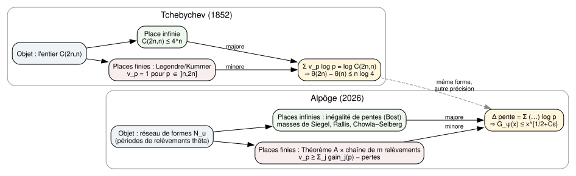
| Tchebychev | Alpöge | Où (partie II) |
|---|---|---|
| Un entier \(\binom{2n}{n}\) | Un réseau \(N_u\) de formes automorphes : beaucoup d’entiers à la fois, ses périodes | divClausesR_of, DivIntoDualShift |
| \(v_p\) par Legendre | \(v_p\ge\sum_{j=1}^m\mathrm{gain}_j(p)-\text{pertes}\) : Théorème A, itéré le long de la chaîne | gainP, LinkG_at,
thmAGauss |
| \(\binom{2n}{n}\le4^n\) | Inégalité de pentes, avec des volumes exacts | § 5.4 ; covolume : topCovolSlim2_use_alt_alt |
| \(\log M=\sum v_p\log p\) | Une différence de pentes est une somme de \(\log p\) | mu_diff |
| Profil en dent de scie, perte \(O(x)\) | Profil aligné sur le poids de Riesz, perte \(O(\sqrt x)\) | gB, gam p = p/(p^2−1) |
Pourquoi un réseau, et pas un seul entier ? Un entier fournit une inégalité. Un réseau de rang \(r\) en fournit \(r\), moyennées par la pente, et permet de diviser par un idéal tout en restant entier (§ 5.4) ⟦I⟧. Le rang \(k\ge x^{3/2-\varepsilon}\) (§ 6.2) mesure la quantité d’information qu’il faut accumuler pour gagner le facteur \(\sqrt x\).
Ce que dit le graphe. Sur l’export, tout ce
paragraphe, c’est-à-dire la formule du produit, la division des réseaux
et le calcul des pentes, pèse environ 0,1 % du volume
de la fermeture (poids dominé, en lignes de l’export ; partie II). Le
principe est peu coûteux. Ce qui coûte, ce sont les trois exigences du §
2.4. La non-nullité passe par la quasi-orthogonalité (théorème S, 1,4 %)
et par la fabrication des familles (36 %). La taille calculable sans les
premiers passe par le covolume (7 %). Le profil juste passe par les
gains (LinkG, qu’alimente Behrend) et par la division
(LinkN, qu’alimentent Galois, 6 %, et Ш, 8 %). Le graphe
des interfaces (partie II) soutient les liens entre le
théorème S et la non-nullité, et entre les gains et Behrend. Il
précise le rôle de Ш, et il ne tranche pas pour le
covolume.
Réponse à la question 1. Un entier non nul ne peut pas être à la fois très divisible et petit : \(\sum_pv_p(M)\log p=\log|M|\). Si l’on connaît sa taille sans connaître les premiers, et si son profil de divisibilité suit le poids voulu, on majore la somme de premiers. Tchebychev le fait avec \(\binom{2n}{n}\), à \(O(x)\) près, parce que le profil est une dent de scie. La preuve le fait à \(x^{1/2+O(\varepsilon)}\) près sur des fenêtres, parce que son profil est aligné, mais aussi parce que l’objet est non dégénéré et que son budget archimédien est exact : l’alignement seul ne suffit pas. Les questions 2 et 3 expliquent d’où vient ce profil.
Le § 2 a fixé le cahier des charges. Il faut un objet non nul, de taille calculable, dont le profil de divisibilité \(m\mapsto v(m)\) suive le poids de Riesz \((y/m-1)_+\). Le premier candidat, \(y!\), a presque ce profil : \(\lfloor y/m\rfloor\). Mais il est rigide. On ne peut ni le multiplier en familles, ni le faire vivre sur un réseau, ni l’itérer. Il faut une source de factorielles à l’intérieur d’un objet géométrique. Il y en a une, la dérivation : \[D^af(0)=a!\cdot\mathrm{coeff}_a(f).\] Si \(f\) est à coefficients entiers, sa dérivée \(a\)-ième est divisible par \(a!\). On obtient Legendre gratuitement : \(v_p\ge a/(p-1)\), à \(O(\log a)\) près. Il reste une question, qui décide de tout : dans quelle coordonnée dérive-t-on ?
La factorielle est déjà dans la dérivée. Si \(f(X)=\sum_{n\ge0}c_nX^n\) est une série à coefficients dans \(\mathbb Z_p\), alors \(D^af(0)=a!c_a\) est divisible au moins autant que \(a!\). Il semblerait donc que la divisibilité voulue soit gratuite. Pourquoi a-t-on besoin de courbes elliptiques ? Parce que la coordonnée dans laquelle \(f\) est entière n’est pas forcément celle dans laquelle on doit la dériver.
Prenons une situation familière. La multiplication de deux nombres voisins de 1 s’écrit, après avoir retranché 1,
\[F(X,Y)=X+Y+XY.\]
Cette loi de groupe, écrite sous forme de série entière au voisinage de son neutre, est un groupe formel. Elle respecte l’associativité, l’élément neutre et l’inverse, non seulement pour les nombres mais comme identité entre séries. Le logarithme formel \(\log_F(X)=\log(1+X)\) transforme cette loi en addition :
\[\log_F(F(X,Y))=\log_F(X)+\log_F(Y).\]
La coordonnée additive \(z=\log_F(X)\) permet de dériver suivant une direction naturelle, et l’inverse s’écrit \(X=\exp_F(z)=e^z-1\). Mais les coefficients \(1/a!\) introduisent exactement les dénominateurs que l’on espérait gagner ! Pour \(f(X)=X\), on a \(D^a f(\exp_F(z))|_{z=0}=1\) pour tout \(a\ge1\). Aucun facteur \(p\) n’a survécu. Même une fonction parfaitement entière en \(X\) peut donc n’apporter aucune divisibilité après linéarisation.
Les courbes elliptiques possèdent aussi une loi de groupe. Au voisinage du point à l’infini, on peut choisir un paramètre local (par exemple \(t=-x/y\) pour une équation de Weierstrass) et exprimer l’addition par une série \(F(X,Y)\). La série \([p]_F(X)\), obtenue en additionnant \(X\) à lui-même \(p\) fois, commence modulo \(p\) en degré \(p^h\) pour une certaine hauteur \(h\). À bonne réduction, une courbe elliptique est ordinaire si \(h=1\) et supersingulière si \(h=2\).
Dans le modèle particulier de hauteur 2 étudié ici, on peut travailler avec un logarithme \(p\)-typique de la forme
\[\log_F(X)=\sum_{e\ge0}\frac{(-1)^eX^{p^{2e}}}{p^e}.\]
Le terme de degré \(p^{2e}\) a un dénominateur de valuation \(e\), et non \(2e\). Le logarithme de hauteur 2 est beaucoup plus lacunaire que le logarithme multiplicatif. L’idée est que le coût de la linéarisation peut alors être inférieur au gain de la factorielle. Ce n’est pas une propriété automatique de toute série de hauteur 2 : la coordonnée choisie, l’intégralité et la renormalisation interviennent dans le résultat réel.
| Groupe formel | Logarithme modèle | Ce que l’exemple \(f(X)=X\) montre |
|---|---|---|
| Additif | \(X\) | \(D^aX=0\) pour \(a>1\) ; pour une série entière générale, le gain de Legendre est garanti |
| Multiplicatif, hauteur 1 | \(\log(1+X)\) | \(D^a(e^z-1)|_{z=0}=1\) pour \(a\ge1\) |
| Modèle de hauteur 2 | \(\sum_e(-1)^e X^{p^{2e}}/p^e\) | Si le coût par degré est borné par \(1/(p^2-1)\), il reste au moins \(ap/(p^2-1)-O(\log a)\) |
Reste un problème : comment assurer le cas favorable pour un grand ensemble de premiers ? Une courbe à multiplication complexe par un corps quadratique imaginaire \(K\) est supersingulière aux premiers de bonne réduction inertes dans \(K\). La multiplication complexe fournit ainsi une sélection arithmétique de premiers, décrite par un caractère quadratique. Il est temps d’en voir un exemple entièrement calculable.
La courbe \(y^2=x^3-x\) a multiplication complexe par \(\mathbb Z[i]\), via \((x,y)\mapsto(-x,iy)\). Les premiers inertes dans \(\mathbb Q(i)\) sont les \(p\equiv3\pmod4\). On peut voir directement pourquoi ils sont supersinguliers.
Pour \(p\) impair, la réduction est bonne. Si \(\chi_p\) désigne le symbole de Legendre (avec \(\chi_p(0)=0\)), le nombre de solutions en \(y\) de \(y^2=x^3-x\) est \(1+\chi_p(x^3-x)\). D’où
\[\#E(\mathbb F_p)=p+1+\sum_{x\in\mathbb F_p}\chi_p(x^3-x).\]
Lorsque \(p\equiv3\pmod4\), \(\chi_p(-1)=-1\) et \((-x)^3-(-x)=-(x^3-x)\). Les contributions de \(x\) et de \(-x\) se compensent exactement. Il ne reste que \(p+1\). Nous venons de démontrer, sur cet exemple, la conséquence de la multiplication complexe que l’on utilise ensuite. Pour \(p\equiv1\pmod4\), la même involution ne fait plus disparaître la somme.
Le comptage confirme :
| \(p\) | 3 | 5 | 7 | 11 | 13 | 17 | 19 | 23 | 29 |
|---|---|---|---|---|---|---|---|---|---|
| \(p \bmod 4\) | 3 | 1 | 3 | 3 | 1 | 1 | 3 | 3 | 1 |
| \(\#E(\mathbb F_p)\) | 4 | 8 | 8 | 12 | 8 | 16 | 20 | 24 | 40 |
| \(a_p=p+1-\#E\) | 0 | −2 | 0 | 0 | 6 | 2 | 0 | 0 | −10 |
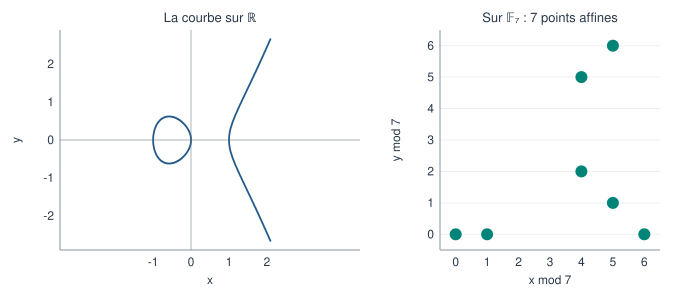
Pour \(p\) inerte, \(a_p=0\) : le Frobenius vérifie \(F^2-a_pF+p=0\), donc \(F^2=-p\). Deux applications du Frobenius coûtent un facteur \(p\). C’est toute la supersingularité. Sur les coefficients \(a_n\) de la fonction L de la courbe, la récurrence \(a_{p^{k+1}}=a_pa_{p^k}-p\,a_{p^{k-1}}\) donne alors \(a_{p^{2e}}=(-p)^e\) et \(a_{p^{2e+1}}=0\). Un théorème de Honda (1968 [Ho] ; voir aussi [Haz]) dit que le groupe formel de \(E\) est strictement isomorphe sur ℤ à celui dont le logarithme est \(\sum_na_n\,t^n/n\) : le calcul qui suit porte donc bien sur la courbe elle-même. Le coefficient de \(t^{p^{2e}}\) vaut donc \((-p)^e/p^{2e}=(-1)^e/p^e\) : c’est la hauteur 2. Pour \(p\) décomposé, \(a_p\) est inversible modulo \(p\), \(a_{p^e}\) est une unité \(p\)-adique, le coefficient de \(t^{p^e}\) est en \(1/p^e\), et l’on retombe sur la hauteur 1.
On inverse ce logarithme, avec des fractions exactes, et l’on calcule
les valuations des dérivées de \(\exp_E\) en 0 (tools/modeles.py) :
| \(a\) | 9 | 25 | 49 | 81 | 121 | 161 |
|---|---|---|---|---|---|---|
| \(v_3(a!)\) (Legendre) | 4 | 10 | 22 | 40 | 58 | 76 |
| \(v_3(D^a\exp_E(0))\), \(p=3\) inerte | 3 | 9 | 18 | 30 | 45 | 61 |
| \(a\cdot3/8\) | 3,4 | 9,4 | 18,4 | 30,4 | 45,4 | 60,4 |
| \(v_5(D^a\exp_E(0))\), \(p=5\) décomposé | 0 | 0 | 0 | 0 | 0 | 0 |
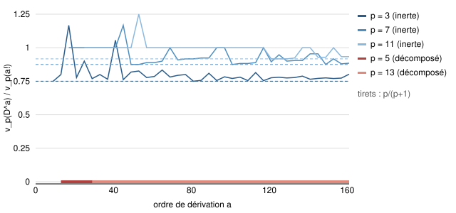
Le contraste est total. Pour un premier inerte, la minoration garantit asymptotiquement la fraction \(\frac{p/(p^2-1)}{1/(p-1)}=\frac p{p+1}\) du gain de Legendre (3/4 pour \(p=3\), 7/8 pour \(p=7\)), à une perte \(O(\log a)\) près ; les valeurs calculées peuvent la dépasser ponctuellement. Pour les premiers décomposés 5 et 13, la valuation observée est nulle pour tous les ordres impairs calculés, \(a\le161\) (les coefficients d’ordre pair de l’exponentielle formelle sont nuls, puisque le logarithme est impair, et leur valuation vaut \(+\infty\)) : en réduction ordinaire, le calcul des dénominateurs ne garantit aucun gain, et ici il n’y en a aucun.
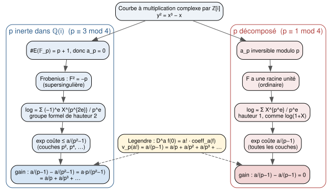
Ce qui est soustrait dans le modèle des taux. Legendre compte les multiples de \(p\), puis de \(p^2\), de \(p^3\), etc. : \[\frac a{p-1}=\frac ap+\frac a{p^2}+\frac a{p^3}+\cdots\] Le majorant du coût de hauteur 2 vaut \(\frac a{p^2-1}=\frac a{p^2}+\frac a{p^4}+\cdots\) : ce sont les couches paires. Il reste les couches impaires : \[v_p\big(D^a\exp_F(0)\big)\gtrsim\frac ap+\frac a{p^3}+\frac a{p^5}+\cdots=a\,\frac{p}{p^2-1}.\]
On lit ce gain sur les puissances de premiers \(m=p^e\), comme pour le poids de Riesz du § 1.2. L’objet gagne \(a/m\) en \(m=p^e\) si \(p\) est inerte et \(e\) impair, et rien sinon. Or, pour un caractère quadratique \(\chi_{-d}\) attaché au corps CM \(K=\mathbb Q(\sqrt{-d})\) et pour \(p\nmid d\), \[\frac{1-\chi_{-d}(p^e)}2=\begin{cases}1&\text{si }p\text{ est inerte et }e\text{ impair},\\0&\text{sinon.}\end{cases}\] C’est exactement la même condition. Le profil fourni par la multiplication complexe est donc \[m\;\longmapsto\;\frac am\cdot\frac{1-\chi_{-d}(m)}2 ,\] c’est-à-dire le profil de Legendre, celui de \(y!\) au § 2.3, restreint par un caractère quadratique. Avec \(a\leftrightarrow y\), ce que l’objet permet de majorer est \[\sum_m\Lambda(m)\Big(\frac ym-1\Big)_+\frac{1-\chi_{-d}(m)}2=\tfrac12\,S(y,1)-\tfrac12\,S(y,\chi_{-d}).\] La multiplication complexe donne le bon profil, sur la moitié des premiers, et cette moitié est découpée par un caractère.
Le premier ramifié. Comme \(d\) est premier, le seul premier où \(\chi_{-d}\) s’annule est \(p=d\) : là, \(\frac{1-\chi_{-d}(d^e)}2=\frac12\), ni 0 ni
1. Le membre de gauche contient donc aussi la demi-contribution \(\frac12\log d\sum_{e\ge1}(y/d^e-1)_+\le\frac{y\log
d}{2(d-1)}\), qui n’est pas un comptage d’inertie. L’identité de
droite reste exacte sur tous les entiers ; seule son interprétation
demande d’exclure \(p=d\). Dans la
preuve, ce terme disparaît : le lemme
ramifiedPrimeTerm_eq_zero_of_lt_ramifiedPrime montre que la
part de \(d\) dans ASK est
nulle dès que toutes les échelles restent sous \(d\) (\(a/w\le
N<d\)), et askExp l’utilise. Les autres premiers
exceptionnels (2, \(q\) et les facteurs
de \(Q_S\), § 3.4) sont décomposés dans
\(\mathbb Q(\sqrt{-d})\) : le facteur y
vaut 0, et ils ne comptent pas.
Reprenons \(x=81\) et choisissons, uniquement pour illustrer le mécanisme, \(b=3\), \(a=bx=243\). La courbe précédente est supersingulière en 3. Le gain brut de type hauteur 2 est porté par les puissances impaires. Si nous pouvions fixer le seuil à \(b\), il nous resterait :
| \(p^e\) | \(a/p^e\) | \((a/p^e-b)_+\) | Gain retenu (e impair) |
|---|---|---|---|
| 3 | 81 | 78 | 78 |
| 9 | 27 | 24 | 0 |
| 27 | 9 | 6 | 6 |
| 81 | 3 | 0 | 0 |
| 243 | 1 | 0 | 0 |
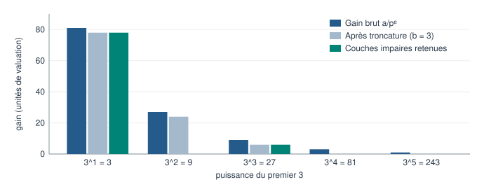
Le total vaut \(84\), soit exactement \(3(26+2)\). Divisé par \(b\), c’est la partie impaire de la contribution de 3 à la somme de Riesz du prologue. Les autres puissances ne sont pas vues par cette courbe ; le caractère quadratique encode cette sélection. Ce n’est pas encore une valuation effectivement obtenue par un opérateur de la preuve : nous n’avons pas démontré que le seuil voulu puisse être réalisé. Nous avons seulement identifié l’expression que doit produire la construction locale.
L’intérêt de la multiplication complexe devient alors plus concret. Elle fournit une règle de sélection uniforme en \(p\), et ses gains sont de la forme \(a/p^e\) dont nous avons besoin. Le défaut — seuls certains premiers et certaines puissances apparaissent — a lui-même une structure de caractère. On peut donc espérer le traiter par l’orthogonalité et par une moyenne sur les corps, plutôt que de corriger chaque premier individuellement.
Nous savons maintenant ce qui manque : le profil sélectionné par \(K\) contient la moitié de la somme non tordue et une moitié tordue. Pour le caractère non trivial \(\chi_{-d}\), la somme brute \(S(y,\chi_{-d})\) comporte en général un terme linéaire, \(-yL'(1,\chi_{-d})/L(1,\chi_{-d})\). C’est le reste centré \(g(y,\chi_{-d})\) qu’il faut maîtriser à l’échelle voulue, conjointement avec les termes principaux et les places ramifiées.
Avec un corps fixé, par exemple \(\mathbb Q(i)\), ce contrôle reviendrait à une autre difficulté de type GRH. Il serait circulaire de le postuler. Mais nous n’avons pas besoin du même corps pour toutes les échelles, grâce au critère en fenêtres du § 1.5.
Pour comprendre le changement de perspective, imaginons des signes indépendants \(\epsilon_p\in\{\pm1\}\) et une somme \(\sum_{p\le y}c_p\epsilon_p\). Sa moyenne est nulle et sa variance vaut \(\sum_pc_p^2\). Une estimation de second moment donne donc beaucoup de choix pour lesquels la somme est petite relativement à sa borne triviale. Dans le problème réel, les caractères quadratiques ne sont pas des signes indépendants, et la moyenne doit contrôler des familles de sommes lissées, des termes principaux et une plage entière d’échelles. Le grand crible remplace l’indépendance fictive par des estimations effectives. Le modèle ne prouve aucune de ces estimations ; il explique pourquoi l’on fait varier \(d\) plutôt que d’affronter un caractère fixé.
Sur l’export, la preuve dispose de familles gigantesques devant les
échelles et d’un choix inconditionnel des paramètres sur une plage \([Y,Y^A]\). Lus sur l’export,
QH.pair_share et QH.bad_share disent
précisément ceci : pour tout \(\eta>0\), une proportion au moins \(1-\eta\) des premiers \(q\equiv3\pmod8\) de \(]e^{z/2},e^z]\), \(z=Y^{\varepsilon/5}\), puis des premiers
\(d\equiv7\pmod{16}\) de \(]e^{z'/2},e^{z'}]\), \(z'\asymp z\log^2Y\), avec \(q\prod_{3\le p\le z}p\mid d+1\)
(primeSetTwoBounds ; cette divisibilité force \(\left(\frac{-d}p\right)=1\) pour tout
premier impair \(p\le z\) et \(\left(\frac{-d}q\right)=1\) : c’est là que
naissent les conditions de l’hôte), sont bons
(GoodQ, GoodD) au sens de trois conditions
(Box) : pour chaque caractère primitif ψ issu des torsions
par \(\left(\frac\cdot q\right)\) et
\(\left(\frac\cdot d\right)\), pas de
zéro dans le rectangle \(\operatorname{Re}s>1-\frac1{400}\),
\(|\operatorname{Im}s|\le Q\), \(|L'/L(1,\psi)|\le C\log Y\), et \(|G_\psi(y)|\le y^{1/2+\tau}\) pour
tout \(y\) de la
fenêtre \([Y,X]\), \(X\le Y^K\). C’est une borne uniforme sur
toute la fenêtre, pour la somme centrée \(G_\psi\), non pour la somme brute. Elle
vient d’une moyenne quadratique de type grand crible
(QH.meanSqK), d’une estimation de densité de zéros
(QH.count_bad) et du théorème de Siegel
(excBound : \(\beta\le1-c\,q^{-\varepsilon}\) pour un
caractère réel non trivial), dont la constante est classiquement
ineffective. L’ensemble est léger : la fermeture de
pair_share compte 75 645 déclarations, dont 1 200 en
propre.
L’hôte réel. La preuve fait la même chose avec plus de structure. Elle doit aussi voir les \(\chi_j\) de \(K_\psi\) (§ 1.1) et garder des coefficients positifs (§ 1.3). À l’échelle \(x\), elle choisit deux premiers \(q\equiv3\pmod8\) et \(d\equiv7\pmod{16}\), puis un corps CM abélien \[E\subset\mathbb Q(\zeta_{Q_Sqd}),\qquad\sqrt{-q},\sqrt{-d}\in E,\qquad[E:\mathbb Q]\approx x^{2+8\varepsilon},\] qui contient le corps découpé par ψ. Sur l’export, \(|A|=c\cdot2^e\) avec \(x^{2+8\varepsilon}\le c\cdot2^e\le2x^{2+8\varepsilon}\), et \([E:\mathbb Q]=4|A|\). Les premiers inertes dans \(\mathbb Q(\sqrt{-d})\) y sont pondérés selon leur classe de Frobenius. Par orthogonalité, on retrouve exactement \(G_\psi(x)\), avec le poids \(1/(3o+1)\) du § 1.3, plus des parasites, qui sont des torsions par \((q/\cdot)\), \((d/\cdot)\) et leur produit, neutralisés par le choix en moyenne de \((q,d)\). C’est le même corps \(E\) qui porte la borne de Tate–Shafarevich du § 7 (a).
Les conditions exactes, lues sur l’export.
HostHyp : \(q\) et \(d\) premiers, \(q\equiv3\pmod8\), \(d\equiv7\pmod{16}\) et \(\left(\frac{-d}q\right)=1\).Top.pairHyp)
: tout premier impair \(p\le
Y^{\varepsilon/5}\) est décomposé dans \(\mathbb Q(\sqrt{-d})\). S’y ajoutent les
identités de réciprocité \(\left(\frac{-q}a\right)=\left(\frac
aq\right)\) et \(\left(\frac{-d}a\right)=\left(\frac
ad\right)\) pour \(a\) impair,
qui reflètent \(q,d\equiv3\pmod4\).D5.InPhi). Un premier est inerte
(IsInert) s’il diffère de 2, \(q\) et \(d\), et si son Frobenius sort de Φ.HostFactsS). Ils portent sur un ensemble
exceptionnel fini \(S\), qui
contient 2 et \(q\) mais pas \(d\). Hors de \(S\cup\{d\}\), tout est non ramifié ; \(d\) est ramifié avec une inertie d’ordre 2
; pour \(p\in S\), l’inertie et le
Frobenius restent dans Φ, et ces premiers ne sont jamais comptés comme
inertes. La construction (HostRaw.mk,
hostFactsS) prend \(S\)
égal à l’ensemble des premiers divisant \(Q_Sq\), où le module \(Q_S\) est premier à \(qd\), divisible par \(2^{e+2}\), et n’a que des facteurs impairs
\(\ell\) avec \(\left(\frac{-d}\ell\right)=1\). Pour les
premiers du conducteur de ψ (par exemple 5 pour \(\psi=(\frac\cdot5)\)), deux raisons
distinctes jouent : ils sont ramifiés dans le corps découpé par ψ, que
\(E\) contient, donc dans \(E\) ; et, comme facteurs de \(Q_S\), ils sont décomposés dans \(\mathbb Q(\sqrt{-d})\) par hypothèse de
construction, donc absents des sommes. Le sous-groupe Φ est exactement
\(\mathrm{Gal}(E/\mathbb
Q(\sqrt{-d}))\) (toE en fait la coordonnée testée
par InPhi). La version 3.2 écrivait « hors de \(\{2,q\}\) et de \(d\), tout est non ramifié » : c’était une
transcription erronée.askExp).
ASK se développe par orthogonalité en sommes \(\sum_n\Lambda(n)\psi(n)\,(a/n-w)_+\) : la
troncature de Riesz est écrite dans la définition même.Lecture ⟦I⟧.
Le rôle précis de \(q\equiv3\pmod8\)
et du raffinement modulo 16 reste ouvert. Ces conditions sont consommées
par la construction de l’hôte (hostOfFieldOf), par la borne
de Ш (vwinAt_of_joint) et par le traitement des parasites
(CharacterBoxes).
Le calcul du § 3.2 se fait sur une courbe elliptique. La preuve fait le même calcul pour une série thêta de réseau hermitien, en un point CM d’une variété de Shimura unitaire, en coordonnées de groupe formel :
Théorème A (forme simplifiée). Soit \(\Theta\) une série thêta, renormalisée par une exponentielle convenable, en coordonnées de groupe formel au point CM. Pour \(p\) inerte, \[v_p\big(D^{a}\Theta(0)\big)\;\ge\;a\cdot\frac{p}{p^2-1}\;-\;O(\log a)=a\Big(\frac1p+\frac1{p^3}+\cdots\Big)-O(\log a).\]
C’est la phrase de la note : « \(D^a\,\Omega\cdot\theta(0)\) is divisible by \(p^{a/p+a/p^3+\cdots-O(\log a)}\) ». Le § 3.1 explique une observation de Rubinstein [R2]. Sur la série thêta naïve de ℤ[i], dérivée dans la coordonnée analytique, il ne retrouve pas cet exposant (il trouve 6, 2 et 1 pour \(p=3\), 7, 11). Le gain n’existe que pour l’objet renormalisé, en coordonnée de groupe formel : c’est le changement de coordonnée qui décide de ce qui reste de \(a!\).
La preuve du Théorème A pèse environ 0,02 % du volume. Elle se fait en trois temps.
Les hypothèses exactes du Théorème A. La hauteur 2
ne suffit pas à elle seule. L’énoncé exact (ThmAGauss)
suppose \(p\ge3\), une extension non
ramifiée de degré pair (noté \(d\) dans
l’énoncé, sans rapport avec le premier \(d\) de l’hôte), des coordonnées de groupe
formel données par l’inverse \(g\) du
logarithme formel (\(g\circ\log=X\)),
une série \(U\) entière dans ces
coordonnées, une exponentielle de renormalisation dont les coefficients
vérifient une condition de type Dwork (BHyp), et des
repères de taille au plus \(a\) avec
\(2\log_pa+2\le N_0-1\). La perte est
explicite : \(dN_0N_1(\log_pa+1)\).
Les exposants impairs et les ensembles sans relation
courte. Dans un corps CM de grand degré, le Frobenius d’un
premier inerte agit sur les plongements par décalage, et le gain \(a/p^e\) se lit en la place \(t+e\cdot h_p\) de son
orbite. On ne l’obtient que si le poids à cette place
n’est pas trop grand. Les positions des places « épaisses », à grand
poids, doivent donc éviter de trop se rapprocher le long des orbites.
L’export (NoRel T L) exige, pour \(s_1,s_2,s_3\in T\) distincts et des entiers
\(i\ne j\) non nuls de valeur absolue
au plus \(L\), que \(j(s_2-s_1)\ne i(s_3-s_1)\). C’est plus fort
que l’absence de progression arithmétique à trois termes (\(i=1\), \(j=2\)), qui ne borne pas le nombre de
points par segment : \(\{0,1,3\}\) est
sans progression à trois termes et a trois points dans \([0,3]\), mais ne vérifie pas
NoRel dès \(L\ge3\),
puisque \(3\cdot(1-0)=1\cdot(3-0)\). Un
tel ensemble, de densité de type Behrend, est obtenu par la construction
de Behrend (hostThickExists). Ce qu’il
sert à préserver, et par quel canal, est exposé au § 7 (« Préserver les
gains »).
Deux lemmes élémentaires, avec statut de modèle. Ils
ne reconstruisent pas LinkG_at, mais ils isolent deux
mécanismes que cette interface combine.
Lemme d’orbite. Dans un groupe abélien \(G\), si \(T\) vérifie la condition
NoRel T L ci-dessus, alors tout segment d’orbite \(\{s+rg:0\le r\le L\}\) contient au plus
deux points distincts de \(T\). En effet, si \(s+r_1g\), \(s+r_2g\), \(s+r_3g\) sont trois points distincts de
\(T\), posons \(i=r_2-r_1\) et \(j=r_3-r_1\) : ce sont des entiers
distincts, non nuls, de valeur absolue au plus \(L\), et \(j(s_2-s_1)=jig=i(s_3-s_1)\), ce qui est
exclu. Aucune division n’intervient, même en présence de torsion. Dans
l’export, NoRel porte sur un Finset ℕ et des
relations dans ℤ : le lemme s’applique avec \(G=\mathbb Z\), et il ne dit rien, sans
argument supplémentaire, des relations modulo la longueur de l’orbite ni
des visites répétées d’un même point. Le traitement effectif distingue
orbites longues et courtes (§ 7).
Lemme des profils tronqués. Pour une famille finie de gains
\(g_i\ge0\), posons \(F_g(b)=\sum_i(g_i-b)_+\) et \(N_g(t)=\#\{i:g_i>t\}\). Alors \(F_g(b)=\int_b^\infty N_g(t)\,dt\), puisque
\((g_i-b)_+=\int_b^\infty\mathbf
1_{t<g_i}\,dt\) ; \(F_g\) est
convexe et décroissante, de dérivée à droite \(-N_g(b)\). Si les gains sont rangés par
ordre décroissant, \[F_g(b)=\max_{0\le k\le
r}\Big(\sum_{i\le k}g_i-kb\Big),\qquad\sum_{i\le
k}g_i=\min_{b\ge0}\big(F_g(b)+kb\big),\] le maximum étant atteint
en gardant les gains qui dépassent \(b\), et le minimum pour \(b\) entre \(g_{k+1}\) et \(g_k\). Dominer un profil tronqué pour
tous les seuils équivaut donc à dominer
toutes les sommes partielles supérieures, et non le
seul total : \((8,2)\) et \((5,5)\) ont le même total, mais \(F(4)\) vaut 4 pour l’un et 2 pour l’autre.
C’est exactement la forme du gain exigé par LinkG_at (§
3.3, atelier 2), \(\sum_{e\text{
impair}}(a/p^e-b)_+\), avec \(g=(a/p^e)_{e\text{ impair}}\). Le Théorème
A minore un total, \(a\,p/(p^2-1)\) ;
LinkG_at demande un profil tronqué. La lecture de
LinkG_at comme certificat de domination de profils, après
pertes, est une hypothèse de travail ⟦I⟧, que seule une famille
effective de gains, lue dans la construction, pourrait confirmer. Une
identité élémentaire précise l’écart : pour des seuils \(w_e\ge0\), \[\sum_{e\ \text{impair}}\Big(\frac
a{p^e}-w_e\Big)_+=a\,\frac p{p^2-1}-\sum_{e\
\text{impair}}\min\Big(\frac a{p^e},w_e\Big),\] puisque \((x-w)_+=x-\min(x,w)\) : le profil tronqué
est le gain brut du Théorème A diminué d’un coût de
troncature. Sur l’export, les seuils (cap) sont
définis par blocs de segments, et les gains de LinkG
proviennent d’un « premier » et d’un « second » théorème de famille, le
second étant une borne de valuation le long des orbites, tous deux tirés
d’un même paquet de résultats locaux (modèle local, platitude,
projecteurs extrémaux ; article, § 5.5). Comment ces résultats réalisent
le coût de troncature voulu reste à lire.
La chaîne des gains, lue sur l’export. Le gain exigé
par LinkG_at combine cinq éléments, que l’on lit
séparément.
Admissibilité. Le premier ingrédient est le Théorème A de la
route d’origine, noté ici \(A_{\rm
orig}\) pour le distinguer des Théorèmes A, B, C de la réécriture
de Sernau. Sous la forme d’une borne uniforme (sa conclusion avec une
perte de constante 1, SplitConstantsUniformBound 11 1), il
rend admissibles les lignes « servies » de la
construction. Il n’est pas dans la fermeture des deux théorèmes de
famille qui concluent LPprime : la divisibilité qu’il
fournit et sa propagation aux réseaux sont démontrées séparément.
Le flot. Le coût de troncature a, sur l’export, la forme
exacte d’un programme de flot sur l’orbite de
Frobenius. Sur une orbite de longueur \(d\), avec des capacités \(D_s\ge0\) aux positions \(s\in\mathbb Z/d\) et un premier \(l\), avec \(d\ge2\), un flot attribue des quantités
\(x_{s,i}\ge0\) aux couches
impaires \(i<d\).
Une couche lancée en \(s\) pèse \(l^i\) en \(s\) et \(1\) en \(s+i\), d’où les contraintes \(\sum_il^ix_{s,i}+\sum_ix_{s-i,i}\le D_s\).
Le corollaire du Théorème A minore la valuation par le gain brut \(\frac l{l^2-1}\sum_sD_s\) diminué du flot
maximal \(F^*\) (lpF). En
sommant les contraintes, \(\sum_{s,i}(l^i+1)x_{s,i}\le\sum_sD_s\),
d’où \(F^*\le\frac{\sum_sD_s}{l+1}\),
puisque \(l^i+1\ge l+1\) ; le
certificat dual est la constante \(y_s=\frac1{l+1}\). Il y a égalité
si et seulement si la solution unique du système cyclique \(l\,x_s+x_{s-1}=D_s\) est non négative, car
l’égalité force la saturation de toutes les contraintes et l’annulation
des couches \(i\ge3\). Cette solution
vaut \[x_s=\frac{\sum_{k=0}^{d-1}(-1)^kl^{d-1-k}D_{s-k}}{l^d-(-1)^d}.\]
La condition locale \(D_{s-1}\le
l\,D_s\) pour tout \(s\) suffit,
en groupant les termes deux par deux. Elle n’est pas nécessaire : pour
\(l=3\) et \(D=(3,1,0,0)\), la solution \(x=(1,0,0,0)\) est non négative sans que
l’équilibre ait lieu. Le lemme lu sur l’export (LemmaFe)
suppose \(d\) pair et \(D_{a'}\le l\,D_a\) pour tous \(a,a'\), ce qui est un cas particulier.
Dans le cas saturé, le gain restant vaut \(\frac
l{l^2-1}\sum_sD_s-\frac{\sum_sD_s}{l+1}=\frac{\sum_sD_s}{l^2-1}\).
Si la solution cyclique a une composante négative, la borne n’est pas
atteinte, et il faut résoudre le programme général. Le théorème nommé
linear_programming_input_of_hypotheses n’utilise pas ce
programme : il empaquette les deux théorèmes de famille (E8). Les deux «
programmations linéaires » ne doivent pas être confondues, et le lien
entre les capacités \(D_s\), les seuils
cap et les gains effectifs reste à établir.
Le rang à précision. Le second ingrédient est une propriété
de rang \(p\)-adique,
LPprime, que concluent les deux théorèmes de famille. Pour
tout réseau \(L\) de \(\mathbb Q_q^{m+1}\), avec \(\mathbb Q_q\) non ramifiée sur \(\mathbb Q_p\), il existe des arêtes de
Hecke en \(p\) aboutissant à \(L\) et des fonctionnelles attachées à leurs
sources, séparées modulo une puissance de l’uniformisante, dont
l’accouplement avec l’espace cible est de rang au moins \((1-\kappa)\dim\) à la précision \(p^D\). Cette propriété est exigée sous une
condition de pavage des orbites de Frobenius. Le « rang à la précision
\(p^D\) » a un sens exact.
GoodRankK demande une application \(O\)-linéaire \(u:O^n\to A\) et une matrice \(M\) à coefficients dans \(O\) telles que \(M\,\Phi(u(x))=p^Dx\) pour tout \(x\in O^n\), où \(\Phi\) rassemble les fonctionnelles. Pour
la matrice entière \(B=\Phi\circ u\),
cela équivaut à : \(B\) est injective et ses \(n\) facteurs invariants vérifient \(s_i\le D\). En effet, si \(B=U\,\big[\mathrm{diag}(p^{s_i});0\big]\,V\)
(forme de Smith), \(M=V^{-1}\big[\mathrm{diag}(p^{D-s_i})\mid0\big]U^{-1}\)
convient quand tous les \(s_i\le D\).
Réciproquement, \(MB=p^DI_n\) force
l’injectivité, et la colonne \(i\) de
\(MU\), restreinte aux \(n\) premières composantes, vaut \(p^{D-s_i}\) fois la colonne \(i\) de \(V^{-1}\), qui a un coefficient inversible :
d’où \(D-s_i\ge0\). Comme la longueur
de l’image de \(B\) modulo \(p^{D'}\) est \(\sum_i(D'-s_i)_+\), on en tire \(\operatorname{len}\ge n(D'-D)\) pour
\(D'\ge D\) : le rang à précision
est une borne inférieure sur une longueur tronquée, de la même forme que
les profils ci-dessus. C’est une caractérisation de la restriction \(B=\Phi\circ u\), non du rang de \(\Phi\) en général ; et que l’accouplement
réel soit entier n’a pas été vérifié.
L’assemblage des arêtes. La preuve de LPprime a
deux étages, et le premier est élémentaire et reconstruit. Tout réseau
de rang \(k\) reçoit au moins \(\frac{q^k-1}{q-1}\) arêtes de Hecke de type
1, avec \(q=p^{n'}\) : c’est le
nombre d’hyperplans de \(\mathbb
F_q^k\). Si chaque arête fournit, à la précision \(p^D\), un rang au moins égal à \((1-\kappa)\dim V\) divisé par ce nombre,
les rangs s’additionnent. Le lemme qui le permet tient en deux lignes.
Soit \(R\) un anneau de valuation
discrète d’uniformisante \(\pi\). Si
les blocs diagonaux vérifient \(M_jB_j=\pi^DI_{r_j}\) et si les blocs
croisés de \(MB\), pour \(M=\operatorname{diag}(M_j)\), sont dans
\(\pi^{D+1}R\), alors \(MB=\pi^D(I+\pi C)\) avec \(C\) entière. Comme \(I+\pi C\) est inversible sur \(R\), \(M'=(I+\pi C)^{-1}M\) vérifie \(M'B=\pi^DI\). C’est la matrice
normalisée qui est inversible, non nécessairement la
matrice brute. Sur l’export, la séparation se fait modulo \(w^{c^*}\) avec \(c^*>8D\)
(isUnit_det_of_one_add, goodRank_core) ; les
unités relatives de \(w\), \(p\), \(D\)
et \(c^*\) sont à vérifier.
Le comptage des poids. Le second étage, le rang par arête,
est obtenu par une récurrence sur le plus haut poids \(\lambda\) d’un module de Weyl de \(\mathrm{GL}_{m+1}\). Elle part des poids «
plats » \((A,0,\dots,0,-B)\), avec une
perte de précision explicite et logarithmique en \(a\) à chaque pas, et compare les dimensions
par la formule de dimension de Weyl. Les poids de base portent, aux
positions retenues, des coefficients \(a_s\) en tête et \(-b_s\) en queue, qui rappellent la paire
\((a,b)\) de la troncature de Riesz
⟦I⟧. Lu sur l’export, le cœur de cette récurrence est un énoncé
classique de théorie des représentations. Le module de Weyl dual est
réalisé comme espace de polynômes en les coefficients d’une matrice,
homogènes d’un poids donné et invariants par addition de colonnes
(dualWeyl). Le réseau attaché à un réseau \(L\) est le produit tensoriel, sur les
positions de l’orbite de Frobenius, de ces modules tordus par les
puissances de σ (HL). Pour chaque arête, le modèle local
fournit une base commune aux deux réseaux de l’arête, \((x_i)\) pour la source et \((p^{\pi_i}x_i)\) pour le but
(elementary_divisor_basis) : la dilatation de l’arête agit
diagonalement sur des vecteurs de poids ⟦I⟧. Le rang par arête revient
alors à compter les vecteurs de cette base dont l’exposant tient dans la
précision. La formule de dimension de Weyl ne contrôle pas, à elle
seule, la distribution de ces exposants : ce comptage
(cloud_count) et la base de produit tensoriel
(ten_basis) ne sont pas lus.
Pourquoi le point CM est-il utile au-delà de l’exemple elliptique ? Une série thêta encode des données d’un réseau, mais on souhaite en extraire des valeurs et des dérivées qui vivent dans des structures arithmétiques. Un point CM est un point de l’espace de modules représentant une variété abélienne à multiplication complexe. Ses endomorphismes et ses réductions imposent de fortes contraintes à la géométrie locale. Il permet donc de relier une fonction analytique à une série entière dans une coordonnée formelle, où les valuations ont un sens. Le passage au cas de grand rang, les renormalisations et les conditions de Frobenius sont précisément ce que réalise le Théorème A ; il serait trompeur de considérer le calcul de la courbe elliptique comme sa preuve.
Les deux organes de cette question sont minuscules. Le Théorème A
(DworkPowerSeriesWeights.thmAGauss,
theorem_A_one_monomial_log_loss, lemmaS,
FormalGroupSystem.Pf.sx_dwork) pèse environ 0,02 %. L’hôte
et le choix en moyenne des paires (supplyChi,
PairEx, QH.pair_share,
QH.bad_share) pèsent environ 0,1 %. Le gain de divisibilité
est local et bon marché, au sens du poids propre
seulement : une déclaration partagée peut être coûteuse à reconstruire
tout en ayant un poids dominé faible. Ce qui coûte, c’est de le
préserver jusqu’au réseau final, à travers la division.
Sur l’export (partie II, graphe des interfaces), la borne de Ш du
même corps \(E\) (8 %)
est fournie avec l’hôte (supplyChi). Elle réapparaît dans
LinkN, la borne sur les places tordues, qui doit tenir dans
le budget de perte par relèvement et conditionne la division
(DIVinN). La multiplication complexe crée le profil, et Ш
garantit qu’on peut diviser sans le perdre. Le mécanisme proposé, par
les dénominateurs de Hecke, reste ⟦I⟧ (§ 7 (a)).
Ce qui manque encore. Une dérivation au point CM fournit un taux de gain avec une perte logarithmique locale. La conversion de cette perte en erreur globale exige de tenir compte des seuils, du nombre de places et de la normalisation \(a=xb\) ; le rapprochement avec l’erreur de la factorielle est une motivation ⟦I⟧ et non une estimation indépendante. Pour descendre à \(\sqrt y\), il faut répéter la dérivation, comme Stepanov fait s’annuler sa fonction à un ordre élevé. C’est la question 3.
Réponse à la question 2. La dérivation fournit des factorielles, donc la divisibilité de Legendre, à condition de dériver dans une coordonnée où l’objet est entier. Pour une forme modulaire, cette coordonnée est celle d’un groupe formel, et le passage à la coordonnée linéaire coûte des dénominateurs. Dans le modèle de hauteur 1 (réduction ordinaire), le contrôle des dénominateurs ne garantit aucun gain linéaire. Dans le modèle de hauteur 2, sous les hypothèses d’intégralité et de renormalisation, il reste une minoration de taux \(p/(p^2-1)\), avec des pertes logarithmiques ; la décomposition en couches impaires décrit ce taux, pas une annulation coefficient par coefficient. Le Théorème A réalise les hypothèses nécessaires ; sur l’export, il rend les lignes servies admissibles, et une propriété distincte de rang \(p\)-adique le long des arêtes de Hecke (
LPprime) propage la divisibilité aux réseaux, pour fournir les poids de Riesz tronqués deLinkG_at(§ 3.5). La multiplication complexe rend la réduction supersingulière en tous les premiers inertes de bonne réduction, c’est-à-dire inertes dans \(\mathbb Q(\sqrt{-d})\) (et non dans l’hôte \(E\) tout entier). Le profil obtenu, \(\frac am\cdot\frac{1-\chi_{-d}(m)}2\) pour \(m\) premier à \(d\), est le profil de Legendre restreint par un caractère quadratique. Ce caractère est le prix à payer : on le neutralise en faisant varier le corps CM dans une famille immense.
Les §§ 2 et 3 ont identifié la forme du profil désiré et une source locale de divisibilité. Pour obtenir une précision proche de \(\sqrt y\), la preuve copie un argument de 1969 qui démontre l’hypothèse de Riemann pour les courbes sur un corps fini par des moyens élémentaires. C’est le modèle revendiqué par Alpöge dès la première ligne de sa note, et c’est le second modèle réduit de ce texte. On présente une construction classique simplifiée, parce que toute la suite en reprend l’architecture. Les constantes de la borne sont schématiques.
Le principe. Un polynôme non nul \(F\in\mathbb F_p[X]\) a au plus \(\deg F\) racines, comptées avec multiplicité : \[\sum_{x\in\mathbb F_p}\operatorname{ord}_x(F)\;\le\;\deg F .\] C’est l’identité du § 2.1 dans \(\mathbb F_p[X]\) : l’ordre d’annulation en \(x\) joue le rôle de \(v_p\), et le degré celui de \(\log|M|\). Si \(F\) s’annule à l’ordre \(a\) en chaque point d’un ensemble \(S\), on obtient \[a\cdot|S|\le\deg F .\]
Le problème. Soit \(g\in\mathbb F_p[X]\) de degré \(m\), sans facteur carré, et \[S=\{x\in\mathbb F_p:\ g(x)\text{ est un carré non nul}\}=\{x:\ g(x)^c=1\},\qquad c=\tfrac{p-1}2 .\] Compter \(S\), c’est compter les points de la courbe \(y^2=g(x)\) : chaque \(x\in S\) donne deux points. Pour \(g=x^3-x\), la courbe du § 3.2, on a \(\#E(\mathbb F_p)=2|S|+4\). On attend \(|S|\approx p/2\), avec des fluctuations de l’ordre de \(\sqrt p\) :
| \(p\) | 10 007 | 10 009 | 10 301 | 100 003 |
|---|---|---|---|---|
| \(\lvert S\rvert\) | 5 002 | 5 006 | 5 250 | 50 000 |
| \(\lvert S\rvert-p/2\) | −1,5 | +1,5 | +99,5 | −1,5 |
| \(\sqrt p\) | 100,0 | 100,0 | 101,5 | 316,2 |
Pour \(p=10\,301\), l’écart atteint presque \(\sqrt p\), ce qui est la borne de Weil. Pour \(p\equiv3\pmod4\), il vaut toujours \(-1{,}5\), puisque \(a_p=0\) (§ 3.2).
Trois tentatives qui échouent. Chacune a son équivalent au § 2.4.
| Fonction auxiliaire | Ordre sur \(S\) | Degré | Borne obtenue | Équivalent au § 2 |
|---|---|---|---|---|
| \(\prod_{x\in S}(X-x)\) | 1 | \(\lvert S\rvert\) | \(\lvert S\rvert\le\lvert S\rvert\) | le ppcm : une tautologie, car il faut connaître \(S\) |
| \(g^c-1\) | au moins 1 | \(mc=m(p-1)/2\) | \(\lvert S\rvert\le mp/2\) | \(\binom{2n}n\) : la bonne idée, mais une perte d’un facteur constant |
| \((g^c-1)^a\) | \(a\) | \(a\,mp/2\) | \(\lvert S\rvert\le mp/2\) | une multiplicité gratuite ne sert à rien |
La troisième ligne est la leçon. Élever une fonction à la puissance \(a\) multiplie l’ordre d’annulation par \(a\), mais elle multiplie aussi le degré par \(a\). Le rapport ne bouge pas. Pour gagner, il faut une fonction qui s’annule à l’ordre \(a\) pour un degré nettement inférieur à \(a\) fois le degré d’une fonction qui s’annule à l’ordre 1.
Le tour de Stepanov. On cherche \(F\) sous la forme \[F(X)=\sum_{j<J}\big(r_j(X)+s_j(X)\,g(X)^c\big)\,X^{jp},\qquad\deg r_j,\deg s_j<K\approx p/2 ,\] où les coefficients de \(r_j\) et \(s_j\) sont des inconnues. Deux faits font tout.
La \(k\)-ième dérivée de \(F\), multipliée par \(g^k\) et restreinte à \(S\), est donc encore un polynôme de petit degré, environ \(K+J+km\). Exiger qu’il soit identiquement nul garantit que \(D^kF\) s’annule sur tout \(S\). Cela fait environ \(K+J+km\) conditions linéaires, quel que soit \(|S|\). On ne vérifie pas l’annulation point par point : on l’obtient d’un coup, par une identité.
Un point à ne pas escamoter : pourquoi \(F\ne0\) ? L’algèbre linéaire donne un vecteur non nul de coefficients, mais cela ne garantit pas toujours une fonction auxiliaire non nulle. Dans cette construction, on peut imposer \(K\le c=(p-1)/2\) et démontrer l’indépendance nécessaire. Écrivons \(F=R+g^cS_0\) avec \(R,S_0\) dans l’espace engendré par les monômes \(X^{jp+i}\), \(0\le i<K\). Soit \(\alpha\) une racine simple de \(g\) dans une clôture algébrique de \(\mathbb F_p\). Dans la coordonnée \(t=X-\alpha\), cet espace est contenu dans les sommes de monômes \(t^{jp+i}\), car \((\alpha+t)^p=\alpha^p+t^p\) et \(i<K\). L’ordre en \(t\) de tout polynôme non nul de cet espace appartient donc, modulo \(p\), à \([0,K-1]\). Celui de \(g^cS_0\), s’il est non nul, appartient à \([c,c+K-1]\) modulo \(p\). Ces intervalles sont disjoints. Si \(R\) et \(S_0\) sont tous deux non nuls, leurs ordres sont distincts : leur somme ne peut être nulle. Si un seul est non nul, le résultat est immédiat. Enfin, dans chaque bloc, les degrés \(jp+i\) sont distincts. Un vecteur de coefficients non nul fournit bien un \(F\) non nul.
Cette vérification est instructive pour la suite : la non-dégénérescence n’est pas un détail. On retrouvera une exigence analogue dans l’injectivité d’une application de périodes. L’analogie n’est pas une identité de preuves.
Le comptage, avec des entiers explicites. Prenons \(p\) impair, \(g\) non constant et sans facteur carré, \(K=c=(p-1)/2\) et \(1\le a\le p-2\) (pour \(a=p-1\), le dénominateur \(2K-a\) ci-dessous serait nul) ; la condition \(a<p\) rend les \(k!\), \(k<a\), inversibles, de sorte que l’annulation des dérivées entraîne bien une multiplicité au moins \(a\) (ici \(m=\deg g\) ; au § 6, \(m\) désignera la longueur de la chaîne). Après multiplication par \(g^k\) et réduction sur \(S\), la \(k\)-ième dérivée devient un polynôme de degré au plus \(K+J-2+km\) : l’annuler identiquement coûte au plus \(K+J-1+km\) conditions, soit au total au plus \(a(K+J-1)+m\,a(a-1)/2\). Il y a \(2JK\) inconnues. Il suffit donc de choisir \(J\) avec \((2K-a)J>a(K-1)+m\,a(a-1)/2\), par exemple la partie entière du quotient augmentée de 1 : c’est un lemme de Siegel sur \(\mathbb F_p\). Alors \(F\ne0\) (ci-dessus), \(\deg F\le(J-1)p+K-1+cm\), et \[|S|\;\le\;\frac{(J-1)p+K-1+c\,m}{a}.\] Pour \(a\asymp\sqrt p\), cela donne \(p/2+O_m(\sqrt p)\). En développant \(J\), on lit deux coûts : \[\frac{\deg F}{a}\;\approx\;\frac p2\;+\;\frac{m+1}{2}\Big(\underbrace{\frac pa}_{\text{coût fixe, amorti}}+\underbrace{a}_{\text{coût marginal}}\Big).\]
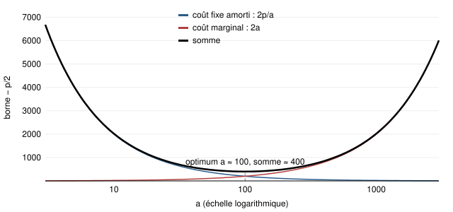
| \(a\) | 1 | 10 | 30 | 100 | 300 | 1 000 |
|---|---|---|---|---|---|---|
| borne explicite pour \(\lvert S\rvert\) (\(p=10\,007\), \(m=3\) ; vrai : 5 002) | 20 011 | 7 004 | 5 670 | 5 303 | 5 670 | 7 235 |
Ces valeurs sont celles de la recette ci-dessus, entiers compris ; le minimum, 5 289, est atteint en \(a=70\), et la borne dépasse alors \(p/2\) de 286, contre \(\sqrt p\approx100\). Avec \(a=1\), la borne est pire que triviale. Avec \(a\approx\sqrt p\), elle vaut \(p/2+O(m\sqrt p)\). La minoration s’obtient en appliquant le même argument à \(\eta g\), avec η un non-carré, ce qui compte les \(x\) où \(g(x)\) n’est pas un carré, puis en retirant les zéros de \(g\) (au plus \(m\)) : la méthode ne produit elle aussi que des majorations, comme au § 1.4. Ensemble, elles donnent \(|S|=p/2+O(m\sqrt p)\). C’est la borne de type Weil pour le nombre de points, à constantes non optimisées ; en affinant la méthode et en travaillant sur les extensions finies, on rejoint la preuve de l’hypothèse de Riemann pour les courbes. Ce n’est pas une simple substitution de \(q=p^r\) à \(p\) : la recette suppose \(a<p\), alors que \(a\asymp\sqrt q\) finit par dépasser \(p\), et il faut des dérivées de Hasse. Voir Stepanov et Bombieri dans les références. Le ½ vient de l’équilibre entre un coût amorti en \(1/a\) et un coût marginal en \(a\). La question 5 y reviendra.
Transposer, c’est trouver des équivalents de trois choses.
| Stepanov (\(\mathbb F_p[X]\)) | Sur ℤ | Ce qui le fournit chez Alpöge |
|---|---|---|
| \(\operatorname{ord}_x(F)\), l’annulation en un point | \(v_p\), la divisibilité par un premier | § 2 |
| Une dérivée de plus : un ordre de plus | une couche de divisibilité de plus | ? |
| \(D^kF=0\) sur tout \(S\) d’un coup, par une identité | la divisibilité en tous les premiers inertes d’un coup | Théorème A, uniforme en \(p\) (§ 3) |
| Lemme de Siegel : \(F\) existe | une forme existe, avec une taille contrôlée | inégalité de pentes (§ 5.4) |
La deuxième ligne est la difficulté. Alpöge (note, § 1) : « multiplicity is hard to find over the integers, corresponding to something like differentiating whole numbers ». Le § 3 a fourni une dérivation : \(D^a\) en un point CM, qui donne le profil \(a(1/p+1/p^3+\cdots)\). Augmenter \(a\) ne suffit pas, comme la troisième tentative du § 4.1 ⟦I⟧ : la divisibilité croît avec \(a\), la taille archimédienne aussi, et la perte \(O(\log a)\) par premier reste un coût fixe en \(O(y)\) que rien n’amortit. Il faut un analogue de « dériver encore », c’est-à-dire une opération qui ajoute une couche de divisibilité, et qui se compose.
Nous allons rencontrer des objets qui appartiennent normalement à un cours de formes automorphes. Il n’est pas nécessaire de suivre un tel cours pour comprendre le rôle qu’ils jouent ici. Partons d’un objet que l’on sait calculer.
Pour \(|q|<1\), considérons
\[\theta(q)=\sum_{n\in\mathbb Z}q^{n^2}=1+2q+2q^4+2q^9+\cdots.\]
Cette fonction ressemble à une série génératrice de combinatoire. Son carré est la série thêta du réseau carré :
\[\theta(q)^2=\sum_{(a,b)\in\mathbb Z^2}q^{a^2+b^2}=\sum_{n\ge0}r_2(n)q^n.\]
Le coefficient \(r_2(n)\) est le nombre de représentations de \(n\) par la forme quadratique \(a^2+b^2\). Par exemple, \(r_2(5)=8\). Le réseau \(\mathbb Z^2\) est aussi le réseau des entiers de Gauss \(\mathbb Z[i]\), de norme \(|a+ib|^2\). Le lien avec la courbe du § 3 n’est pas accidentel : le même corps quadratique imaginaire fournit ici une géométrie hermitienne et là des endomorphismes supplémentaires.
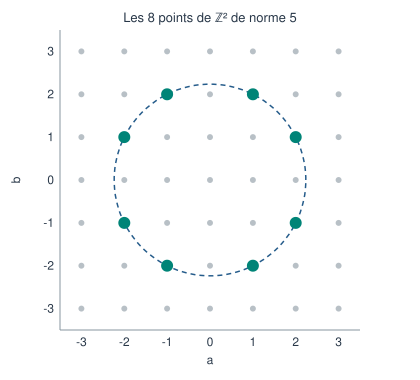
Un autre phénomène explique la puissance de cet objet. Pour \(t>0\), la formule de sommation de Poisson appliquée à une gaussienne donne
\[\sum_{n\in\mathbb Z}e^{-\pi t n^2}=t^{-1/2}\sum_{n\in\mathbb Z}e^{-\pi n^2/t}.\]
La même fonction décrit donc simultanément un réseau et son dual, avec une loi de transformation analytique très rigide. En écrivant \(q=e^{\pi iz}\), on obtient une fonction de \(z\) dans le demi-plan supérieur, possédant notamment une loi sous \(z\mapsto-1/z\). Voilà le premier exemple de ce que l’on cherche dans une forme automorphe : une fonction soumise à des règles de transformation par un groupe, et dont les coefficients contiennent une arithmétique. Les détails (groupe, poids, multiplicateurs et conditions de croissance) sont importants pour les théorèmes, mais ne sont pas nécessaires à ce premier aperçu.
Sur un corps CM \(K\) de conjugaison \(v\mapsto\bar v\), une forme hermitienne est une généralisation de la norme complexe. Sur \(K^r\) on peut considérer, par exemple,
\[H(v,w)=\sum_{j=1}^rv_j\overline{w_j}.\]
Son groupe d’isométries est le groupe unitaire \(U(H)\). Si la forme est définie positive à toutes les places infinies, les groupes réels correspondants sont compacts. On peut travailler avec des réseaux entiers dans cet espace hermitien, puis avec leurs classes d’isométrie. Pour un niveau fixé, le caractère défini permet, dans le cadre adélique approprié, des descriptions de dimension finie. La version réelle est une théorie de fonctions sur un quotient arithmétique, avec éventuellement des valeurs vectorielles ; le modèle fini ci-dessous en donne une intuition.
Supposons que l’on dispose de deux familles finies de classes de réseaux \([L]\) et \([L']\). Une fonction \(f\) sur la première peut être transportée sur la seconde par un noyau de nombres \(K(L',L)\) :
\[Tf(L')=\sum_{[L]}\frac{K(L',L)}{|\operatorname{Aut}(L)|}f(L).\]
L’opération est simplement une multiplication matricielle, avec un poids de mesure lié au stabilisateur. Dans la correspondance thêta réelle, le noyau vient de la représentation de Weil et l’intégrale est adélique ; le choix des vecteurs et des niveaux intervient. Il ne suffit pas de prendre une série génératrice quelconque pour obtenir un relèvement automorphe. Mais le modèle fait déjà apparaître trois propriétés que nous cherchions : des coefficients arithmétiques, une opération linéaire composable et des dénominateurs naturels à contrôler.
Pourquoi une période ? Pour extraire d’une fonction une donnée numérique, l’analyse utilise souvent une intégrale ou un coefficient de Fourier. Une période automorphe est, schématiquement, une intégrale sur un sous-groupe ou un quotient, parfois avec un caractère ou un vecteur test. Dans la preuve, les périodes de Bessel relient les noyaux, leurs valeurs arithmétiques et des structures entières. Nous n’avons pas besoin de calculer une période réelle de Bessel pour comprendre pourquoi une application d’évaluation ou de période peut être représentée par une matrice. C’est ce qui nous permet de passer du local au global et, à la section suivante, d’empiler les gains.
Le relèvement thêta. Une forme automorphe φ sur un groupe unitaire \(U(X_0)\) se transporte en une forme sur un groupe unitaire plus grand \(U(X_1)\), en l’intégrant contre une série thêta à deux variables, le noyau. On recommence : \[U(X_0)\xrightarrow{K_1}U(X_1)\xrightarrow{K_2}\cdots\xrightarrow{K_m}U(X_m),\qquad\dim X_j=k+j(t+1).\] Tous les espaces hermitiens sont définis. Les groupes sont alors compacts à l’infini, et, à niveau et type à l’infini fixés, les espaces de formes sont de dimension finie : chaque \(K_j\) est une matrice, de taille \(c_{j}\times c_{j-1}\).
Ce que dit l’export. La chaîne est littéralement un produit de matrices :
chainMat Kj i := Fin.induction 1 (fun j A => Kj j * A) -- K_i ⋯ K_1
ColChain.fact : Pt(φ)(F) = PtL( chainMat Kj (last) · φ )(F)La période de φ (une période de Bessel, au sens de Gan–Gross–Prasad) est une période sur le dernier groupe du vecteur \(K_m\cdots K_1\varphi\). C’est la forme matricielle des identités seesaw de Kudla.
Pourquoi les couches s’ajoutent. Si chaque
coefficient de \(A\) est divisible par
\(p^{\alpha}\) et chaque coefficient de
\(B\) par \(p^{\beta}\), chaque coefficient de \(AB\) est divisible par \(p^{\alpha+\beta}\), car une somme de
multiples de \(p^{\alpha+\beta}\) en
est un. Donc \[v_p(K_m\cdots
K_1)\;\ge\;\sum_{j=1}^m v_p(K_j),\] exactement comme \(\operatorname{ord}_x(FG)=\operatorname{ord}_xF+\operatorname{ord}_xG\).
Chaque noyau, évalué près des points CM de l’orbite de Frobenius de
\(p\), apporte son gain du § 3, noté
gainP p j. Il perd la partie \(p\) de l’ordre du groupe d’automorphismes
du réseau, \(\mathrm{dG}_j\ge
v_p(|\mathrm{Stab}_\Gamma(L)|)\) (dG_spec), qui est
un dénominateur de masse de Siegel. Au total, pour
chaque premier inerte \(p\) : \[v_p(\text{période})\;\ge\;\sum_{j=1}^{m}\mathrm{gain}_j(p)\;-\;\sum_{j=1}^m\mathrm{dG}_j,\qquad\mathrm{gain}_j(p)\approx\sum_{e\
\text{impair}}\Big(\frac{a}{p^{e}}-\mathrm{cap}_j(p,e)\Big)_+ ,\]
où \(\mathrm{cap}_j\) est un poids, de
type Harish-Chandra, propre au \(j\)-ième relèvement. La longueur
\(m\) de la chaîne joue le rôle de
l’ordre d’annulation \(a\) de
Stepanov.
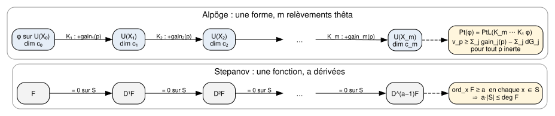
Pourquoi pas une puissance ? Composer \(m\) fois le même noyau, ou multiplier \(m\) copies d’une même série thêta, ce
serait la tentative \((g^c-1)^a\) : la
taille archimédienne serait multipliée comme la divisibilité. La chaîne
utilise des groupes de rangs croissants. On peut espérer que les espaces
de formes offrent de nouvelles directions exploitables, comme les
inconnues de Stepanov doivent dépasser les conditions (\(2JK>a(K+J)+\cdots\)). L’export impose
\(k\ge x\,m\) (Win_at) :
le rang de base croît avec la longueur de la chaîne ⟦I⟧, à la manière du
comptage de dimensions qui garantit l’existence de \(F\).
Les poids sont alignés. La somme de premiers à
majorer, pondérée de Riesz, s’écrit terme à terme \(\sum_{i\
\text{impair}}\big(a/p^i-w_j(p,i)\big)_+\). C’est la même
forme que le gain tronqué. Quatre profils sont pourtant à
distinguer : le poids de Riesz demandé, le gain brut du Théorème A, le
gain après troncature (le programme de flot du § 3.5) et le gain que
fournit effectivement LinkG_at. La construction choisit les
seuils \(\mathrm{cap}_j\) des
relèvements en fonction des \(w_j\) ;
que l’on ait identité terme à terme, ou seulement une domination avec un
reste quantifié, ce qui suffirait, n’a pas été établi en suivant les
instanciations. C’est l’exigence « le profil doit suivre le poids » du §
2.4, réalisée couche par couche. La possibilité de réaliser
simultanément ces seuils est un résultat de construction, et non une
conséquence de la simple forme des expressions. La condition qui relie
les deux côtés (LinkG_at) dit que, pour chaque premier
inerte \(p\), \[\sum_{j=1}^m(\text{contribution de }p\text{ au
}j\text{-ième
terme})\;-\;\text{pertes}\;\le\;\sum_{j=1}^m\mathrm{gain}_j(p).\]
Une fois les poids alignés, cette inégalité est presque une identité.
Toute la difficulté est de construire des réseaux, des
noyaux et des périodes qui réalisent ces gains, et de
contrôler les pertes.
Nous avons identifié, dans l’atelier 2, un gain désiré de \(84\) au premier 3. Imaginons quatre opérateurs successifs entre réseaux, dont les coefficients sont divisibles par \(3^{84}\). La composée aurait des coefficients divisibles par \(3^{336}\). Ce calcul est une conséquence immédiate de \(v_3(AB)\ge v_3(A)+v_3(B)\), où \(v_3(A)\) est le minimum des valuations des entrées. L’inégalité peut être stricte : \(A=(1\ \ 1)\) et \(B={}^t(1\ \ p-1)\) donnent \(AB=p\), alors que \(v_p(A)=v_p(B)=0\). Elle ne garantit ni l’injectivité, ni que les gains soient ceux qu’on cherche colonne par colonne. Mais supposons que, pour extraire une composante utile à chaque étape, on doive diviser par \(3^2\). Le gain garanti n’est plus que \(4(84-2)=328\). Chaque dénominateur intervient avec le signe contraire à chaque gain.
Il s’agit d’un bilan fictif : ni les quatre opérateurs ni les valeurs 84 et 2 ne sont des objets extraits de Lean. Il montre exactement ce qu’il faut contrôler lorsque les noyaux sont composés. Dans la preuve, les valuations sont locales, les gains dépendent des places et des poids, et la chaîne doit fonctionner simultanément pour un grand nombre de premiers.
On peut maintenant comprendre pourquoi la multiplication des valuations ne constitue pas à elle seule une preuve. Le modèle \(K_j=3^{84}I\) produirait bien les gains ci-dessus, mais la norme de la composée serait elle aussi multipliée par \(3^{336}\). L’inégalité ne gagnerait rien. Le véritable enjeu est le rapport entre le gain de divisibilité, le coût archimédien et le coût de la projection sur les objets utiles. La croissance des groupes est une manière de construire une famille de noyaux différents ; elle n’établit pas, à elle seule, un gain net. La comparaison des pentes va précisément mesurer ce rapport.
| Stepanov | Alpöge |
|---|---|
| Courbe \(y^2=g(x)\) sur \(\mathbb F_p\) | Somme de Tchebychev tordue sur les premiers inertes de l’hôte \(E\) |
| Points \(x\in S\) | Premiers inertes \(p\) |
| Fonction auxiliaire \(F\) | Une forme φ et ses relèvements ; le réseau \(N_u\) de leurs périodes |
| Ordre d’annulation \(a\) | Longueur \(m\) de la chaîne |
| \(D^kF=0\) sur \(S\) par une identité | Théorème A, valable en tous les \(p\) inertes à la fois |
| \(X^{jp}\), constantes pour la dérivation | Frobenius et points CM : les couches impaires \(a/p^e\) (§ 3) ⟦I⟧ |
| \(\operatorname{ord}(FG)=\operatorname{ord}F+\operatorname{ord}G\) | \(v_p(K_m\cdots K_1)\ge\sum_jv_p(K_j)\) |
| Lemme de Siegel (existence de \(F\)) | Familles de formes sur des groupes définis ; inégalité de pentes de Bost (§ 5.4) |
| \(a\cdot\lvert S\rvert\le\deg F\) | Différence de pentes ≤ termes archimédiens (§ 5) |
| Coût fixe \(p/a\), coût marginal \(a\) | Erreur \(x/m\), perte \(m\) par relèvement (§ 6) |
| \(a\approx\sqrt p\) | \(m\approx\sqrt x\) |
Cette transposition, des fonctions auxiliaires sur les corps finis vers la divisibilité et les pentes sur ℤ, prolonge les méthodes de transcendance de Thue, Siegel et Bombieri, dont les inégalités de pentes de Bost sont la forme moderne.
La chaîne et le calcul des gains (chainMat,
ColChain, yProd, gainP,
LinkG_at) pèsent environ 0,1 % de la
fermeture (poids dominé, en lignes de l’export). Comme pour le Théorème
A, le mécanisme de la multiplicité est petit. Ce qui pèse, c’est ce que
la chaîne suppose :
C’est la « fabrication des objets », 36 % du volume (§ 7). Les dénominateurs \(\mathrm{dG}_j\) renvoient aux masses de Siegel, dont le calcul archimédien est l’objet de la question 4.
Réponse à la question 3. Stepanov majore \(|S|\) par une fonction qui s’annule à l’ordre \(a\) sur \(S\) avec un degré bien inférieur à \(a\) fois le degré naïf. Il y parvient parce que la dérivation ignore les \(X^{jp}\), qui valent \(X^j\) sur \(S\). Une multiplicité obtenue par puissance ne sert à rien : il faut des couches nouvelles, qui s’ajoutent. Sur ℤ, la couche est un gain de divisibilité \(p\)-adique au point CM (§ 3). Les relèvements thêta fournissent l’opération qui en ajoute une, et qui se compose : la période du \(m\)-ième relèvement est le produit \(K_m\cdots K_1\) de matrices de noyaux, et les valuations d’un produit s’additionnent. Les groupes de rangs croissants fournissent des noyaux distincts ; la nouveauté effective de chaque couche et son coût reposent sur la construction. La longueur \(m\) de la chaîne joue le rôle de l’ordre d’annulation, et elle s’équilibre comme lui en \(\sqrt x\).
Les §§ 2 à 4 décrivent le mécanisme qui doit fournir la moitié \(p\)-adique de l’identité du § 2.1, \(\sum_pv_p(M)\log p=\log|M|\). On dispose maintenant d’un objet (un réseau de périodes) dont la divisibilité, premier par premier, suit le poids de Riesz, avec \(m\) couches empilées. Il reste l’autre moitié : la taille. Chez Tchebychev, c’était \(\binom{2n}{n}\le4^n\), et cela tenait en une ligne. Ici, c’est la partie la plus délicate, pour une raison simple. La somme de premiers à majorer vaut \(y\log y\), à un terme principal près, et l’on veut une erreur \(\sqrt y\). La borne archimédienne doit donc reproduire le terme principal exactement, et ne laisser de place qu’aux fluctuations. Ce paragraphe explique pourquoi c’est possible, et ce que cela exige.
Revenons à \(y!\) (§ 2.3). La formule du produit, appliquée à ce seul entier, donne deux façons de calculer son logarithme : \[\underbrace{\sum_{m\le y}\Lambda(m)\Big\lfloor\frac ym\Big\rfloor}_{\text{places finies : Legendre}}\;=\;\log y!\;=\;\underbrace{y\log y-y+\tfrac12\log(2\pi y)+O(1/y)}_{\text{place infinie : Stirling}} .\] Le membre de gauche demande de connaître tous les premiers. Celui de droite ne les connaît pas : c’est de l’analyse réelle, l’intégrale de \(\log t\) corrigée par Euler–Maclaurin. Les deux sont égaux. Le terme principal \(y\log y-y\) du côté des premiers est donc calculé, sans un seul premier, par la taille archimédienne.
Avec \(\binom{2n}{n}\), l’identité de Tchebychev (§ 2.3) et Stirling donnent de même :
| \(n\) | \(\log\binom{2n}{n}\) (exact) | Stirling : \(n\log4-\frac12\log(\pi n)\) | \(n\log4\), prédit par \(\psi(x)\sim x\) |
|---|---|---|---|
| 10 | 12,1268 | 12,1393 | 13,8629 |
| 1 000 | 1 382,2680 | 1 382,2681 | 1 386,2944 |
| 10⁶ | 1 386 286,8810 | 1 386 286,8810 | 1 386 294,3611 |
Le côté archimédien connaît le terme principal \(n\log4=\sum_k(-1)^{k+1}\,2n/k\), celui que donnerait \(\psi(x)=x\). Il le connaît à \(\frac12\log(\pi n)\) près, sans erreur liée aux premiers.
Pourquoi. Les deux côtés sont gouvernés par des séries de Dirichlet différentes : \[\sum_n\frac{\log n}{n^s}=-\zeta'(s)\qquad\text{et}\qquad\sum_n\frac{\Lambda(n)}{n^s}=-\frac{\zeta'}{\zeta}(s).\] On passe de l’une à l’autre en multipliant par \(\zeta(s)\), puisque \(\log n=\sum_{d\mid n}\Lambda(d)\) : c’est la convolution par 1 qui produit les \(\lfloor y/m\rfloor\). Or \(-\zeta'\) n’a qu’un pôle, en \(s=1\) : les zéros de ζ, qui sont des pôles de \(\zeta'/\zeta\), sont tués par la multiplication par ζ. La série \(-\zeta'\) explique pourquoi les zéros ne donnent pas de pôles dans ce calcul ; Stirling fournit indépendamment l’évaluation précise de la factorielle.
Le principe illustré par la factorielle. La convolution par 1 fait disparaître les pôles de \(-\zeta'/\zeta\) aux zéros de ζ. La quantité \(\log y!\) possède donc un calcul archimédien qui ne dépend pas d’une estimation de ces oscillations. Pour la preuve réelle, les formules de masses, de normes et de périodes doivent produire le terme principal approprié avec une précision suffisante. Cette coïncidence nécessite une identité ou un calcul spécifique : elle ne découle pas du simple fait que les volumes sont connus exactement.
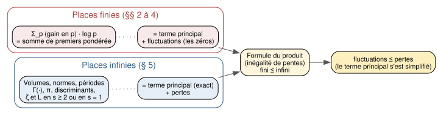
C’est aussi ce qui limite \(y!\) ⟦I⟧. Son profil \(\lfloor y/m\rfloor\) revient, du côté des séries de Dirichlet, à multiplier par \(\zeta(s)\). La dent de scie qui le sépare du poids de Riesz contient les fluctuations avec le signe opposé, et elle les annule : \(y!\) ne peut rien dire des zéros. Le profil produit par la chaîne (§ 4.3) doit suivre le poids de Riesz lui-même, sans ce facteur ζ.
Le terme principal est énorme et la cible minuscule :
| \(y\) | terme principal \(y\log y\) | cible \(\sqrt y\) | précision relative exigée |
|---|---|---|---|
| 10⁶ | \(1{,}4\cdot10^{7}\) | \(10^{3}\) | \(7\cdot10^{-5}\) |
| 10²⁰ | \(4{,}6\cdot10^{21}\) | \(10^{10}\) | \(2\cdot10^{-12}\) |
Contre-exemple. Remplaçons Stirling par la borne grossière \(y!\le y^y\). On obtient \(S(y)\le y\log y\), donc \(G(y)\le(1+\gamma)\,y\). Oublier un seul terme, ici \(-y\), fait une erreur de la taille de \(y\), mille fois la cible dès \(y=10^6\). Une borne archimédienne qui perd un facteur constant est fatale, et un facteur \(1+o(1)\) ne suffit pas non plus. Il faut des égalités, ou des inégalités dont l’erreur additive est au plus de l’ordre de \(x^{1/2+O(\varepsilon)}\) ; une précision relative de \(x^{-1/2}/\log x\) correspond à la cible stricte \(\sqrt x\) pour un terme principal en \(x\log x\).
C’est la différence de nature entre les deux côtés. Le côté \(p\)-adique peut perdre (des \(O(\log a)\) par premier, des dénominateurs de Hecke), à condition que les pertes totales restent sous \(\sqrt x\). Le côté archimédien doit être exact sur le terme principal.
Pour certains objets arithmétiques, des formules exactes de taille existent. Les trois exemples ci-dessous font apparaître des ingrédients récurrents : des valeurs de Γ, des puissances de π, un discriminant, et des valeurs de ζ ou de fonctions L en des points où les identités nécessaires s’établissent sans supposer GRH.
(a) Une masse de Siegel. Les réseaux unimodulaires pairs de rang 8 forment une seule classe, \(E_8\). La formule de masse de Siegel donne \[\sum_{[L]}\frac1{|\mathrm{Aut}\,L|}=\frac{|B_4|}{8}\cdot\frac{|B_2|}{4}\cdot\frac{|B_4|}{8}\cdot\frac{|B_6|}{12}=\frac1{696\,729\,600},\] qui est bien \(1/|W(E_8)|\). À des rangs supérieurs, les nombres de Bernoulli font apparaître des valeurs comme \(\zeta(12)\). Par l’équation fonctionnelle, \(|B_{2j}|=2\,(2j)!\,\zeta(2j)/(2\pi)^{2j}\). Une masse est donc un produit de factorielles (des valeurs de Γ), de puissances de π et de \(\zeta(2),\zeta(4),\dots\) : des valeurs de ζ en \(s\ge2\), où le produit d’Euler converge absolument. Le produit d’Euler en ces points est absolument convergent ; le calcul n’exige donc pas de connaître les zéros de ζ.
Le rang 16, où la formule voit deux réseaux. En rang 16, le genre contient deux classes : \(E_8\oplus E_8\), avec \(|\mathrm{Aut}|=2\,|W(E_8)|^2=970\,864\,271\,032\,320\,000\), et \(D_{16}^+\), avec \(|\mathrm{Aut}|=2^{15}\cdot16!=685\,597\,979\,049\,984\,000\). La somme des inverses vaut exactement \[\frac1{970\,864\,271\,032\,320\,000}+\frac1{685\,597\,979\,049\,984\,000}=\frac{691}{277\,667\,181\,515\,243\,520\,000},\] ce que donne la formule de masse (vérifié en fractions exactes). Le 691 est le numérateur de \(B_{12}\), donc de \(\zeta(12)\). Comme \(|B_{2j}|=2(2j)!\,\zeta(2j)/(2\pi)^{2j}\), une masse est un produit de factorielles, de puissances de π et de valeurs \(\zeta(2j)\). Tous les premiers y figurent, mais à travers des produits eulériens absolument convergents, donc contrôlables sans connaître les zéros : c’est le même phénomène que Stirling au § 5.1. Cette propriété ne suffit pas, à elle seule, à établir la compensation du terme principal : il y faut les identités du § 5.5.
(b) Une période CM. Pour la courbe du § 3, \(y^2=x^3-x\), l’intégrale de \(dx/y\) le long de la branche réelle, de 1 à
l’infini, se calcule exactement : \[\int_1^\infty\frac{dx}{\sqrt{x^3-x}}=\frac{\Gamma(1/4)^2}{2\sqrt{2\pi}}=2{,}622057\ldots\]
C’est la constante ϖ de la lemniscate, vérifiée numériquement dans tools/modeles.py. Le cycle réel
complet parcourt deux branches : sa période pour \(dx/y\) vaut \(2\varpi\), et ϖ pour la différentielle
invariante usuelle \(dx/2y\). La
quantité normalisée de CM.DegSt demande encore d’autres
conventions : ϖ n’est pas directement Ω. La formule de
Chowla–Selberg [CS] généralise ce calcul. La taille
archimédienne d’un objet CM est un produit de valeurs \(\Gamma(a/d)^{\pm1}\), avec des exposants
donnés par le caractère \(\chi_{-d}\)
du corps CM.
(c) La norme d’un relèvement thêta. La formule de Rallis exprime la norme \(\langle\theta(\varphi),\theta(\varphi)\rangle\) d’un relèvement comme le produit d’une valeur spéciale de fonction L de φ et de facteurs locaux explicites. Elle est présente dans la fermeture, avec 308 déclarations :
rallis_of_dm,
environ 64 000 lignes), et elle entre dans le cœur par l’hypothèse
ThetaLocalInputs ;LowerLiftsZero :
les relèvements vers des rangs inférieurs sont nuls) ;ArchimedeanRallisFirst à Fifth) ;trivPar_euler, \(\operatorname{Re}s>n/2+1\)).Comme pour les masses, les fonctions L n’y interviennent qu’en des points où les identités nécessaires s’établissent sans supposer GRH ; les estimations uniformes de \(L'/L(1,\chi)\) quand le conducteur varie restent, elles, non triviales. Le rôle exact de ces normes dans la taille de chaque maillon de la chaîne n’a pas été suivi ⟦I⟧.
Pourquoi introduire des pentes au lieu de se contenter de la formule du produit ? Parce que la preuve ne construit pas un seul entier auxiliaire, mais une famille d’applications entre réseaux. Il faut une mesure de taille qui tienne compte de la dimension et qui soit compatible avec la division locale.
Commençons par un exemple à deux dimensions. Prenons
\[A=\begin{pmatrix}3&2\\6&-2\end{pmatrix}.\]
La première colonne est divisible par 3 ; la seconde par 2. Le déterminant est non nul et multiple de 6, donc \(6\le|\det A|\). L’inégalité de Hadamard fournit de l’autre côté
\[6\le|\det A|\le\|A_1\|\|A_2\|=\sqrt{45}\sqrt8.\]
Cette inégalité est déjà de la forme voulue : \(\log3+\log2\le\log\|A_1\|+\log\|A_2\|\). On a majoré une somme de logarithmes de premiers par des normes euclidiennes.
Le même calcul peut être formulé sans parler explicitement de divisibilité des colonnes. L’application \(A:\mathbb Z^2\to\mathbb Z^2\) reste entière sur le réseau agrandi
\[L'=\tfrac13\mathbb Z e_1\oplus\tfrac12\mathbb Z e_2.\]
Le covolume de \(L'\) vaut \(1/6\) ; sa pente (dans notre convention euclidienne non normalisée par le corps) vaut \(-\log(1/6)/2=\tfrac12\log6\). La pente du réseau initial était nulle. Diviser les coordonnées a donc transformé les valuations en une augmentation de pente.
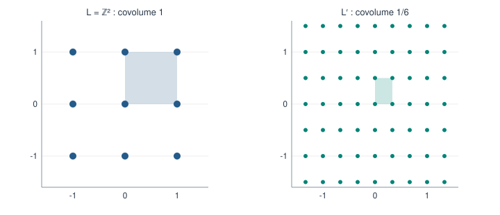
La matrice \(A\) transforme \(L'\) en un sous-réseau de \(\mathbb Z^2\) de covolume entier au moins 1. D’où \(|\det A|/6\ge1\), exactement la première inégalité. Cette lecture met en évidence l’injectivité : si le déterminant était nul, aucune information de ce type ne serait disponible. Pour les réseaux de rangs différents, on travaille avec des volumes dans l’espace image, des sous-réseaux et la pente maximale. Une version abstraite de l’inégalité de Hadamard conduit aux inégalités de pentes de Bost, qui permettent d’opérer sur des corps de nombres et avec des normes à plusieurs places.
Pourquoi le théorème S ? Un volume est sensible à la dépendance entre vecteurs. Deux vecteurs unitaires presque colinéaires ont un parallélogramme d’aire presque nulle. Plus généralement, si \(N\) vecteurs unitaires ont des produits scalaires hors diagonale bornés par \(\eta\), leur matrice de Gram \(G=I+E\) satisfait \(\|E\|_{\mathrm{op}}\le(N-1)\eta\). Si \((N-1)\eta<1\), elle est inversible, et toutes ses valeurs propres sont comprises entre \(1-(N-1)\eta\) et \(1+(N-1)\eta\). On contrôle alors aussi le déterminant de Gram. Ce lemme élémentaire n’est pas le théorème S ; il fait comprendre pourquoi une estimation quantitative de quasi-orthogonalité peut fournir à la fois un contrôle du rang, des normes et des volumes. Dans le problème réel, les dimensions croissent, ce qui rend la petitesse de l’erreur cruciale.
Propager les pentes. Une inégalité de pentes ne
suffit pas toujours, et un exemple de dimension 2 montre pourquoi. Le
réseau \(Q=\mathbb Ze_1\oplus\mathbb
Z(Me_2)\) de \(\mathbb R^2\),
avec \(M>1\), a une pente maximale
nulle, atteinte par \(\mathbb Ze_1\),
et une pente moyenne \(-\frac12\log
M\). Une application isométrique \(\mathbb Z\to\mathbb Ze_1\) contrôle une
direction, mais ne dit rien de \(M\) ;
une famille d’applications de bonne hauteur n’aide pas davantage si
toutes visent la même direction. Ce qui compte est le
rang de la somme des images, et la façon dont il
résiste quand on retire des directions. Rubinstein [R2, proposition M4]
en tire une démonstration de l’inégalité de pente moyenne, distincte du
chemin Lean TheoremF. Son cœur se ramène à un lemme
élémentaire. Soient des pentes cibles \(y_1,\dots,y_D\), une pente de référence
\(s\), un \(R>0\) avec \(y_i\ge s-R\), et \(N(t)=\#\{i:y_i<s-t\}\). Si \(N(t)/D\le f(t)\) pour \(0<t<R\), alors \[\frac1D\sum_iy_i\;\ge\;s-\int_0^R\min\big(1,f(t)\big)\,dt,\]
puisque \((s-y_i)_+=\int_0^R\mathbf
1_{y_i<s-t}\,dt\). Dans [R2], une borne de rang robuste
fournit \(f(t)=(\eta+4\,\mathrm{sp}/(\mathrm{sp}+t))/(1-\delta_*)\),
où \(\mathrm{sp}>0\) mesure la
dispersion des pentes sources, avec \(\eta\ge0\) et \(0\le\delta_*<1\). L’intégrale non
tronquée \(\int_0^Rf=(4\,\mathrm{sp}\log(1+R/\mathrm{sp})+\eta
R)/(1-\delta_*)\) majore celle de \(\min(1,f)\), et fait apparaître un
logarithme qui semblait arbitraire dans le budget. La version tronquée
se calcule aussi exactement. Si \(\eta\ge1-\delta_*\), on a \(\min(1,f)=1\) et la borne ne dit rien de
plus que \(y_i\ge s-R\). Sinon, \(f\) vaut 1 en \(t_*=\mathrm{sp}\big(4/(1-\delta_*-\eta)-1\big)>0\),
et avec \(u=\min(R,t_*)\), \[\int_0^R\min(1,f)\,dt=u+\frac{\eta(R-u)+4\,\mathrm{sp}\log\frac{\mathrm{sp}+R}{\mathrm{sp}+u}}{1-\delta_*}.\]
Quand \(R\gg\mathrm{sp}\), le terme
logarithmique additionne les déficits sur une plage d’échelles. Le
théorème S prend alors un autre visage. Il ne sert pas seulement à
rendre des périodes presque orthogonales : il garantit que l’information
de divisibilité se propage à presque toutes les
directions du réseau cible, et la pente mesure ce qui survit à ce
transfert. C’est une lecture ⟦I⟧ de l’architecture : nous n’avons pas
vérifié que TheoremF est une instance de ce principe.
Nous avons donc une inégalité arithmétique et une estimation géométrique qui se rencontrent. Le dernier pas est de savoir à quel terme principal elles se comparent.
Dans le modèle de l’atelier 3, nous avions garanti un gain \(3^{328}\) sur une composée fictive. Si celle-ci s’envoie dans un réseau entier, on peut, dans le modèle où le gain est uniforme, remplacer le réseau source \(L\) par \(3^{-328}L\). À norme archimédienne fixée, le covolume est divisé par \(3^{328r}\) en rang \(r\). La pente augmente donc de \(328\log3\), indépendamment du rang. Divisée par les quatre couches et par \(b=3\), la contribution normalisée est \((328/12)\log3\), à comparer aux \(28\log3\) de la partie impaire de Riesz pour 3. On lit immédiatement la perte due aux dénominateurs. Les autres premiers produisent des termes additifs semblables. C’est l’idée du transfert de la somme locale vers une pente globale.
Pentes : la formule du produit pour les réseaux. Un
réseau hermitien sur un corps de nombres \(K\) est un \(\mathcal O_K\)-module projectif muni de
normes aux places infinies. Son degré d’Arakelov est \(\widehat{\deg}=-\log\operatorname{covol}\),
et sa pente est \(\widehat\mu=\widehat{\deg}/\mathrm{rang}\).
Le degré se décompose en contributions des places finies, des longueurs
locales fois \(\log N\mathfrak p\), et
en contributions des places infinies, des normes. C’est la formule du
produit du § 2.1, pour un réseau au lieu d’un entier. Pour un idéal
entier \(I\), poser \(L'=I^{-1}L\) augmente sa pente de \[\widehat\mu(L')-\widehat\mu(L)=\sum_{\mathfrak
p}v_{\mathfrak p}(I)\log N\mathfrak p\quad(\text{normalisé}).\]
La divisibilité des périodes (§ 4.3) permet de diviser le réseau de
formes \(N_u\) tout en gardant entier
l’accouplement des périodes \(B_u:N_u\to
R^\vee\) (divClausesR_of,
DivIntoDualShift). Dans les conventions de la
reconstruction, le réseau est agrandi par multiplication par l’idéal
fractionnaire \(I_u=\prod_ww^{-\lfloor
e_w\sigma_u(w)\rfloor}\). Elle prend la partie entière
inférieure, et cette perte d’arrondi, comptée explicitement
(round_le, NprimeMuR), est de l’ordre de \(x\,n\,e^{x^{\varepsilon/3}}\). C’est un
facteur \(e^{-x^\varepsilon(1-o(1))}\)
en dessous des autres restes : elle est négligeable.
Le plafond : inégalité de pentes. Pour \(\varphi:E\to F\) injectif, \(\widehat\mu(E)\le\widehat\mu_{\max}(F)+h(\varphi)\)
(Bost). C’est le lemme de Siegel de Stepanov (§ 4.1), en version
arithmétique. On l’applique aux \(B_u\)
(FrameF). Trois ingrédients le rendent exact au degré voulu
:
Trois propriétés, une seule carte. L’inégalité de
pentes demande une application qui soit à la fois entière, de petite
hauteur et de grand rang. Trois applications ayant chacune l’une de ces
propriétés ne suffisent pas : sur \(\mathbb
Z^2\) euclidien, \(f_1=\mathrm{diag}(M,0)\) est entière, \(f_2=\mathrm{diag}(1/M,0)\) est de petite
norme, \(f_3=\mathrm{diag}(M,M)\) est
de rang 2, et aucune information ne passe de l’une à l’autre. Rubinstein
[R2] signale que sa reconstruction doit identifier trois telles cartes.
Dans Lean, l’énoncé général du bilan (TheoremF) exige les
trois propriétés d’une même famille \(B_i\) : l’intégralité (\(B_i(N_i)\) contenu dans le réseau cible),
la hauteur et le rang (par une matrice définie à partir de la matrice de
\(B_i\)). Là où la donnée réelle entre
(frame_at_of), \(B\) est
instancié par un seul champ de la structure de
division, DivData.Bk, l’accouplement des périodes \(B_u:N_u\to R^\vee\). Le raccord est donc
assuré par construction ; ce qui reste à comprendre est pourquoi
l’accouplement fabriqué possède les trois propriétés (article, §
5.7).
Les termes archimédiens, lus sur l’export.
SiegelMassRatioCM affirme une égalité, et
non une inégalité, pour le rapport des masses des réseaux hermitiens
standard de rangs \(M\) et \(M-1\) sur un corps CM \(K\) non ramifié (\(M\ge3\), \(f\) places infinies) : \[\frac{\mathrm{mass}_M}{\mathrm{mass}_{M-1}}=\frac{\big((M-1)!\,(v/\pi)^M\big)^{f}}{\sqrt{(2v)^{f}}}\cdot\prod_{\mathfrak
P}\mathrm{eulerFac}(K,M,\mathfrak P),\qquad
v=\tfrac12|\mathrm{disc}\,K|^{1/2f}.\] On y trouve exactement la
structure de l’exemple (a) : une factorielle \((M-1)!=\Gamma(M)\), des puissances de π, le
discriminant, et un produit d’Euler en \(s=M\ge3\), en convergence absolue
(massRatioRightSide, lValEta).Count_at
encadre la taille \(\log T(u)\) d’une
colonne par \[\sum_{j\in\text{lifts}}\frac1f\sum_{\tau}\log\frac{w_{j,\tau}\,v}{\pi}+m\log(g_0g_1)-C(\dots)\;\le\;\log
T(u)\;\le\;C\,m\,L .\] C’est une somme, sur les \(m\) relèvements et sur les places
CM τ, de termes en \(\log(w\,v/\pi)\),
de type Γ. Le côté archimédien s’empile donc maillon par maillon, comme
le côté \(p\)-adique du § 4.3.Lnk.char_at) : \(\ell(\psi)=(L'/L)(1,\chi)\), la valeur
en \(s=1\) qui définit \(g(y,\chi)=S(y,\chi)+y\,(L'/L)(1,\chi)\)
au § 1.2.L’assemblage se fait dans linkCore :
\[\sum\mathrm{ASK}\;\le\;\mathrm{Ga}+\text{perte},\qquad\mathrm{Ga}\;\lesssim\;\Delta\widehat\mu,\qquad\widehat\mu(N_u)\;\le\;\widehat\mu_{\mathrm{dual}}(R)+\cdots\]
ASK).Ga est la somme des gains locaux pondérés par \(\log N\mathfrak p\) (Loss7,
SlopesN_at).FrameF) et par les termes de type Γ
(Count_at).D’où : somme de premiers ≤ termes archimédiens + perte \(x^{O(\varepsilon)}\). Sur
l’export, on lit ces inégalités et les termes archimédiens. La
simplification exacte du terme principal est l’identité
key_identity5. Ses trois sources sont : Stirling pour \(a\log a-a\) ; une formule de Chowla–Selberg
pour la hauteur des droites CM (CM.DegSt, démontrée), qui
fournit \(-\gamma+L'(1,\chi)/L(1,\chi)\) ; et les
termes Γ de Count5 pour la moyenne des \(\log w\) (partie II, « Cinq points
éclaircis », point 2). La taille archimédienne est celle de \(a!\,\Omega^{-a}\) : la dérivée \(a\)-ième de la série thêta renormalisée par
la période Ω.
Un modèle exact de la normalisation. Soit \(L\) une droite hermitienne sur \(\mathbb Z\), engendrée par \(e\) de norme \(r>0\), et posons \(\widehat{\deg} L=-\log r\). Alors \(\widehat{\deg} L^{\otimes a}=a\,\widehat{\deg}
L\) et \(\widehat{\deg}
L^\vee=-\widehat{\deg} L\). Si \(2\widehat{\deg} L=\log\Omega\), la norme de
\(e^{\otimes2a}\) vaut \(r^{2a}=\Omega^{-a}\), et le vecteur \(a!\,e^{\otimes2a}\) a pour logarithme de
norme \[\log(a!)-a\log\Omega,\]
exactement la forme du terme archimédien du bilan. Ce modèle ne dit pas
que l’objet Lean est cette puissance tensorielle : l’exposant \(2a\), le signe et les métriques doivent
être lus dans la construction réelle. Il montre seulement pourquoi le
facteur 2 de CM.DegSt (\(2\widehat{\deg}=\log\Omega\)) est
structurant. Sur un corps de nombres, le degré normalisé par \([K:\mathbb Q]\) garde ces deux identités ;
reste à vérifier, flèche par flèche, les conventions (norme ou norme au
carré, degré brut ou normalisé) le long du chemin CM.DegSt
→ LamDegSt → numGood_of_famQ → bornes par
pages → LinkDIV_at.
Le modèle de Stirling doit être exploité sans lui faire dire davantage qu’il ne dit. Dans le cas de Riesz, le terme principal n’est pas \(y\log y-y\) mais \(y\log y-(1+\gamma)y\). D’où vient cette différence ? Nous pouvons l’identifier exactement par un calcul analytique classique, avant de chercher son correspondant automorphe.
Écrivons \(s=1+h\). La série de Laurent de ζ donne
\[-\frac{\zeta'}{\zeta}(1+h)=\frac1h-\gamma+O(h),\qquad \frac{y^{1+h}}{(1+h)h}=y\left(\frac1h+\log y-1+O(h)\right).\]
Le coefficient de \(h^{-1}\) dans le produit vaut \(y\log y-(1+\gamma)y\). L’origine des trois termes est distincte : le \(y\log y\) vient du développement de \(y^h\), le \(-y\) du facteur \((1+h)^{-1}\), le \(-\gamma y\) de la partie régulière de la dérivée logarithmique. Pour un caractère primitif non trivial, la singularité en \(s=1\) vient seulement du noyau ; la constante linéaire est \(-L'(1,\chi)/L(1,\chi)\).
Une construction arithmétique qui prétend majorer la somme de Riesz à l’échelle \(\sqrt y\) doit donc retrouver ces constantes, pas seulement le coefficient de \(y\log y\). On peut le résumer comme une obligation de compensation. Si \(M(y)\) désigne le terme principal et si le gain de pente donne \(M(y)+G(y)-E_1\), tandis que le plafond archimédien vaut \(M(y)+E_2\), alors
\[M(y)+G(y)-E_1\le M(y)+E_2\quad\Longrightarrow\quad G(y)\le E_1+E_2.\]
Mais si le plafond était \(M(y)+cy+E_2\) avec \(c>0\), la méthode ne donnerait que \(G(y)\le cy+E_1+E_2\). La différence d’une
constante est décisive. C’est pourquoi les données
Count_at, SiegelMassRatioCM et
Lnk.char_at sont intéressantes ensemble : la première donne
des termes logarithmiques, la seconde une identité de masses, la
troisième les constantes analytiques. Le rapprochement ne prouve pas
encore leur compensation. Il faudrait pour cela suivre l’assemblage de
ces expressions dans linkCore et
Deduction.ch_top, avec les normalisations exactes. Ce
travail est identifié ici comme un chantier, non remplacé par une
analogie avec Stirling. L’export répond (partie II, « Cinq points
éclaircis », point 2). Le terme principal y est défini en toutes
lettres,
MAIN(a, w) = a·(log a − 1 − γ + ℓ(χ) − moyenne des log w).
Côté archimédien, \(a\log a-a\) vient
de Stirling appliqué à \(a!\) ; \(-\gamma+\ell(\chi)\) vient d’une
formule de Chowla–Selberg pour la hauteur, démontrée
dans le projet (CM.DegSt : le double du degré d’Arakelov
d’une droite CM vaut \(\gamma+\log(2\pi/\mathrm{rd}_E)-L'(1,\chi)/L(1,\chi)\))
; la moyenne des \(\log w\) vient des
termes Γ des colonnes. L’identité key_identity5 assemble
ces trois sources. Le calcul se refait terme à terme, à partir de
l’hypothèse de division DIV (partie II, « Cinq points
éclaircis », point 2), qui borne le saut de pente par \[\sum_t\Big[m\big(\mathrm{ph}(a_t)-a_t\log\Omega\big)-a_t\log
T(u)\Big]+\mathrm{EDiv},\qquad\mathrm{ph}(y)=y\log
y-y,\qquad\log\Omega:=\gamma+\log\frac\pi
v-\ell(\chi).\tag{D}\]
Le calcul, terme à terme. Les énoncés lus suffisent
à refaire l’algèbre. Count5 n’est pas une égalité : il
minore \(\log T(u)\)
par \[\Lambda_5=\sum_j\frac1f\sum_\rho\log\frac{w_{j\rho}v}{\pi}+m\,\mathrm{lg}-c_{\mathrm{Count}}\Big(L_a+\frac{m^2L_a}k\Big),\qquad
f=|\Phi|,\] et le majore par \(c_{\mathrm{Count}}\,m\,L\). Comme \(\log T(u)\) entre dans (D) avec le signe
moins, la minoration suffit. Pour une colonne de taille \(a\), remplaçons \(\log T(u)\) par \(\Lambda_5\), et notons \(\overline{\log w_j}\) la moyenne sur Φ :
\[m\big(a\log
a-a\big)-ma\Big(\gamma+\log\frac\pi
v-\ell(\chi)\Big)-a\sum_j\Big(\overline{\log w_j}+\log\frac
v\pi\Big)-ma\,\mathrm{lg}+a\,c_{\mathrm{Count}}\Big(L_a+\frac{m^2L_a}k\Big).\]
Les termes en \(\log(\pi/v)\) et \(\log(v/\pi)\) se compensent, et il reste
\[\sum_{j<m}a\Big(\log
a-1-\gamma+\ell(\chi)-\overline{\log
w_j}\Big)-ma\,\mathrm{lg}+a\,c_{\mathrm{Count}}\Big(L_a+\frac{m^2L_a}k\Big)=\sum_{j<m}\mathrm{MAIN}(a,w_j)-ma\,\mathrm{lg}+a\,c_{\mathrm{Count}}\Big(L_a+\frac{m^2L_a}k\Big).\tag{C}\]
Sommée sur les colonnes, c’est exactement l’identité
key_identity5, où \(\Lambda_5\) s’appelle Lam5 :
l’algèbre est reconstruite, et Lean la vérifie. Le terme de preuve
montre comment : key_identity5 pose
h := Data.key_identity …, dont la conclusion fait
intervenir L et un terme \(2\log\Gamma/(fk)\), puis conclut par
linear_combination h ; une fois Lam5 déplié,
le terme en La figure des deux côtés de
key_identity5 et s’annule. La compensation effective est
donc dans key_identity. C’est une compensation
symbolique. Elle dit que les expressions se compensent
; que des objets réels réalisent les encadrements qu’elle suppose relève
de la fabrication (partie II). Il reste à justifier que \(\log\Omega\), défini par cette formule, est
bien la taille d’une période : c’est l’objet d’un théorème que l’on
verra au § 5.5, une formule de Chowla–Selberg.
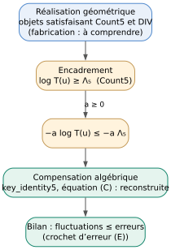
Il y a là une symétrie remarquable. La même factorielle \(a!\) donne la divisibilité de Legendre côté \(p\)-adique (§ 3) et le terme principal de Stirling côté archimédien. Comme \(\log y!=\sum\Lambda(m)\lfloor y/m\rfloor\), un même nombre est lu des deux côtés de la formule du produit.
L’atelier 5 a laissé une dette. Le côté archimédien contient \(-a\log\Omega\), avec \[\log\Omega:=\gamma+\log\frac\pi v-\ell(\chi),\qquad \ell(\chi)=\frac{L'}{L}(1,\chi),\] et c’est ce terme qui fournit la constante \(-\gamma+\ell(\chi)\) du terme principal. Mais pourquoi la taille d’un objet géométrique connaîtrait-elle \(\gamma\) et la dérivée logarithmique d’une fonction L ? La réponse tient en trois idées classiques : une période est une taille ; une période CM se calcule par des valeurs de Γ ; et les valeurs de Γ se traduisent en fonctions L.
Une période est une taille. Une courbe elliptique sur ℂ est un quotient \(\mathbb C/\Lambda\). Sa différentielle invariante \(\omega=dx/y\) s’intègre le long des lacets en des périodes, qui engendrent le réseau Λ. Pour \(y^2=x^3-x\), c’est la constante ϖ de la lemniscate (§ 5.3 (b)). En géométrie d’Arakelov, on munit la droite engendrée par ω de la norme \(\|\omega\|^2=\frac i2\int\omega\wedge\bar\omega\), c’est-à-dire de l’aire du domaine fondamental de Λ. Le degré d’Arakelov de cette droite hermitienne, la hauteur de Faltings au signe près, est donc essentiellement \(-\log\) de la période. Une période est exactement le genre de taille archimédienne qu’une inégalité de pentes sait utiliser.
Une période CM se calcule par la fonction Γ. Pour une courbe générale, la période n’est pas donnée par une formule comparable. Pour une courbe à multiplication complexe par l’anneau des entiers de \(K=\mathbb Q(\sqrt{-d})\), Chowla et Selberg (1967) montrent qu’elle vaut, à un nombre algébrique et une puissance de π près, \[\prod_{a=1}^{d-1}\Gamma\Big(\frac ad\Big)^{\chi_{-d}(a)\,w/(4h)},\] où \(h\) est le nombre de classes et \(w\) le nombre de racines de l’unité de \(K\). Pour \(\mathbb Z[i]\) (\(d=4\)), on ne voit apparaître que \(\Gamma(1/4)\) et \(\Gamma(3/4)=\pi\sqrt2/\Gamma(1/4)\), d’où la formule de la lemniscate.
Des valeurs de Γ aux fonctions L, en deux étapes.
Lerch. On écrit \(L(s,\chi)=d^{-s}\sum_a\chi(a)\,\zeta(s,a/d)\), avec la fonction zêta de Hurwitz. Comme \(\partial_s\zeta(0,x)=\log\Gamma(x)-\tfrac12\log2\pi\) et \(\sum_a\chi(a)=0\), \[L'(0,\chi)=\sum_{a=1}^{d-1}\chi(a)\log\Gamma\Big(\frac ad\Big)-L(0,\chi)\log d .\] Le logarithme d’un produit de valeurs de Γ pondéré par χ est la dérivée de \(L(s,\chi)\) en 0.
Équation fonctionnelle. Pour χ réel impair de conducteur \(d\), \(\Lambda(s)=(d/\pi)^{(s+1)/2}\Gamma\big(\frac{s+1}2\big)L(s,\chi)\) vérifie \(\Lambda(s)=\Lambda(1-s)\). En dérivant logarithmiquement en \(s=0\), et avec \(\frac{\Gamma'}\Gamma(\tfrac12)=-\gamma-2\log2\) et \(\frac{\Gamma'}\Gamma(1)=-\gamma\), on obtient \[\frac{L'}{L}(0,\chi)=\gamma+\log\frac{2\pi}d-\frac{L'}{L}(1,\chi).\] La constante d’Euler apparaît ici, par la fonction Γ du facteur archimédien de l’équation fonctionnelle.
Mis bout à bout : le logarithme d’une période CM est une combinaison de \(\gamma\), de \(\log2\pi\), de \(\log d\) et de \(L'/L(1,\chi)\). C’est exactement la forme de \(\log\Omega\).
L’exemple de \(\mathbb Z[i]\), vérifié numériquement.
| Quantité | Valeur |
|---|---|
| \(L'/L(1,\chi_{-4})=\gamma+2\log2+3\log\pi-4\log\Gamma(\frac14)\) | 0,245610 |
| \(L'/L(0,\chi_{-4})\) par Lerch, \(\big(\log\Gamma(\frac14)-\log\Gamma(\frac34)\big)/L(0)-\log4\) | 0,783189 |
| \(L'/L(0,\chi_{-4})\) par l’équation fonctionnelle, \(\gamma+\log\frac{2\pi}4-L'/L(1)\) | 0,783189 |
| \(\frac12\big(\gamma+\log\frac{2\pi}{2}-L'/L(1)\big)\) | 0,738168 |
| \(\log\big(\Gamma(\frac14)^2/2\pi\big)=\log\big(\varpi\sqrt{2/\pi}\big)\) | 0,738168 |
La dernière ligne est \(\log(\varpi\sqrt{2/\pi})\) : la
demi-période ϖ, multipliée par un facteur de normalisation \(\sqrt{2/\pi}\). Les deux dernières lignes
sont égales : dans ces normalisations, le logarithme de
la demi-période normalisée vaut la moitié de l’expression qui définit
CM.logOm pour \(\mathbb
Q(i)\). Le lien avec le \(v\) de
\(\log\Omega\) (atelier 5) est précisé
ci-dessous : \(v=\mathrm{rd}_E/2\).
L’énoncé de l’export. Le théorème
CM.DegSt, démontré dans le projet
(CM.PureDeg.degSt, fermeture de 114 806 déclarations),
énonce cette relation dans la généralité requise :
CM.DegSt := ∀ E (corps CM) H χ (caractère de Kronecker) … ,
2 · deg h (eigLat …) = CM.logOm E χ
CM.logOm E χ := γ + log (2π / rootDiscr E) − deriv (LFunction χ) 1 / LFunction χ 1Le double du degré d’Arakelov d’une droite propre d’un objet
CM de type (1,0) vaut \(\gamma+\log(2\pi/\mathrm{rd}_E)-L'(1,\chi)/L(1,\chi)\),
avec LFunction et deriv de Mathlib. Pour \(E=\mathbb Q(\sqrt{-d})\), le discriminant
racine vaut \(\sqrt d\), et l’équation
fonctionnelle ci-dessus réécrit le second membre en \(\frac{L'}L(0,\chi)+\frac12\log d\). On
reconnaît la formule de Chowla–Selberg pour la hauteur de Faltings,
\(h=-\tfrac12\frac{L'}L(0,\chi)-\tfrac14\log
d\) (Colmez, dans la normalisation de Deligne), à condition
d’identifier le degré de la droite propre à \(-h\) ; l’identification des conventions est
notre lecture ⟦I⟧. Dans l’export, le cas de base est construit à partir
d’une courbe elliptique à multiplication complexe par \(\mathbb Q(\sqrt{-d})\), avec \(d\equiv3\pmod4\) et \(d\ge7\), de réseau \(\mathbb Z+\frac{1+i\sqrt d}2\mathbb Z\)
(CMCurve). Le théorème entre dans le cœur par
ArcCM.known_holds, sur la branche de fabrication
ontoX.
Les normalisations, lues sur l’export. Le \(\log\Omega\) du bilan (atelier 5) et le
logOm du théorème CM sont la même quantité, à condition de
bien lire trois définitions. Le corps \(E\) n’est pas le corps quadratique : c’est
le grand corps hôte, de degré environ \(x^{2+8\varepsilon}\), et \(\mathrm{rd}_E\) est son discriminant
racine.
| Objet | Expression | Déclaration |
|---|---|---|
| discriminant racine de l’hôte | \(\mathrm{rd}_E=\lvert d_E\rvert^{1/[E:\mathbb Q]}\) | Host.rdE, NumberField.rootDiscr |
| paramètre \(v\) | \(v=\mathrm{rd}_E/2\), par définition | Host.v |
| caractère | \(\chi_{-d}\), caractère quadratique modulo \(d\) premier, \(d\equiv3\pmod4\) | chiK, IsKroneckerChar |
| constante \(\ell\) | \(\ell=\operatorname{Re}\,L'/L(1,\chi_{-d})\) | dlogL D 1, logDerivativeAtOne |
| \(\log\Omega\) du bilan | \(\gamma+\log(\pi/v)-\ell\) | SizeData₂.logOm, NumDatum.logOm |
logOm du théorème CM |
\(\gamma+\log(2\pi/\mathrm{rd}_E)-L'/L(1,\chi)\) | CM.logOm |
| raccord | \(\operatorname{Re}\,\mathtt{CM.logOm}(E,\chi_{-d})=\log\Omega\), par dépliage des définitions | exists_kronecker_logOm_re,
exists_kronecker_cmLogPeriod_eq |
| degré d’une droite propre | \(2\deg_h=\mathtt{CM.logOm}(E,\chi)\) | CM.DegSt (eigLat) |
| degré normalisé | \(\mathrm{ndeg}=\deg/[K:\mathbb Q]=\tfrac12\log\Omega\) | MLine.ndeg, LamDegSt,
lamDegSt_logOm₂ |
| usage dans le bilan | \(-a\log\Omega\), par colonne et par étage | SizeData₂.MAIN, RecNums.logOm,
HtNums.logOmτ |
Pour \(E=\mathbb Q(i)\), \(\mathrm{rd}_E=2\) et \(v=1\) : on retrouve la ligne \(\frac12(\gamma+\log\frac{2\pi}2-L'/L(1,\chi_{-4}))\)
du tableau précédent. Deux points restent non lus. Le passage du degré
\(\deg_h\) de CM.DegSt au
degré normalisé de LamDegSt se fait par
lam_ind_len_deg et
cmLieStatements_iff_library, dont nous n’avons lu que les
énoncés. Et l’identification du degré d’Arakelov à l’opposé d’une
hauteur de Faltings reste une interprétation ⟦I⟧ : un degré n’est pas,
en général, le logarithme d’une période individuelle.
Pourquoi c’est exactement ce qu’il fallait. Le terme
principal de la somme de premiers est le résidu en \(s=1\) de \(-\frac{L'}L(s)\frac{y^s}{s(s-1)}\). Sa
constante vient du développement de Laurent en 1 : \(-\gamma\) pour ζ, et \(-\frac{L'}L(1,\chi)\) pour un caractère
non trivial ; le signe \(+a\ell(\chi)\)
de MAIN vient de ce que les premiers inertes sont
sélectionnés par \((1-\chi_{-d})/2\),
qui retranche la somme tordue (§ 1.2 ; atelier 5). C’est une donnée
analytique en \(s=1\).
Le théorème CM dit que cette même donnée est la taille
géométrique d’une droite en un point CM. Voilà pourquoi la
preuve dérive ses séries thêta en un point CM : c’est l’endroit
où la taille archimédienne d’une dérivée renormalisée, \(a!\,\Omega^{-a}\), connaît à la fois
Stirling (par \(a!\)) et la constante
du terme principal (par Ω). Le terme \(\log(\pi/v)\) qui reste dans \(\log\Omega\) est compensé par les termes
\(\log(w\,v/\pi)\) de
CountF (atelier 5).
Le double rôle de la multiplication complexe. Le même objet CM sert deux fois. Aux places finies, la réduction supersingulière en un premier inerte et le groupe formel de hauteur 2 donnent les couches impaires de divisibilité (§ 3). Aux places infinies, la formule de Chowla–Selberg donne la constante \(-\gamma+\ell(\chi)\) du terme principal, et Stirling donne \(a\log a-a\) (équation (C)). Les deux contributions se rencontrent dans l’inégalité de pentes.
| Origine | Contribution, par colonne et par étage |
|---|---|
| Stirling, \(\log a!\) | \(a\log a-a\) |
| Chowla–Selberg, \(-a\log\Omega\) | \(-a\gamma+a\ell(\chi)-a\log(\pi/v)\) |
| termes Γ des colonnes | \(-a\,\overline{\log w}-a\log(v/\pi)\) |
| total | \(\mathrm{MAIN}(a,w)=a\big(\log a-1-\gamma+\ell(\chi)-\overline{\log w}\big)\) |
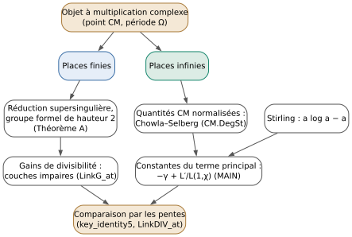
Ce tableau dit d’où vient chaque terme, et non seulement qu’un chemin
existe dans le graphe. Ce qui reste à lire, ce sont les preuves du
transport, numGood_of_famQ et les bornes par pages, dont le
chemin est donné en partie II (« Cinq points éclaircis »).
Des degrés CM aux bornes de réseau : l’étape des
pages. Le chemin de la formule CM vers la division passe par
des « bornes par pages » (partie II). Le squelette de la preuve, lu avec
trace_app.py --outline, en isole l’étape centrale, que l’on
peut reconstruire entièrement. À l’étage \(j\), notons \(K\) le corps de coefficients, de degré
\(\delta\) ; \(V\) l’espace des formes paraboliques ;
\(M\subset V\) un réseau ; \(S_\sigma(F)\) la taille de \(F\) au plongement \(\sigma\), et \(\mathrm{meanLogSup}(F)=\frac1\delta\sum_\sigma\log
S_\sigma(F)\) ; \(W\subset V\)
le noyau commun des fonctionnelles « coefficient du jet en un point CM »
(c’est exactement ce que disent KillQ et
DetectQ) ; et \(Q=M/(M\cap
W)\), de rang \(\rho\). Une
fonctionnelle \(\varphi\) est
numériquement bonne (NumGood) s’il existe
une droite hermitienne \(N\), de degré
normalisé \(\le B_{\rm deg}\), telle
que \(\varphi(M)\subset\mathfrak
b^{-1}I_N\) aux places finies, avec \(\mathfrak
b=\prod_\lambda\lambda^{b(\lambda)}\), et \(\|\varphi(F)\|_{N,\sigma}\le e^{C_{\rm
arch}}S_\sigma(F)\) aux places infinies.
La reconstruction se fait en deux temps : un lemme de séparation, qui fournit des fonctionnelles indépendantes sur un corps commun, puis une borne de quotient par un argument de déterminant sur ce corps.
Lemme (séparation). Soient \(W\subset V\) comme ci-dessus et \(\mathcal F\) une famille de formes \(K\)-linéaires \(V\to K_1\), à valeurs dans des extensions finies \(K_1\) de \(K\). Supposons que (1) toutes s’annulent sur \(W\) ; (2) tout vecteur de \(V\setminus W\) est détecté par au moins une d’entre elles ; (3) la famille est stable par plongement de corps au-dessus de \(K\). Alors il existe une extension finie galoisienne \(L/K\) et \(\rho=\dim_K(V/W)\) formes de \(\mathcal F\), plongées dans \(L\), dont les prolongements \(L\)-linéaires induisent un isomorphisme \(L\otimes_K(V/W)\simeq L^\rho\).
Démonstration. Si \(\rho=0\), il n’y a rien à démontrer. Sinon, on extrait un nombre fini de formes dont le noyau commun sur \(K\) est \(W\), en diminuant la dimension du noyau à chaque étape grâce à (2). On prend une extension galoisienne \(L\) contenant leurs corps de valeurs, et l’on ajoute toutes leurs conjuguées, ce que (3) permet. Le noyau commun de leurs prolongements dans \(L\otimes V\) est stable par Galois, donc provient par descente d’un sous-espace de \(V\) ; par (2), ce sous-espace est \(W\). Les prolongements engendrent donc le dual de \(L\otimes(V/W)\), et l’on en extrait \(\rho\) indépendants. \(\square\)
La condition (3) n’est pas décorative. La seule forme \(\varphi(x,y)=x+\sqrt2\,y\), à valeurs dans \(\mathbb Q(\sqrt2)\), détecte tout vecteur non nul de \(\mathbb Q^2\), mais son prolongement à \(\mathbb Q(\sqrt2)^2\) a un noyau de dimension 1 : une famille qui détecte sur \(K\) ne détecte pas nécessairement après extension des scalaires. Sa conjuguée \(x-\sqrt2\,y\) répare le défaut.
Proposition (borne de quotient). Supposons les formes du lemme numériquement bonnes, pour les mêmes \(\mathfrak b\), \(C_{\rm arch}\) et \(B_{\rm deg}\), les degrés étant normalisés par \(\delta_L=[L:\mathbb Q]\). Notons \(Q_L=\mathcal O_L\otimes_{\mathcal O_K}Q\) le réseau étendu, distinct du quotient vectoriel \(V/W\) et de son extension \(L\otimes_K(V/W)\), et \(b(\mathfrak P)=e_{\mathfrak P/\mathfrak p}\,b(\mathfrak p)\) l’exposant étendu de l’idéal des dénominateurs, pour \(\mathfrak P\mid\mathfrak p\). Alors, pour toute famille \(t_1,\dots,t_\rho\in M\) dont les images engendrent \(V/W\), le quotient \(Q_L/\sum_i\mathcal O_Lt_i\) a des longueurs locales \(\ell_{\mathfrak P}\le n(\mathfrak P)+\rho\,b(\mathfrak P)\) aux places \(\mathfrak P\) de \(L\), avec \[\frac1{\delta_L}\sum_{\mathfrak P}n(\mathfrak P)\log N\mathfrak P\;\le\;\sum_{i=1}^\rho\Big(\mathrm{meanLogSup}(t_i)+C_{\rm arch}+B_{\rm deg}+\tfrac12\log\rho\Big),\] la somme portant sur les places finies \(\mathfrak P\) de \(L\).
Démonstration. Soient \(\varphi_1,\dots,\varphi_\rho\) les formes du lemme. L’application \(\Phi=(\varphi_k)\) est injective sur \(L\otimes_K(V/W)\), donc sur \(Q_L\), et la matrice \(A=(\varphi_k(t_i))\) est inversible. Son déterminant \(\Delta\) est une section non nulle de la droite \(\bigotimes_kN_k\) sur \(L\), de degré normalisé \(\le\rho B_{\rm deg}\). Aux places finies, \(\Phi(Q)\subset\bigoplus_k\mathfrak b^{-1}I_{N_k}\) : la longueur de \(Q/\langle t\rangle\) en \(\mathfrak P\) est au plus \(\mathrm{ord}_{\mathfrak P}\Delta-\mathrm{ord}_{\mathfrak P}\big(\bigotimes I_{N_k}\big)+\rho\,b(\mathfrak P)\), et l’on note \(n(\mathfrak P)\) la somme des deux premiers termes. \(n(\mathfrak P)\) peut être négatif, mais \(n(\mathfrak P)+\rho\,b(\mathfrak P)\), qui majore une longueur, ne l’est pas ; on ne remplace pas \(n\) par sa partie positive, ce qui fausserait la formule du produit. La formule du produit sur \(L\) donne \(\frac1{\delta_L}\sum_{\mathfrak P}n(\mathfrak P)\log N\mathfrak P=\widehat{\deg}_n\big(\bigotimes N_k\big)+\frac1{\delta_L}\sum_\sigma\log\|\Delta\|_\sigma\). Le premier terme est \(\le\rho B_{\rm deg}\). Pour le second, l’inégalité de Hadamard majore \(\|\Delta\|_\sigma\) par le produit des normes des colonnes de \(A\), chacune au plus \(\sqrt\rho\,e^{C_{\rm arch}}S_\sigma(t_i)\). \(\square\)
Pourquoi changer de corps ne coûte rien. Une extension de DVR de ramification \(e_{\mathfrak P/\mathfrak p}\) multiplie la longueur d’un module fini par \(e_{\mathfrak P/\mathfrak p}\) : la longueur de \(Q_L/\sum_i\mathcal O_Lt_i\) en \(\mathfrak P\) est \(e_{\mathfrak P/\mathfrak p}\) fois celle de \(Q/\langle t_i\rangle\) en \(\mathfrak p\), comme \(b(\mathfrak P)=e_{\mathfrak P/\mathfrak p}b(\mathfrak p)\). Comme \(\log N\mathfrak P=f_{\mathfrak P/\mathfrak p}\log N\mathfrak p\) et \(\sum_{\mathfrak P\mid\mathfrak p}e_{\mathfrak P/\mathfrak p}f_{\mathfrak P/\mathfrak p}=[L:K]\), la somme pondérée et normalisée \(\frac1{[L:\mathbb Q]}\sum_{\mathfrak P}\ell_{\mathfrak P}\log N\mathfrak P\) est égale à la somme correspondante sur \(K\). La borne obtenue sur \(L\) est donc une borne sur \(K\).
Ce que fait l’export. C’est un argument de
déterminant à la Siegel, où les fonctionnelles sont des dérivées en des
points CM. NumGood porte sur une forme
φ : V →ₗ[K] K₁ à valeurs dans un corps de nombres \(K_1\) quelconque, avec des longueurs
comptées aux places de \(K_1\) (indice
de ramification compris) et des degrés normalisés par \([K_1:\mathbb Q]\) ; DetectQ
quantifie sur tous ces \(K_1\). Le
lemme de séparation est FreeQuotientRank.kerCore_holds (19
621 lignes propres), démontré par clôture normale du compositum et
descente galoisienne (GaloisDescentStatement). Le pont
qbridge_of_numGood démontre la condition (3) pour
NumGood (témoin comp (AlgHom.toLinearMap e) f)
et conclut QBridgeAt, qui contient exactement les
hypothèses de la proposition sur un corps commun. Les constantes
coïncident : l’hypothèse du pont est « hauteur de \(t_i\) \(+\,C_{\rm
arch}+B_{\rm deg}+\frac12\log\rho\le\) borne visée », et la
constante finale de qat_of_kill_detect est \(C_c=C_h+3C_0+C_d\) (\(C_h\) pour les hauteurs des \(t_i\), \(3C_0\) pour les trois bornes archimédiennes
de RoomAt, \(C_d\) pour
\(\log\dim\)). Le lemme et la
proposition sont des reconstructions indépendantes : les preuves Lean de
kerCore_holds et de l’étape du déterminant
(qat_of_bridge') ne sont pas lues ligne à ligne. Une
première version de cette reconstruction avait omis le changement de
corps ; le contre-exemple ci-dessus l’a révélé, et l’export montrait que
le lemme de séparation y pourvoit (article, § 7.4). Ce qui reste est
l’existence de fonctionnelles CM numériquement bonnes,
avec \(B_{\rm deg}\) relié à \(\frac12\log\Omega\) par le théorème CM
(cmArcDatumFamily_functional_bounded_linear_on_cuspForms,
numGood_of_famQ).
Le côté archimédien est lourd, à l’inverse du côté \(p\)-adique :
| Organe | Poids dominé |
|---|---|
Borne de covolume (topCovolSlim2_use_alt_alt,
Arakelov) |
7,1 % |
Quasi-orthogonalité (théorème S,
CarrierGap.offDiag) |
1,4 % |
Familles de groupes définis et masses
(hypotheses_nonempty_of_unramified_exponents_alt, qui livre
SiegelMassRatioCM) |
≈ 15 %, à l’intérieur des 36 % de fabrication |
Formule de pente par longueurs locales
(placesF_min') |
196 000 lignes |
| Division, arrondi, pentes (mécanisme) | ≈ 0,1 % |
Le contraste a la même source que le § 5.2 ⟦I⟧. Une borne \(p\)-adique peut être approchée, puisqu’il suffit de minorer des valuations. Une taille archimédienne doit être exacte, et l’exactitude coûte : des formules de masse démontrées en entier, une formule de Petersson quantitative, la géométrie d’Arakelov des variétés de Shimura.
Réponse à la question 4. La divisibilité permet de diviser un réseau source tout en préservant l’intégralité d’une application de périodes. Une inégalité de pentes borne cette division en fonction des normes et des volumes cibles. Les masses de Siegel, les périodes CM et les formules de normes fournissent des expressions précises du côté archimédien. Comme pour Stirling, leur précision permet la compensation des termes principaux. Dans le cas réel, l’export l’établit : la taille de la dérivée \(a\)-ième renormalisée, \(a!\,\Omega^{-a}\), donne \(a\log a-a\) par Stirling et \(-\gamma+L'(1,\chi)/L(1,\chi)\) par une formule de Chowla–Selberg pour la hauteur CM (
CM.DegSt), etkey_identity5assemble ces termes enMAIN. Une fois cette compensation obtenue, on a transformé la question sur les zéros en une question sur la somme des pertes. C’est le rôle annoncé du § 6.
Transition. Après simplification du terme principal,
il reste une inégalité entre des fluctuations et des
pertes. Les pertes ont deux sources, que l’on a déjà
rencontrées : le coût fixe, réparti sur les \(m\) couches (la dent de scie, les \(O(\log a)\)), et le coût marginal de chaque
relèvement (les dénominateurs \(\mathrm{dG}_j\), les termes \(C\,m\,L\) de Count_at). Le §
4.1 a montré, chez Stepanov, comment un coût amorti et un coût marginal
s’équilibrent. La question 5 fait le même calcul pour la chaîne, et
montre pourquoi le résultat est exactement \(\sqrt x\).
Le § 5 a laissé une inégalité débarrassée de son terme principal : fluctuations ≤ pertes. Tout dépend maintenant de la taille des pertes, et celle-ci dépend d’un paramètre libre, la longueur \(m\) de la chaîne. Une chaîne trop courte ne gagne pas assez de couches. Une chaîne trop longue accumule trop de pertes. Ce paragraphe montre que l’optimum donne \(\sqrt x\), que le code impose exactement cet optimum, et surtout qu’une borne unilatérale avec un exposant strictement inférieur à 1/2 est incompatible avec les zéros connus : l’exposant ½ n’est pas un accident d’optimisation.
Chez Stepanov (§ 4.1), la borne valait \(p/2+\frac{m+1}2\big(p/a+a\big)\). Il y a un coût fixe \(p\), payé une fois et réparti sur les \(a\) ordres d’annulation, et un coût marginal qui croît avec \(a\), parce que la \(k\)-ième dérivée ajoute \(k\,m\) au degré des conditions. L’inégalité arithmético-géométrique fait le reste : \[\frac{F}{a}+c\,a\;\ge\;2\sqrt{cF},\qquad\text{avec égalité pour }a=\sqrt{F/c}.\] Si le coût fixe est de l’ordre de la taille du problème (\(F\approx p\)) et le coût marginal de l’ordre de 1 (\(c\approx1\)), l’erreur optimale est \(\sqrt p\). C’est toute l’arithmétique du ½. Il reste à vérifier que la chaîne de relèvements a exactement cette forme.
Le contrat de comptabilité. Le mécanisme est écrit
sous la forme d’un théorème de comptabilité,
each_unit_bound_statement, qui démontre
PointwiseBoundVariant D C X''. Ses onze hypothèses portent
sur un même record de données. Pour chaque translaté, il conclut \(\mathrm{ASK}\le\mathrm{MAIN}+\mathrm{ErrX5at}\).
Le ch. 58 de l’exposition de Nelson pour la route d’origine [Ne0] décrit
ce même bilan, et l’expérience E17 du carnet raccords.md en
identifie les prédicats sur l’export ainsi que l’interface de
linkCore qui fournit chacun d’eux. Deux problèmes se
séparent alors. Le problème de fabrication consiste à
réaliser simultanément ces hypothèses. Le problème de
comptabilité consiste à en déduire le bilan,
indépendamment de la manière dont elles sont obtenues.
Notations : \(S=\mathrm{ASK}\) (la somme des \(P_{t,w_j}(a_t)\)), \(\Gamma\) le gain total net, \(\mathcal L\) les termes locaux communs, \(E_u\) les termes locaux de niveau et tordus, \(A=\sum_ta_t\), \(h_u\) la hauteur de l’application de périodes, \(T_u\) le premier auxiliaire, \(\mu_R=\mu(R^\vee)\) la pente du réseau cible, \(\mu(N_u)\) et \(\mu(M_u)\) celles des réseaux source et de base. Les \(e_i\) sont des majorants d’erreurs, non les exposants de pertes de la fenêtre.
| Nelson | Prédicat Lean | Ce qu’il borne | Interface de linkCore |
|---|---|---|---|
| A1 | LossBounds |
\(S-\Gamma\) et l’excès de colongueur \(I\) | LossFS |
| A2, A2⁺ | QuotientSlopeBoundsWith |
pente moyenne de \(N_u\) minorée, pente maximale majorée | SlopesNF |
| A3 | SlopeIneq, HHBound,
FParams |
théorème des cadres : \(\mu_R\) minorée par la pente moyenne des sources | FrameF, LatF |
| A4 | DIV |
\(\mu_R+h_u-\mathcal L\) majorée par Stirling, la période CM et \(\log T_u\) | LinkDIV |
| A5, A5⁻ | EComp5 |
\(\lvert E_u-mAg\rvert\le c\,mB_0\) | LinkDIV |
| A6, A6′ | Count5 |
\(\log T_u\) minoré ; ses variations et sa majoration | CountF |
| A7, A7⁺ | Slopes |
\(\mu(M_u)\) minorée ; \(\mu_{\max}(M_u)\) majorée | SlopesMF |
| H | HComp |
écart des \(h_u+A\log T_u\) entre mots | LinkDIV |
| signes | HidaSetting |
positivité des paramètres | — |
Le HidaSetting du record n’est qu’un paquet de
conditions de signe, sans rapport avec le cadre de Hida du Théorème B
des arcs. Trois entrées, la borne de division, les termes locaux et
l’écart des hauteurs, sortent du même lien, LinkDIV.
La compensation. Écrivons \(P=m\sum_t\varphi(a_t)-mA\log\Omega\), avec \(\varphi(t)=t\log t-t\), et \(Q=\sum_j\frac1f\sum_\rho\log\frac{w_j(\rho)v}\pi\). Sous forme simplifiée, les entrées utiles s’écrivent :
| Inégalité | |
|---|---|
| A1 | \(S\le\Gamma+e_1\) |
| A2 | \(\mu(M_u)+\Gamma+\mathcal L-E_u-e_2\le\mu(N_u)\) |
| A3 | \(\langle\mu(N)-h\rangle-e_3\le\mu_R\), en moyenne sur les mots, pondérée par les rangs \(d_u\) |
| A4 | \(\mu_R+h_u-\mathcal L\le P-A\log T_u+e_4\) |
| A5 | \(E_u\le mAg+e_5\) |
| A6 | \(\log T_u\ge Q+mg-e_6\) |
| A7 | \(\mu(M_u)\ge-e_7\) |
Par A1, A2 et A7, \(S\le\mu(N_u)-\mathcal
L+E_u+e_1+e_2+e_7\) pour chaque mot. En moyenne sur les mots,
puis par A3, \(S\le\mu_R+\langle
h\rangle-\mathcal L+\langle E\rangle+e_1+e_2+e_3+e_7\). A4,
moyennée, remplace \(\mu_R+\langle
h\rangle-\mathcal L\) par \(P-A\langle\log T\rangle+e_4\) : les
hauteurs se compensent. Enfin A5 et \(A\) fois A6 donnent \(-A\langle\log T\rangle+\langle
E\rangle\le-AQ+Ae_6+e_5\) : le niveau \(mAg\) disparaît. Au total, \[S\;\le\;P-AQ+e_1+e_2+e_3+e_4+e_5+Ae_6+e_7
.\] Par l’identité de compensation (§ 5.5 ; E1,
key_identity5), \(P-AQ=\mathrm{MAIN}\), puisque \(\log v\) et \(\log\pi\) s’éliminent : le terme
principal apparaît avec son signe. C’est le Théorème 58.1.1 de
Nelson, dérivé comme le font ses exercices 58.1.1 à 58.1.4, et le
certificat est la combinaison \((1,1,1,1,1,A,1)\) des sept lignes. La
preuve Lean suit ce chemin (carnet, E19). Elle ne passe pas par une
inégalité A3 séparée : Ga_bound5 minore le seuil \(s=\langle\mu(N)-h\rangle\) par \(\Gamma+\mu_R-\dots\) à partir de A2 et A4 à
A7 (s_lower5), le majore par \(\mu_R+\dots\) par le théorème des cadres
(SlopeIneq), et la pente cible \(\mu_R\) se compense. Sa
conclusion, \(\mathrm{ASK}\le\mathrm{Main}+\mathrm{ErrX5at}\),
a pour erreur ErrX5at exactement la somme des erreurs des
entrées, avec le multiplicateur \(A\)
sur celle de A6.
Réserves. (i) A3 est utilisée sous la forme du théorème des
cadres, \(s-\log\lvert\mathcal
W\rvert-(1-\delta_F)^{-1}\big(4u_F\log(1+Z/u_F)+(\eta_F+4\sqrt{e_F})Z\big)\le\mu_R\).
Nelson (exercice 59.1.5) en déduit la forme moyennée, avec \(e_3=\log\lvert\mathcal
W\rvert+8\log(1+x^{C_H})(U+b)+12b\), à condition que \(u_F\le U\). Cet étalement est borné par
u_function_le_mean grâce à l’écart des hauteurs
HComp ; sans lui, il ne l’est pas (exercice 59.1.6). (ii)
La dérivation est lue au niveau des énoncés intermédiaires ; les preuves
de s_lower5 et de u_function_le_mean ne sont
pas lues ligne à ligne. (iii) Les coefficients réels des \(e_i\) sont ceux du record, rappelés en E17
; l’exposant final reste celui du § 6.4.
Le crochet. Le théorème
Deduction.ch_top (129 861 lignes propres) majore l’écart
total entre la somme de premiers et son terme principal, sommé sur les
colonnes \(t\) et les relèvements \(j<m\) : \[\sum_{t}\sum_{j<m}\big(\mathrm{ASK}-\mathrm{MAIN}\big)\;\le\;x^{C\varepsilon}\cdot\mathrm{errorBracketSizeWindows},\]
avec, mot pour mot dans l’export,
errorBracketSizeWindows x ε n nT nT2 m b k a
= nT·a·(1 + m²/k) + m·( 2·n·m·b·x^ε + nT2·k·b·x^ε / (n·(n·x^(−ε))) ).Il y a \(n_T\,m\) termes, chacun de
taille naturelle \(b\). Divisons le
crochet \(\mathcal E\) par \(n_Tmb\) : \[\frac{\mathcal E}{n_Tmb}=\frac
a{mb}+\frac{am}{kb}+\frac{2n}{n_T}\,m\,x^\varepsilon+\frac{n_{T2}}{n_T}\,\frac
k{n^2}\,x^{2\varepsilon}.\tag{E}\] Avec \(a\le2xb\), \(n_T\ge n\,x^{-\varepsilon/8}/2\) et \(n_{T2}\le n\) (SizeWindows,
d’où \(n_{T2}/n_T\le2x^{\varepsilon/8}\)), cela
donne \(x^{O(\varepsilon)}(x/m+xm/k+m+k/n^2)\). Les
contraintes \(k\ge xm\) et \(k\le n^2x^{1/2-\varepsilon}\), dont
l’intervalle n’est non vide que si \(xm\le
n^2x^{1/2-\varepsilon}\), ramènent alors l’erreur par
terme, à \(x^{O(\varepsilon)}\) près, à \[\text{erreur
normalisée}\;\lesssim\;\underbrace{\frac{4x}{m}}_{(1)}+\underbrace{4m}_{(2)}+\underbrace{2\sqrt
x}_{(3)} .\]
Chaque terme a une origine identifiable, et chacun a son équivalent chez Stepanov.
core_ineq) :
ce sont des propriétés du réseau, payées une fois, alors que la somme de
premiers est comparée \(m\) fois
(partie II, « Cinq points éclaircis »). Réparti sur les \(m\) relèvements, il devient \(x/m\). Le facteur \(1+m^2/k\) serait dangereux si \(m^2\) dépassait \(k\). C’est exactement ce qu’empêche la
contrainte \(k\ge x\,m\) de
Win_at : elle donne \(m^2/k\le
m/x\le1\). Voilà à quoi sert le rang de base
gigantesque, \(k\ge
x^{3/2-\varepsilon}\).exponent_le_upper), où le budget par relèvement vérifie
lui-même \(B_0\le2\,n\,m\,b\,x^\varepsilon\)
(BNBoundsU ; partie II, « Cinq points éclaircis »). Chez
Stepanov, la \(k\)-ième dérivée coûte
\(k\,m\) conditions. Ici, le \(j\)-ième relèvement opère en rang \(k+j(t+1)\), qui croît linéairement avec
\(j\) ⟦I⟧. Que ces pertes restent
petites après sommation sur toutes les places (nombre de places, degrés
locaux, poids, facteurs \(f\) et \(N\)) n’est pas reconstruit ici.RestSize). Les paramètres sont calibrés pour que
rien ne dépasse \(\sqrt
x\).Comme \(x/m+m\ge2\sqrt x\),
l’optimum est \(m=\sqrt x\). Le code
impose précisément la fenêtre (Win_at,
RestSize) \[x^{1/2-\varepsilon}\;\le\;m\;\le\;x^{1/2+\varepsilon/2},\]
et l’erreur vaut alors \(x^{1/2+O(\varepsilon)}\).
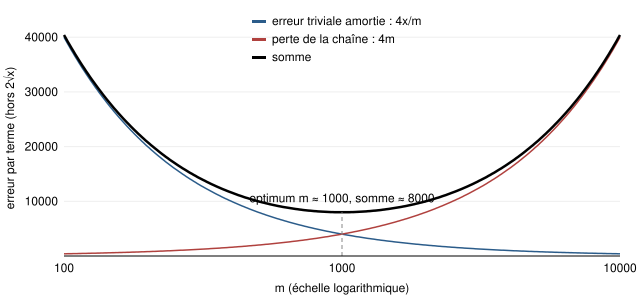
Attention : \(m\) est la longueur de la chaîne, pas le rang des réseaux. Le rang de base \(k\) vérifie \(k\ge x\,m\), soit au moins \(x^{3/2-\varepsilon}\) puisque \(m\ge x^{1/2-\varepsilon}\).
Faisabilité des exposants. L’optimisation du majorant réduit ne dit pas encore que les paramètres sont admissibles. Écrivons \(m=x^\alpha\), \(k=x^\kappa\), \(n=x^\nu\), et demandons que chacun des quatre termes \(x/m\), \(xm/k\), \(m\), \(k/n^2\) soit au plus \(x^\theta\) : \[1-\alpha\le\theta,\qquad1+\alpha-\kappa\le\theta,\qquad\alpha\le\theta,\qquad\kappa-2\nu\le\theta.\] Pour \(\theta=\tfrac12\), la première et la troisième contrainte (\(1-\alpha\le\theta\) et \(\alpha\le\theta\)) imposent \(\alpha=\tfrac12\), puis \(1\le\kappa\le2\nu+\tfrac12\) : le modèle seul se contente de \(\nu\ge\tfrac14\). Mais la fenêtre effective \(xm\le k\le n^2x^{1/2-\varepsilon}\) impose \(\kappa\ge\tfrac32\), donc \(\nu\ge\tfrac12+\tfrac\varepsilon2\). La construction choisit beaucoup plus grand, \(n\asymp x^{2+8\varepsilon}\), et [R2] rapporte \(k\asymp x^{9/2+10\varepsilon}\), d’où \(k/n^2\asymp x^{1/2-6\varepsilon}\) : la contrainte \(k/n^2\) est satisfaite avec marge, et ce sont donc d’autres contraintes de la fabrication, non reconstruites, qui fixent la taille de l’hôte. Ce calcul ne montre ni que ces paramètres sont admissibles dans Lean, ni qu’un exposant serait une obstruction pour toute autre méthode ; un programme linéaire sur les exposants des contraintes effectivement extraites dirait lesquelles sont actives.
Les fluctuations observées et le seuil analytique. On calcule \(G(y)\) directement sur les premiers jusqu’à \(10^7\), et on le compare à la formule explicite du § 1.2, réduite aux dix premiers zéros de ζ :
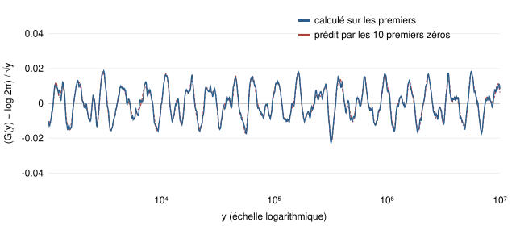
La constante \(\log2\pi\) vient du résidu en \(s=0\) pour ζ. Chaque zéro \(\rho=\frac12+i\gamma\) contribue une onde \(-2\,\mathrm{Re}\,y^{\rho}/(\rho(\rho-1))\), d’amplitude \(\approx2\sqrt y/\gamma^2\). Elles ne s’éteignent pas : ζ a une infinité de zéros sur la droite critique (Hardy), et \(G(y)/\sqrt y\) ne tend pas vers 0. Pour \(\psi\) lui-même, Littlewood montre même \(\psi(x)-x=\Omega_\pm(\sqrt x\,\log\log\log x)\). Une borne globale \(O(y^{\theta})\) avec \(\theta<\tfrac12\) est impossible, puisque les zéros sur la droite critique donnent des pôles de la transformée de Mellin de \(G\).
Contre-exemples : d’autres équilibres. Supposons une méthode de même forme, avec un coût fixe \(x\) et une perte marginale en \(m^\beta\). Pour \(\beta>0\), l’échelle optimale est \(m\asymp x^{1/(1+\beta)}\), et l’erreur vaut \(x^{\beta/(1+\beta)}\). Par Landau (§ 1.4), une erreur \(x^\theta\) exclut les zéros de partie réelle \(>\theta\).
| Perte par relèvement | Échelle de \(m\) | Erreur | Ce qu’on démontrerait, si ce modèle était un budget global valide |
|---|---|---|---|
| \(m^{1/2}\) | \(x^{2/3}\) | \(x^{1/3}\) | incompatible avec les zéros critiques : une hypothèse du modèle (ou la réduction analytique) doit échouer |
| \(m\) (Alpöge) | \(x^{1/2}\) | \(x^{1/2}\) | GRH |
| \(m^2\) | \(x^{1/3}\) | \(x^{2/3}\) | seulement l’absence de zéros pour \(\operatorname{Re}s>2/3\) |
| constante | tout \(m\gtrsim x\) (l’infimum est la constante) | \(O(1)\) | incompatible avec les zéros critiques, sous la même réserve |
Si l’on varie simultanément les deux coûts, le modèle général \(x^\alpha/m+m^\beta\) (avec \(\alpha,\beta>0\)) possède un minimum de l’ordre de \(x^{\alpha\beta/(1+\beta)}\), pour \(m\asymp x^{\alpha/(1+\beta)}\). Par exemple, \(\alpha=3/4\), \(\beta=2\) donnent aussi l’exposant \(1/2\). La linéarité n’est donc pas une nécessité universelle. Elle est décisive dans l’architecture particulière où le coût fixe est de l’ordre de \(x\), et où les autres termes sont déjà au plus de l’ordre de \(\sqrt x\). Dans le crochet réel, le terme supplémentaire en \(\sqrt x\) reste présent : on ne peut conclure à une contradiction en optimisant seulement les deux autres termes.
L’optimalité de l’exposant est une question différente. Une borne unilatérale de la forme \(G(y)=O(y^\theta)\) ou \(G(y)\le Cy^\theta\), avec \(0<\theta<1/2\), contredirait le critère de Landau et l’existence de zéros de ζ sur la droite critique. Cela donne un argument analytique, indépendamment de la figure et de l’analogie avec Littlewood pour la somme non lissée. Les données numériques aident à voir la fluctuation, mais ne sont pas la preuve de cette obstruction.
Une seule singularité suffit même à exclure \(G(y)=o(\sqrt y)\). Pour un zéro \(\rho=\frac12+it\), la transformée \(\int_1^\infty G(y)y^{-s-1}dy\) a en ρ un pôle de résidu non nul ; donc \(h\int_1^\infty G(y)y^{-\rho-h-1}dy\) tend vers ce résidu quand \(h\downarrow0\). Si l’on avait \(G(y)=o(\sqrt y)\), cette quantité serait \(h\cdot o(1/h)\to0\) : contradiction. L’argument n’utilise aucune donnée numérique.
La troisième ligne du tableau montre aussi ce qui sépare GRH d’une
simple région sans zéros. Avec une perte quadratique par relèvement, si
tous les autres contrôles restaient valides, le modèle donnerait une
région sans zéros \(\operatorname{Re}s>2/3\), ce qui serait
déjà un résultat nouveau. La linéarité de la perte par
relèvement est ce qui fait de la méthode une preuve de GRH ⟦I⟧.
C’est pourquoi le contrôle des pertes (LossFS,
exponent_le_upper) est un point sensible de la
construction.
La borne obtenue n’est pas \(\sqrt
x\), mais \(x^{1/2+O(\varepsilon)}\). Les pertes
logarithmiques (\(b=e^{x^\varepsilon}\), \(\log T\), les marges \(x^{\varepsilon}\)) et la largeur de la
fenêtre de \(m\) coûtent des facteurs
\(x^{O(\varepsilon)}\). Sur l’export,
le lemme inconditionnel level_gm_le_on_family_scales (337
déclarations propres) convertit la chaîne en \[G_\psi(x)\;\le\;x^{1/2+(e_D+e_L+7)\varepsilon}\]
sur les fenêtres d’échelles. \(e_D\)
est la perte de division (la constante de LinkDIV), et
\(e_L\) la perte de
LossFS. C’est exactement la majoration encadrée du § 1.6,
avec \(C=e_D+e_L+7\). Ce passage exige
que \(e_D\) et \(e_L\) ne dépendent pas de ε, et c’est ce
que dit l’export : ChebyshevInequalityAtWindowScale s’écrit
\(\exists\,e_D,e_L,\varepsilon_1>0,\
\forall\varepsilon<\varepsilon_1,\ \exists\) une famille…, les
exposants étant fixés avant ε. On fait tendre ε vers 0, et Landau en
fenêtres (§§ 1.4 et 1.5) donne l’absence de zéros pour \(\operatorname{Re}s>\tfrac12\).
L’équilibre lui-même ne coûte presque rien : quelques inégalités
entre paramètres (Win_at, RestSize,
errorBracketSizeWindows). Le ½ est une contrainte
que les objets doivent satisfaire, et non un théorème
difficile. Ce qui coûte, c’est de fabriquer des
familles qui la satisfont : des hôtes de degré \(\approx x^{2+8\varepsilon}\), des rangs
\(k\in[x\,m,x^5]\)
(size_window_at_five), et des pertes par relèvement
linéaires en \(m\). Ces familles
relèvent des 36 % de fabrication (§ 7). La preuve de ch_top
(environ 130 000 lignes) est une comptabilité.
Réponse à la question 5. Le modèle dominant des pertes comporte deux parts, en plus d’un reste contrôlé par les autres contraintes de taille. Un coût fixe, de l’ordre de \(x\), est l’imprécision d’une seule couche de divisibilité, et il est amorti sur les \(m\) relèvements : \(x/m\). Un coût marginal, linéaire en \(m\) par relèvement, est borné dans l’export par un terme en \(m\) ; son lien précis avec la croissance des rangs reste à reconstruire. Leur somme est minimale en \(m=\sqrt x\), où elle vaut \(2\sqrt x\), exactement comme \(p/a+a\) chez Stepanov. Ce ½ n’est pas fortuit. Un zéro sur la droite critique interdit tout exposant strictement inférieur à \(1/2\) (§ 6.3) ; la figure montre les fluctuations jusqu’à \(10^7\), sans le prouver. Dans cette architecture, les deux coûts linéaires permettent d’atteindre cet exposant, avec les autres termes contrôlés. Avec une perte par relèvement quadratique, elle ne démontrerait qu’une région sans zéros.
Le principe des §§ 2 et 5 tient en une ligne. Pour un réseau entier de base \(v_1,\dots,v_n\), de matrice \(A\), la divisibilité minore \(\log|\det A|\) et l’inégalité de Hadamard le majore : \[\sum_pe_p\log p\;\le\;\log|\det A|\;\le\;\sum_i\log\|v_i\|,\] où \(p^{e_p}\) divise \(\det A\). Les colonnes \((1,1)\) et \((1,7)\) donnent \(\det A=6\), divisible par 2 et par 3, et un produit des longueurs \(\sqrt2\cdot\sqrt{50}=10\) ; le déterminant de Gram vaut \(36=6^2\). Avec des familles de vecteurs, l’assemblage final de la preuve est une comparaison du même type, entre trois réels.
L’exercice (d’après P. D. Nelson [Ne], ch. 35). Une famille de \(n\) vecteurs indépendants dans un espace de dimension \(d\), avec \(\tfrac d2\le n\le d\), a un covolume \(c\) et un indice \(\delta\). On suppose \[d(H-3F)\le c+2\delta,\qquad c\le n(H-\rho+F),\qquad \delta\le dI .\] La première inégalité est une borne inférieure : une famille qui engendre presque tout l’espace ne peut pas avoir à la fois un petit covolume et un petit indice. La deuxième est une borne de taille : chaque vecteur est court, d’exposant \(H-\rho+F\), où \(\rho\) est le gain par vecteur. La troisième borne l’indice. Ici \(c\) et \(\delta\) sont des quantités logarithmiques (logarithme du covolume, somme pondérée des longueurs pour l’indice), et l’indice se prend dans un réseau saturé du même rang : on raisonne sur trois réels. Si \(H+F\ge0\), alors \(n\rho\le d(4F+2I)\).
Solution. En enchaînant les trois bornes, \(d(H-3F)\le n(H-\rho+F)+2dI\), donc, exactement, \(n\rho\le d(4F+2I)-(d-n)(H+F)\). Comme \(n\le d\) et \(H+F\ge0\), le dernier terme est négatif ou nul, d’où \(n\rho\le d(4F+2I)\) ; avec \(n\ge d/2\) et \(F,I\ge0\), \(\rho\le8F+4I\). Le gain par vecteur est donc borné par les seules erreurs ; c’est ce qui borne le reste des sommes de premiers.
Contre-exemple. L’hypothèse \(H+F\ge0\) ne peut pas être retirée. Avec \(d=2\), \(n=1\), \(H=-10\) et \(F=I=\delta=0\), la famille \(c=-20\), \(\rho=10\) vérifie les trois bornes, mais \(n\rho=10>0=d(4F+2I)\).
Dans la preuve. La réécriture de Sernau [Se] réalise
ce modèle nom pour nom (carnet, E20). Dans la preuve de
New.star_inequality, \(H\)
est mainAmount, \(F=f\,a\,(\log
b)^4\), \(\rho=m\cdot\mathrm{rem}\) et \(I=10\log(1+2b^2)\cdot f\,a\,(\log b)^3\) ;
le covolume et l’indice sont logarithmiques, l’indice étant pris dans le
réseau cible des formes tordues. Le pas « \(H+F\ge0\) » y figure explicitement
(mainAmount_nonneg), et \(d_T\le2n\) vient de \(4/b^2\le\frac12\). Les rôles :
New.Data.integral_forms_long) ;span_short_integralRamified_eq_top,
indexLe_normalizedPoincare) ;enough_forms, sans rapport
avec le Théorème B des arcs ci-dessus) ;New.star_inequality, soit \(m\cdot\mathrm{rem}\le f\,a\,(\log
b)^5\).Le Théorème C porte 45 % du poids de cette édition, à travers les
bornes de Selmer et la construction de représentations galoisiennes. La
preuve d’origine, celle que lit cette synthèse, assemble autrement. Elle
combine sept inégalités de pentes, notées (A1)–(A7) dans l’exposition de
la route d’origine [Ne0, ch. 58–59], et leur somme donne directement la
borne du § 6.4, \(G_m(x)\le
x^{1/2+9\varepsilon}\)
(ChebyshevInequalityOnWindows). Sur l’export, ces
inégalités sont les onze hypothèses du théorème de comptabilité
each_unit_bound_statement : LossBounds (A1),
QuotientSlopeBoundsWith (A2), SlopeIneq (A3),
DIV (A4), EComp5 (A5), Count5
(A6), Slopes (A7), auxquelles s’ajoutent HComp
(l’écart des hauteurs) et des conditions de signe ; sa conclusion,
ASK ≤ Main + ErrX5at, est la somme \(\sum_{t,j}(P-M)\le e\). Le principe est le
même : une minoration par la divisibilité, une majoration par la taille,
et un gain borné par les erreurs.
Transition. Dans le régime de paramètres de cette construction, le ½ dépend notamment du contrôle linéaire des pertes et de la possibilité de diviser les réseaux. D’autres architectures pourraient atteindre la même précision autrement. Le dernier paragraphe de la partie I dit ce que coûtent ces conditions : les groupes de Tate–Shafarevich à borner, les représentations galoisiennes à construire, et la correspondance de Langlands locale à fournir.
Le mécanisme des §§ 2 à 6 tient en quelques pages. Il ne fonctionne
qu’à trois conditions. Les pertes doivent rester
linéaires en la longueur de la chaîne (§ 6). La
division des réseaux doit être possible sans perdre le
profil gagné (§§ 4.3 et 5.4). Le côté archimédien doit rester
exact (§ 5). Les deux dernières ont été traitées au § 5
(covolume, théorème S, masses). Le reste de la preuve paie trois
factures, qui portent surtout sur la division et sur les objets
eux-mêmes. Sur l’export, elles entrent par le corps hôte et par
LinkN (partie II, graphe des interfaces).
À ce stade, le lecteur peut raisonnablement se demander pourquoi la preuve a besoin de tant de théories. Nous avons écrit quelques inégalités relativement simples, et pourtant leur justification mobilise des millions de déclarations. Il faut imaginer que chaque flèche de l’argument porte des obligations simultanées : non seulement l’opérateur doit exister, mais son image doit avoir le bon rang, son coefficient doit être entier aux places pertinentes, son coût doit être maîtrisé et ses normes doivent être évaluables. Une seule défaillance peut annuler la précision recherchée.
Un modèle de projection. Considérons \(T=\begin{pmatrix}0&1\\0&\ell\end{pmatrix}\) pour un premier \(\ell\). Les valeurs propres sont 0 et \(\ell\), distinctes sur \(\mathbb Q\). Le projecteur sur l’espace propre de valeur \(\ell\) est
\[P=\frac{T}{\ell}=\begin{pmatrix}0&1/\ell\\0&1\end{pmatrix}.\]
Il vérifie \(P^2=P\), mais n’est plus entier. Pourquoi ? Les deux valeurs propres deviennent égales modulo \(\ell\). Il faut diviser par leur différence pour isoler un espace propre. Les opérateurs de Hecke fournissent des systèmes de valeurs propres beaucoup plus riches, et des congruences peuvent rendre l’isolation des formes utilement arithmétiques coûteuse. Le modèle montre pourquoi un dénominateur peut apparaître même si tous les opérateurs de départ sont entiers.
Les représentations galoisiennes permettent, dans de nombreux problèmes automorphes, de traduire des congruences de valeurs propres en informations cohomologiques sur des représentations. Les groupes de type Tate–Shafarevich mesurent alors certaines obstructions ou classes qui satisfont des contraintes locales. Il n’est pas nécessaire de maîtriser ces théories pour comprendre ce qu’on voudrait contrôler : la quantité de divisibilité perdue quand on impose des conditions arithmétiques supplémentaires.
(a) Les dénominateurs de Hecke, et les groupes de
Tate–Shafarevich. Pour isoler les formes utiles, on projette
sur des espaces propres de Hecke. Cette projection ne préserve pas les
réseaux entiers. Ses dénominateurs peuvent venir de
congruences entre systèmes de valeurs propres, et ils
mangent la divisibilité gagnée. Dans de nombreux problèmes automorphes,
ces congruences se lisent sur des extensions de représentations
galoisiennes : c’est la motivation ⟦I⟧ du rôle de Ш,
non une implication générale. Ce que fait la preuve est plus précis :
elle borne la longueur de groupes de Tate–Shafarevich
de torsions de Tate sur l’hôte : \[\sum_\ell\log\ell\sum_{1\le
e<x^{401}}\operatorname{len}\,\mathrm{Sha}^1_\ell\big(E,\mathbb
Q_\ell/\mathbb Z_\ell(-e)\big)\;\le\;\exp(x^\varepsilon/2).\]
C’est l’énoncé exact de l’export (VAt, via
VVle) : les longueurs de Ш sont finies pour toutes les
torsions \(e<x^{401}\), et leur
somme pondérée est au plus \(\exp(x^\varepsilon/2)\). La note d’Alpöge
présente le résultat comme une borne polynomiale en le
conducteur, effective et uniforme en ℓ ; l’énoncé intermédiaire
qui donnerait cette dépendance n’a pas été lu. Elle est obtenue par des
congruences d’Eisenstein sur \(U(3)\) et \(\mathrm{GSp}_4\), à la Ribet et
Mazur–Wiles, avec le système d’Euler de Kato, des bornes de type Soulé
et Ferrero–Washington (\(\mu=0\)). La
partie de parité opposée passe par des nombres de Bernoulli. La
constante 401 borne la plage des torsions. Alpöge : « fight for a
significant weakening of Vandiver ». Cette étape pèse 8 % du volume.
Sur l’export (partie II, graphe des interfaces), cette borne
est fournie avec le corps hôte (VWin, consommée par
supplyChi), et elle apparaît comme terme
vvTerm de LinkN, qui borne la masse des places
tordues dans le budget de perte par relèvement et conditionne la
division. Le passage par les dénominateurs de Hecke décrit ci-dessus est
une lecture ⟦I⟧, que les énoncés n’explicitent pas.
Un modèle exact de pertes d’intégralité. Soit \(R\) un anneau de valuation discrète, d’uniformisante π, de corps résiduel à \(q\) éléments, et \(L\subseteq L'\) deux réseaux de même rang. La forme normale de Smith donne des bases avec \(L'=\bigoplus_iRe_i\) et \(L=\bigoplus_iR\pi^{a_i}e_i\), d’où \[\operatorname{len}_R(L'/L)=\sum_ia_i,\qquad\log|L'/L|=\log q\sum_ia_i.\] Une division par des exposants locaux est donc une perte additive de longueur, et pour une chaîne \(L_0\subseteq\cdots\subseteq L_m\) de même rang, \(\operatorname{len}(L_m/L_0)=\sum_j\operatorname{len}(L_j/L_{j-1})\). Si des modules finis de défauts \(M_w\) s’injectent ensemble dans un module fini \(H\), c’est-à-dire \(\bigoplus_wM_w\hookrightarrow H\), alors \(\sum_w\operatorname{len}M_w\le\operatorname{len}H\). Des injections séparées ne suffisent pas : avec \(H=R/\pi R\) et plusieurs copies \(M_w=H\), chaque injection existe, mais la somme des longueurs dépasse \(\operatorname{len}H=1\). C’est la forme qu’aurait un contrôle des places tordues par des longueurs de Ш : il faudrait un morphisme conjoint, ou payer un facteur de multiplicité explicite. Ce modèle est un mécanisme possible ⟦I⟧ : le morphisme réel (restriction, quotient, groupe de Selmer, ou simple inégalité de comptage) n’a pas été identifié dans l’export.
Ce qu’est le défaut local. La fiche de la donnée
locale (NData) permet d’aller au-delà de la motivation. En
chaque place tordue \(w\), de
caractéristique ℓ, la preuve dispose d’une algèbre de Hecke locale \(T\) agissant sur un module libre \(M\), d’un réseau \(L\subset M\otimes\mathbb Q_\ell\) et d’une
partition de ses systèmes propres en « bons » et « mauvais », d’espaces
propres \(E_{\rm good}\) et \(E_{\rm bad}\). Le défaut
etaLoc est la longueur de \[\big(E_{\rm good}\cap(L+E_{\rm
bad})\big)\big/\big(L\cap E_{\rm good}\big),\] c’est-à-dire le
quotient de la projection de \(L\) sur
\(E_{\rm good}\) par la trace de \(L\) sur \(E_{\rm
good}\) : c’est le module de congruences de
Ribet et Wiles. Sur le modèle ci-dessus, \(T=\begin{pmatrix}0&1\\0&\ell\end{pmatrix}\),
\(L=\mathbb Z^2\), la projection de
\(L\) sur l’espace propre de valeur ℓ
est \(\mathbb Z(1/\ell,1)\), sa trace
est \(\mathbb Z(1,\ell)\), et le
quotient est \(\mathbb Z/\ell\) : le
défaut vaut \(1=v_\ell(\ell-0)\),
exactement le dénominateur du projecteur. La motivation des
dénominateurs de Hecke est donc la définition même de
la quantité que Ш doit borner. La borne locale lue sur l’export
(PairedCharacterConditionAlt) est \[\mathrm{etaLoc}\;\le\;\sum_{\pi\
\text{bon}}\mathrm{mult}(\pi)\Big(\sum_{0<e<t}\operatorname{len}\text{Ш}(\ell,e)+\text{termes
locaux}\Big),\] sous des hypothèses qui font intervenir les
représentations galoisiennes attachées aux systèmes propres et des
caractères \(\chi\cdot\mathrm{cyc}^{-(c-1)}\), torsions
de Tate. Sa preuve passe par la théorie de Hodge \(p\)-adique
(conclusion41_of_pAdicHodge_alt) et la réciprocité d’Artin
; son schéma est celui de la méthode de Ribet ⟦I⟧, où des congruences
produisent des classes de cohomologie dont Ш majore la taille. Elle
n’est pas reconstruite.
Ce que dit le terme de preuve. La borne effective
(etaSum_le) n’est pas une injection conjointe. La masse des
places tordues de l’étage \(j\) est
majorée par des termes de taille, par une somme sur les caractéristiques
résiduelles des places tordues, chaque premier ℓ n’étant compté qu’une
fois, et par \(d_{Z_0}(j)\sum_\ell\mathrm{vvTerm}(\ell)\),
avec \(\mathrm{vvTerm}(\ell)=\log\ell\sum_{1\le
e<t}\operatorname{len}\text{Ш}(\ell,e)\). Ш entre donc une
fois par premier, avec un facteur de multiplicité
explicite \(d_{Z_0}(j)\) :
c’est le second scénario du modèle ci-dessus. Les places concernées sont
celles dont la caractéristique est l’un des deux premiers de l’hôte,
sous une condition de « caractères appariés » qui exige la finitude des
longueurs de Ш (PairedCharacterConditionAlt) ; le lien
entre un défaut local et ces longueurs est dans la preuve de cette
condition, non lue. Par ailleurs, la taille de la borne n’est pas
l’obstacle : avec \(b=e^{x^\varepsilon}\), \(\exp(x^\varepsilon/2)/b=\exp(-x^\varepsilon/2)\),
qui absorbe tout facteur polynomial en \(x\). Cette observation de taille ne dit
rien du mécanisme.
(b) Les représentations galoisiennes. Les congruences demandent des représentations galoisiennes attachées aux formes automorphes polarisées des groupes unitaires, avec compatibilité local-global. Le projet les construit sans la cohomologie étale des variétés de Shimura :
Cette étape pèse 6 % du volume.
(c) La correspondance de Langlands locale, en partie seulement. Elle n’est démontrée qu’en profondeur zéro (théorie de Green des caractères de \(\mathrm{GL}_n(\mathbb F_q)\)), avec des valeurs arbitraires ailleurs. La preuve n’interroge la correspondance qu’en des places où cette version suffit.
Et la fabrication des objets (36 % du volume) : familles d’espaces hermitiens définis aux signatures prescrites, paramètres de séries discrètes, noyaux thêta à coefficients entiers, rationalité des périodes (vecteurs tests, Siegel–Weil), quasi-orthogonalité, covolume.
Fabriquer des gains locaux ne suffit pas ; il faut encore que leurs positions ne se gênent pas le long des orbites de Frobenius. C’est le rôle des ensembles sans relation courte du § 3.5, dont la construction est celle de Behrend : une sélection presque dense (densité \(N^{-c/\sqrt{\log N}}\)) avec peu de collisions structurées. La note d’Alpöge le dit à l’étape 19 : « precise choice of the Iwasawa tower, specifically using Behrend!! ». L’export permet de suivre ce qu’elle préserve, et par quel canal.
Une clause démontrée mais inerte. Le théorème
dropping_proposition_holds fournit un ensemble de positions
\(T_2\) de densité de Behrend, au moins
\(n_0\exp(-C\sqrt{\log n_0\log L})/L\),
sans relation à trois termes. Pour tout translaté et toute orbite assez
longue, toute fenêtre de \(L\)
pas consécutifs en contient au plus deux points, et l’orbite
entière au plus un si elle est courte. Le lemme no_three le
dit négativement : trois puissances consécutives du Frobenius ne tombent
pas toutes sur des places épaisses. Mais ce théorème est
inerte : il entre dans un paquet
(field_lemmas_except_seven) dont les deux consommateurs
n’extraient que d’autres clauses. On l’établit sur l’export en suivant
les projections (carnet, E13).
Le canal effectif. La propriété utile est portée par
un champ de l’hôte, Host.second_set_no_relation. Sur une
orbite longue, elle donne qu’au plus deux places épaisses tombent dans
une fenêtre. Les lettres épaisses se regroupent donc en grappes d’au
plus deux, d’écart au plus \(j\) et
précédées de \(j\) lettres non épaisses
(long_clusters). Ces grappes sont l’hypothèse des « mots de
page » sur l’orbite, dont la profondeur vaut \(\min\{j : l_A\le(l-1)^j\}\). La chaîne
remonte au lien côté Galois (NLinkClose →
linkN), non aux gains LinkG :
la propriété de Behrend ne sert pas à réaliser les poids des gains,
comme le laissait entendre une version antérieure de cette synthèse.
Le Théorème B des arcs. Le lemme sur les mots est le
Théorème B de l’export (ThmB, prouvé par
N.Ln17.thmB_at, 2,7 M lignes), noté ici \(B_{\rm arcs}\) pour le distinguer du
Théorème B de la réécriture de Sernau. Il est lu au niveau de l’énoncé
et du mécanisme. Une lettre est épaisse si sa taille tombe dans
une bande \([b,b+\eta]\). Pour un
morphisme de réseaux cristallins (modules de Wach [Wa]), l’exposant du
morphisme est borné par \(C(n+1)\,r\,(h/l^2+(w+\eta)/l+S+1+\log_l(2h)+\eta\cdot\text{bande})+C\,n\,m\,e'\)
sous l’une de deux hypothèses : soit les orientations alternent et il
n’y a jamais trois lettres épaisses consécutives ; soit l’orientation
est constante et il n’y a jamais \(R\)
lettres épaisses consécutives, auquel cas le terme \(S+1+\log\) est multiplié par \(R^2\). Il faut aussi les conditions de
taille (\(20w,20\eta,20S\le b\), au
moins une lettre non épaisse) et le cadre de Hida : la condition
combinatoire de Behrend ne suffit pas à elle seule. L’orbite se découpe
en arcs, qui finissent à une lettre suivie d’une lettre
non épaisse, et le coût d’un arc est majoré par le carré de sa longueur.
Si le coût d’une grappe de longueur \(r\) est majoré par \(Cr^2\) avec \(r\le R\), le total est au plus \(CR\sum r\) : ce modèle explique le contrôle
linéaire, sans prétendre que le coût réel croît quadratiquement. \(B_{\rm arcs}\) est une borne supérieure,
non une borne inférieure. C’est l’étape « premiers inertes » du lien
LinkN, et les relèvements d’arcs eux-mêmes (théorie des
modules de Wach) ne sont pas lus.
Les noms ci-dessous permettent de retrouver chaque étape dans
l’export. Les pourcentages sont des parts du volume de preuve dominé,
calculées par arbre des dominateurs ; ils ne s’additionnent pas. Ils
mesurent un volume exclusif de dépendances formelles, non une importance
mathématique, et ils sont calculés en lignes de
l’export (les enregistrements d’expressions, partagés dans tout
l’export et attribués à la déclaration qui les introduit ; environ 1,07
milliard pour la fermeture), non en lignes de source. La fermeture de
riemannHypothesis compte 1 468 390 déclarations, celle des
cinq énoncés de Main 1 468 414 (l’export en compte
1 468 418, dont quatre hors de toute fermeture), et allChi
en domine 1 409 557 (96 %).
| Étape (partie I) | Déclarations principales | Poids |
|---|---|---|
| Énoncé, réduction | riemannHypothesis, allChi,
EveryCharacter, imprimitive |
99,3 % (tout) |
| § 1 Landau sur fenêtres | FormB, zeroFreeOn_of_tiedWin_cyc,
level_gm_le_on_family_scales |
< 0,1 % |
| § 3.4 Hôte, paires en moyenne | supplyChi, PairEx,
QH.pair_share, QH.bad_share |
≈ 0,1 % |
| § 3 Théorème A, Dwork | DworkPowerSeriesWeights.thmAGauss,
theorem_A_one_monomial_log_loss, lemmaS,
FormalGroupSystem.Pf.sx_dwork |
≈ 0,02 % |
| § 4 Chaîne et gains | FormalGroupSystem.LowTermBound,
PointsLemma, G.NP, yProd,
gainP, LinkG_at |
≈ 0,1 % |
| § 5 Division, pentes | divClausesR_of, DivIntoDualShift,
mu_diff, Frame_at, HypHigh |
≈ 0,1 % |
| § 5 Théorème S | GlobalTheory.CarrierGap.offDiag |
1,4 % |
| § 5 Covolume | topCovolSlim2_use_alt_alt |
7,1 % |
| § 7 (a) Tate–Shafarevich | VWin := ∀ ψ, VWinAt ψ 401,
vwin_of_row |
8,2 % |
| § 7 (b) Galois | galoisLocalGlobalStrong_recParameter
(Row0b) |
6,3 % |
| § 7 (c) Langlands local | recTExists |
faible |
| § 7 Fabrication | nonempty_hyps_definite_side_of_closed_bound |
35,8 % |
| Cœur automorphe (total) | every_character_of_theta_integrals_local_matching |
41,5 % |
L’arbre des dominateurs donne le poids des organes. Il ne dit pas comment ils communiquent. Pour cela, on lit sur l’export un second graphe, celui des interfaces.
Prop de Formalism.MainNotions, comme
Count_at, LinkG_at ou ChainTied :
207 interfaces.tools/interfaces.py (sortie
: analysis/interfaces.tsv).tools/organes.py,
revindex.py).1. Les organes sont branchés comme hypothèses.
Chaque gros théorème (Ш, covolume, théorème S, masses, Galois) n’est
consommé qu’en un seul point d’entrée : il a un unique
référent direct dans l’export (analysis/points_entree.txt).
Langlands local fait exception : recTExists est interrogé
directement par 25 déclarations, dans les représentations galoisiennes
et la borne de Ш. Le mécanisme ne les appelle pas : il est écrit
sous hypothèses, et les organes sont injectés tout en
haut. Le cœur a pour type
every_character_of_theta_integrals_local_matching :
UnitaryGroupThirdPlaceHypotheses → ThetaLocalInputs → ThetaIntegralsAgree → LocalMatching
→ CovolumeBoundOfX → RecTExists → VWin → EveryCharacterCe sont sept entrées, dont le covolume, Langlands local et Ш. C’est la structure d’un argument « abstrait puis instancié ». Elle explique pourquoi ce qui appartient en propre au mécanisme est si léger dans l’arbre des dominateurs (§§ 2 à 6, moins de 0,5 %) : son sous-arbre dominé ne contient ni les grandes théories injectées en hypothèse, ni ses dépendances partagées, rattachées plus haut.
2. Deux plaques tournantes redistribuent les organes.
supplyChi, § 3.4)
reçoit les paires \((q,d)\) choisies en
moyenne (QH.pair_share → pairEx →
supplyOfAdmOf), les orbites de Frobenius « épaisses » de
Behrend (hostThickExists →
hostOfFieldOf) et la borne de Ш. Celle-ci
est consommée exactement là : zero_free_all_of_green_v_win
applique supplyChi ψ (hV ψ).HypsAlt (46 champs,
produite par nonempty_hyps_definite_side_of_closed_bound,
35,8 %) reçoit le théorème S (champs sO, sLp),
les masses (hG, hU), le Théorème A (par les
lignes servies, hServ), le covolume (bornes L3
des termes, eventual_L3_of_covolume_alt) et Langlands
local.3. Les Link transmettent des inégalités au cœur du
mécanisme. HypsAlt est dépliée en neuf Link
(goal_of_shape_of_hyps, puis topDesWin).
Ceux-ci alimentent les quatorze interfaces de linkCore, qui
conclut ChainTied.
level_gm_le_on_family_scales en déduit l’inégalité de
Tchebychev sur les fenêtres, et Landau conclut.
Les quatorze interfaces de linkCore, lues comme
un bilan de pentes. Elles se lisent comme un seul raisonnement.
Les réseaux en jeu sont, pour chaque mot \(u\), un réseau « membre »
lat_u de formes automorphes, et le réseau \(N_u\) obtenu en l’agrandissant par
division : il contient lat_u.
PlacesF puis SlopesNF : la pente
monte. Passer de lat_u à \(N_u\) change la pente par une somme sur les
places finies, longueurs locales fois \(\log
N(w)\). Le saut principal s’appelle Ga : \[\mathrm{Ga}=\sum_w\mathrm{sz}\Big(w,\
\sum_j\mathrm{gainD}(j,w)-\tau(w)\Big),\] c’est la somme, sur les
places \(w\), des gains locaux
de tous les étages \(j\) moins
un exposant de division \(\tau(w)\). Le
lemme placesF_min' (196 000 lignes) organise ce
calcul.FrameF : la pente est plafonnée. C’est
l’inégalité de pentes, appliquée aux accouplements de périodes \(B_u:N_u\to R^\vee\), à valeurs dans un
réseau cible entier. Elle n’est utile que si la hauteur des \(B_u\) est petite, donc si les \(B_u\) sont presque des isométries. C’est le
rôle d’une condition de quasi-orthogonalité : les
périodes de formes différentes doivent être presque orthogonales (le
théorème S, § 5.4).LatF et SlopesMF : les réseaux de
départ sont sous contrôle. Rangs positifs, dualité du réseau
cible, et pentes des réseaux membres encadrées par \(\pm C|TT|a\,L_a\). C’est le coût fixe du §
6.2.CountF : les tailles archimédiennes.
La taille \(\log T(u)\) d’une colonne
est encadrée par une somme de termes de type Γ, \(\sum_j\frac1f\sum_\tau\log(w_{j,\tau}v/\pi)\),
un terme par étage et par place CM.LossFS : premiers ≤ gains. La somme de
von Mangoldt ASK est majorée par Ga plus une
perte \(C|TT|\,m\,b\,x^{e_L\varepsilon}\).WinF : la fenêtre des paramètres, avec
\(x^{1/2-\varepsilon}\le m\le
x^{1/2+\varepsilon/2}\), \(x\,m\le
k\), etc.CharF : la constante du terme
principal, \(\ell(\psi)=(L'/L)(1,\chi)\), fournie
inconditionnellement par Lnk.char_at.Mis bout à bout, cela donne : \[\mathrm{ASK}\;\lesssim\;\mathrm{Ga}\;\lesssim\;\Delta\widehat\mu\;\lesssim\;\text{(plafond de Bost)}\;=\;\text{(termes archimédiens)}+\text{pertes}.\] Le premier membre est la somme de premiers ; le dernier est calculable sans les premiers. C’est la structure de Tchebychev, \(\sum v_p\log p=\log|M|\le\log H\), réalisée par des pentes.
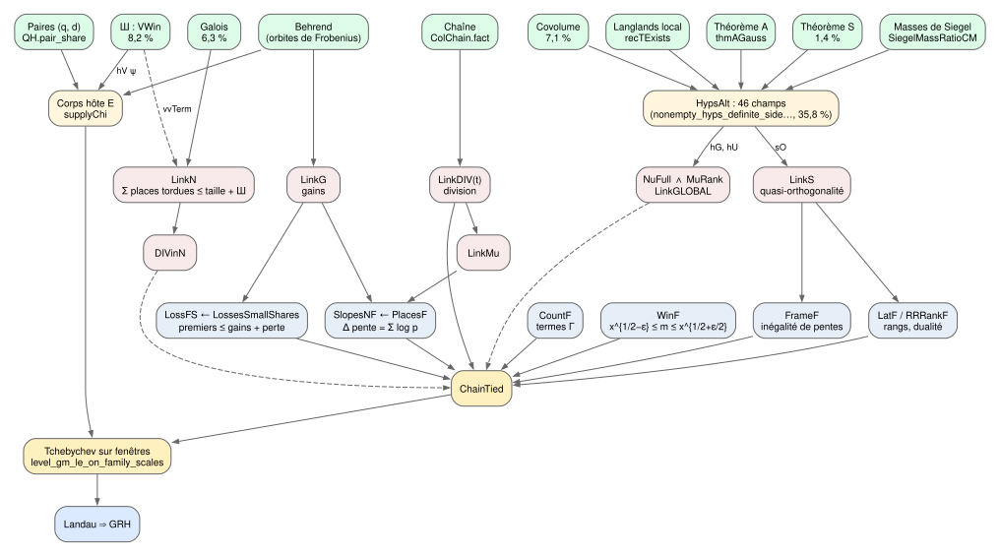
Quelques arêtes, lues telles quelles :
| Arête | Théorème (poids dominé) | Ce qui passe |
|---|---|---|
LinkS → FrameRealF →
FrameF |
frameRealF_of'', frameF_of (231 k) |
la quasi-orthogonalité rend le repère presque unitaire, donc l’inégalité de pentes utilisable |
LinkS → RRRankF, MatKF |
rrRankF_of, matKF_of |
rangs et matrices de la division : la non-dégénérescence |
LinkG → LossesSmallShares →
LossFS |
losses_of_small_share_weight (392 k) |
premiers inertes ≤ gains locaux + perte |
LinkG, LinkMu → PlacesF →
SlopesNF |
placesF_min' (196 k), slopesNF_of |
Δ pente = Σ longueurs locales × log N𝔭 |
LinkDIV → LinkMu |
linkMu_of_linkDIV |
la division fixe les sauts de pente |
LinkN → DIVinN |
divinN_of_hypV |
la borne sur les places tordues conditionne la division |
Galois → LinkN |
linkN_of_twGood_galoisPreconditions (24,8 M
lignes) |
représentations galoisiennes ⇒ LinkN |
ColChain.fact → LinkDIVt |
height_chain_atR → divClausesR_of → … →
linkDIVt_of_bridge_kernel |
la factorisation par la chaîne sert la division |
Behrend → LinkG |
field_lemmas_except_seven →
linkG_fam_noKer (1,3 M) |
les orbites de Frobenius épaisses servent les gains |
La partie I contient plusieurs interprétations, marquées ⟦I⟧. Le graphe des interfaces permet d’en tester certaines. « Soutenue » signifie qu’un chemin de dépendances est établi et que les énoncés lus sont compatibles avec l’interprétation ; cela ne démontre pas que le rôle est exactement celui décrit (niveaux 1 à 3 de l’échelle de validation de l’article). Les flèches de la dernière colonne suivent le flux des résultats vers leur usage, c’est-à-dire le sens inverse du graphe de dépendances.
| Interprétation (partie I) | Verdict | Sur l’export |
|---|---|---|
| La non-nullité passe par la quasi-orthogonalité (§§ 2.4, 5.4) | soutenue | théorème S → LinkS → conditions de rang
(RRRankF, MatKF) et repère presque unitaire
(FrameRealF) → inégalité de pentes |
| Behrend sert les couches impaires des gains (§ 3.5) | soutenue | Behrend.box → orbites de Frobenius épaisses →
LinkG (les gains) et l’hôte |
| La chaîne sert la division (§§ 4.3, 5.4) | soutenue | ColChain.fact → divClausesR_of →
LinkDIVt |
| Les masses donnent des tailles exactes (§ 5) | soutenue | SiegelMassRatioCM (une égalité) → HypsAlt
(hG, hU) → NuFull ∧ MuRank,
LinkGLOBAL |
| Ш contrôle le profil, et par là les pertes (§§ 2.5, 3.6, 6.5, 7) | précisée | Ш entre en deux points : il est fourni avec l’hôte
(supplyChi), et il apparaît comme terme vvTerm
dans LinkN (« somme sur les places tordues ≤ taille + Ш »),
qui conditionne la division (DIVinN). Par
DIVinN, cette masse doit tenir, pour chaque relèvement,
dans le budget \(x^\varepsilon(B_0+N_c)\), celui-là même qui
forme le coût marginal du § 6 (voir ci-dessous). Ш n’entre pas dans
LossFS. La lecture « Ш borne les dénominateurs de Hecke »
reste ⟦I⟧ |
| Le covolume donne la taille calculable sans les premiers (§ 2.5) | non tranchée | le covolume entre dans HypsAlt par des bornes
L3 sur les termes d’une série
(CovolumeBoundThirdPlaceSeries). Son lien avec une
interface précise de linkCore n’est pas établi |
| Théorème A ⇒ gains (§ 3) | précisée | le Théorème A entre par les lignes servies de la sélection
(hServ_of_linkR → allRows_of_open0_alt) et par
le lien admissible tordu de la forme de Green
(closed_family_admissible_twist_link_alt), pas directement
par LinkG |
La correction principale porte sur Ш : dans l’export, il accompagne le corps hôte et protège la division, en bornant la masse des places tordues dans le budget par relèvement. La section suivante suit ce chemin jusqu’au lien de division.
La version 3.0 signalait plusieurs zones obscures : pourquoi la chaîne aide vraiment, d’où vient le terme principal côté archimédien, ce que sont les « places tordues », ce que dit exactement le lien entre premiers et gains, et comment la formule CM atteint la division. Les choix fins de l’hôte, la preuve de Landau en fenêtres et la présence de Rallis sont traités aux §§ 3.4, 1.5 et 5.3. Les énoncés de l’export y répondent en grande partie.
1. L’amortissement. La quantité que borne
Deduction.ch_top est
gapA = Σ_{t ∈ TT} Σ_{j < m} ( ASK(a_t, t, w_j) − Re MAIN(a_t, w_j) )
MAIN(a, w) = a · ( log a − 1 − γ + ℓ(χ) − (1/|Φ|) Σ_{ρ∈Φ} log w(ρ) )ch_balance établit \(\mathrm{ASK}-\mathrm{MAIN}=\mathrm{De}\),
où De est une combinaison, par orthogonalité des caractères
de l’hôte, de sommes de Riesz centrées \(G_\psi\) aux échelles \(a/w\). gapA est donc une somme
de \(n_T\,m\) valeurs de \(G_\psi\) : une par colonne \(t\) et une par relèvement \(j\). Borner une somme ne borne pas
chacun de ses termes : \(\frac12(u_1+u_2)\le1\) n’exclut pas \(u_1=100\), \(u_2=-98\). Le terme de preuve de
core_gm montre comment l’écueil est évité. Le lemme
gmA_eq établit que la combinaison produite par la somme sur
les colonnes, pondérée par \(1/(3o+1)\)
sur les caractères gardés du niveau, est identiquement
Level.Gm, la quantité du § 1.3 : la cible est cette
combinaison à coefficients positifs, celle sur laquelle Landau opère.
Les caractères parasites sont bornés un par un
(sigA_le, par l’hypothèse ponctuelle EAtH.bdG
que fournit le choix des paires, § 3.4), et l’échantillonnage des
colonnes respecte le profil 4 : 3 à \(x^{-1+\varepsilon}\) près
(EAtH.shares).LErr.core_ineq énumère les restes, chacun avec sa
constante. Ceux qui sont en \(n_T\,a\),
sans facteur \(m\), viennent de la
division (cDiv), de la pente des réseaux de départ
(cSlope), de la taille des colonnes (cCount)
et des arrondis : ce sont des propriétés du réseau.
Ceux qui portent un facteur \(m\)
viennent des pertes par relèvement.C’est le mécanisme de Stepanov, lu sur l’export. La somme de premiers est comparée \(m\) fois, mais l’inégalité de pentes ne s’applique qu’une fois au réseau divisé, dont le saut de pente additionne les gains des \(m\) couches (\(\mathrm{Ga}=\sum_w\mathrm{sz}(w,\sum_j\mathrm{gainD}(j,w)-\tau(w))\)). Le coût fixe se répartit donc sur \(m\) termes : c’est le \(x/m\) du § 6.
2. La compensation du terme principal : Stirling plus
Chowla–Selberg. Côté archimédien, l’hypothèse DIV
borne la pente du réseau divisé par \[\sum_t\Big[m\big(\mathrm{ph}(a_t)-a_t\log\Omega\big)-a_t\log
T(u)\Big]+\mathrm{EDiv},\qquad\mathrm{ph}(y)=y\log
y-y,\qquad\log\Omega:=\gamma+\log\frac{\pi}{v}-\ell(\chi).\] Ici
\(v=\mathrm{rd}_E/2\), la moitié du
discriminant racine du grand corps hôte (par définition,
Host.v), et ℓ porte sur le caractère quadratique modulo
\(d\) ; le tableau complet des
normalisations est au § 5.5. Trois ingrédients se lisent dans cette
expression.
Count5 n’est pas
une égalité : il minore \(\log T(u)\)
par \(\sum_j\frac1f\sum_\rho\log(w_{j\rho}v/\pi)+m\,\mathrm{lg}-c_{\mathrm{Count}}(L_a+m^2L_a/k)\)
(la quantité Lam5), et le majore par \(c_{\mathrm{Count}}\,m\,L\). La minoration
suffit, puisque \(\log T(u)\) entre
avec le signe moins.L’identité algébrique key_identity5 vérifie alors \[\mathrm{SDiv}-\mathrm{sumA}\cdot\mathrm{Lam5}+m\cdot\mathrm{sumA}\cdot\mathrm{lg}\;=\;\mathrm{Main}+\mathrm{sumA}\cdot
c_{\mathrm{Count}}\big(L_a+m^2L_a/k\big) :\] la taille
archimédienne reproduit exactement le terme principal,
à une erreur près. Reste à savoir pourquoi \(\log\Omega\), défini comme ci-dessus, est
bien la taille d’une période. C’est le contenu de
GlobalTheory.CM.DegSt, démontré dans le projet
(CM.PureDeg.degSt, fermeture de 114 806 déclarations) :
\[2\,\widehat{\deg}\big(\text{droite propre
d'un objet CM de type
}(1,0)\big)\;=\;\gamma+\log\frac{2\pi}{\mathrm{rd}_E}-\frac{L'(1,\chi)}{L(1,\chi)},\]
où χ est le caractère de Kronecker du corps CM et \(\mathrm{rd}_E\) son discriminant racine. Le
second membre est CM.logOm, écrit avec
LFunction et deriv de Mathlib. C’est
une formule de Chowla–Selberg pour la hauteur : le degré
d’Arakelov d’une droite CM s’exprime par la dérivée logarithmique de
\(L(s,\chi)\) en 1. Elle est construite
à partir d’une courbe elliptique à multiplication complexe par \(\mathbb Q(\sqrt{-d})\), \(d\equiv3\pmod4\) (CMCurve,
réseau \(\mathbb Z+\frac{1+i\sqrt d}2\mathbb
Z\)), et elle entre dans le cœur par
ArcCM.known_holds, sur la branche ontoX de la
fabrication.
Le terme principal \(a\log
a-(1+\gamma)a+a\,\ell(\chi)\) de la somme de premiers est donc
reproduit, côté archimédien, par trois sources indépendantes :
Stirling pour \(a\log
a-a\), Chowla–Selberg pour \(-\gamma+\ell(\chi)\) (à \(\log(\pi/v)\) près, compensé par les termes
Γ), et les termes Γ des colonnes pour la moyenne des
\(\log w\). C’est la réponse précise à
la question 4, au niveau de la compensation symbolique
: les preuves de numGood_of_famQ et des bornes par pages ne
sont pas lues.
3. Le budget par relèvement, les places tordues et
Ш. Le coût marginal a une source explicite :
BNBoundsU impose \(B_0\le2\,n\,m\,b\,x^{\varepsilon}\), où
\(B_0\) est le budget de pertes
par relèvement. Plusieurs familles de pertes doivent y tenir
:
OtherLoss.inertLoss_primeSum : \(\sum_p2\log p\,|\mathrm{EatI}(j,p)|\le
C\,B_0\)) ;En chaque place \(w\) du support, la
donnée locale \(\mu_w\)
(Rows.Data.muAt) vaut soit la valeur de base \(\mu_0\), soit une valeur tordue
(muAt_or), et ce choix est stable par conjugaison. Une
place est tordue (TwistedAt) si \(\mu_w\neq\mu_0\). En une telle place, la
composante locale des données thêta est tordue par un caractère ψ qui
doit vérifier IntegralHeckeForms.TwOK : ψ est autodual
conjugué, de noyau ouvert, ramifié exactement en un ensemble de places
décomposées, à valeurs dans des racines de l’unité, et trivial au-dessus
de ℓ (BlochKatoReduction.Gen.TrivAbove). LinkN
borne la masse pondérée de ces places, \[\mathrm{etaSum}(j)=\sum_{w\
\text{tordue}}\mathrm{lwP}(w)\,e_w\,\eta_j(w)\;\le\;d_{Z_0}(j)\Big(C\,(f\,m\,b\,L^2+\log^2x\cdot
N_c)+\sum_\ell\log\ell\sum_{1\le
e<t}\mathrm{len}\,\text{Ш}(\ell,e)\Big),\] DIVinN
en déduit \(\mathrm{etaSum}(j)\le
D_0\,C\,x^\varepsilon(B_0+N_c)\), et DIVinN est
consommé par linkDIVt_of_rowsF, qui produit le lien de
division LinkDIVt. L’erreur de division EDiv
contient précisément le terme \(c_{\mathrm{Div}}\,m\,(B_0+N_c)\,x^{e_{\mathrm{Div}}\varepsilon}\).
Le chemin complet est donc : Ш borne la masse des places
tordues, et cette masse doit tenir dans le budget par relèvement de la
division, qui forme le coût marginal en \(m\). Le rôle de Ш est plus central
que ne le disait la version 2.0. La lecture « Ш borne les dénominateurs
de Hecke » reçoit un appui : les places tordues sont celles où
l’intégralité de formes de Hecke tordues
(IntegralHeckeForms) est exigée. Le mécanisme cohomologique
précis (pourquoi des longueurs de Ш bornent ces masses) n’a pas été lu
⟦I⟧.
4. Ce que dit LinkG_at. C’est
l’inégalité « premiers ≤ gains », place par place. Pour toute place
inerte \(w\) de caractéristique \(p\le X''\), et pour chaque
relèvement \(j\), on a \(0\le\mathrm{gain}(j,w)\le4\,|TT|\,a/p\), et
\[\sum_{j}\sum_{t}\mathrm{vonMangoldtClassSum}(j,t,p)\;-\;\mathrm{loG}(p)\;-\;m\,\mathrm{flG}(p)\;\le\;\sum_{j}\mathrm{gain}(j,w)\;-\;\tau(w),\]
où \(\mathrm{flG}(p)=C f
N^2\log_pa+Cf(\log_pa)^2\) est la perte logarithmique par
premier et par relèvement : le \(O(\log a)\) du Théorème A (§ 3.5), payé une
fois par couche. S’y ajoutent des conditions de division (\(\mathrm{lenMN}\le\mathrm{duS}\,(\tau+\mathrm{io})\),
et aucune division aux places non servies). La contribution d’un premier
à la somme de von Mangoldt, sommée sur les \(m\) relèvements, est donc majorée par les
gains locaux moins l’exposant de division \(\tau(w)\). Le lien est produit par
linkG_fam_noKer (1,3 M lignes), qui utilise Behrend.
5. Le transport de la formule CM jusqu’à la division. Le chemin se lit dans l’index inverse.
CM.DegSt alimente ArcCM.Known
(known_holds), puis lamDegSt_logOm₂ : pour les
objets CM de l’hôte, le degré normalisé de chaque droite vaut \(\tfrac12\log\Omega\).numGood_of_famQ (1,65 M lignes) et
cmArcDatumFamily_functional_bounded_linear_on_cuspForms en
déduisent une borne sur une fonctionnelle linéaire sur les
formes paraboliques. Cette fonctionnelle est un coefficient du
jet de F en un point CM (cfOf d’une donnée
ArcDatum), c’est-à-dire une dérivée au point CM. Elle est «
numériquement bonne » (NumGood) : bornée aux places
infinies, avec un terme de degré BdegAt qui fait intervenir
\(\log\Omega\), et contrôlée en
valuation aux places finies.quotientBound_of_kill_detect_constantRoom,
recursive_page_lattice_bound) jusqu’à la fabrication
(ontoX, HypsAlt).RecNums.logOm, HtNums.logOmτ,
HtNums.le_hu), puis dans LinkDIV_at, qui exige
\(\widehat\mu_{\mathrm{dual}}(R)+h(u)-\mathrm{Fo}\le\texttt{SizeData₂.MAIN}(u)+\text{erreurs}\),
avec \(\texttt{SizeData₂.MAIN}(u)=\sum_t\big[m(\mathrm{ph}(a_t)-a_t\log\Omega)-a_t\log
T(u)\big]\).Lnk.Mod.data_DIV n’est qu’une traduction de cette
inégalité dans les données du bilan. La taille archimédienne qui
plafonne la pente est celle des fonctionnelles « dérivée en un point CM
», et le théorème CM la calcule : le graphe appuie ainsi le
schéma \(a!\,\Omega^{-a}\), sans le
démontrer. L’étape du déterminant est reconstruite indépendamment à
partir des hypothèses lues (§ 5.5) ; le terme Lean de
qat_of_bridge' n’a pas été lu en entier. La construction
des fonctionnelles NumGood et le transport des
normalisations restent ouverts.
Ce qui reste ouvert.
Faits établis sur l’export.
Main
compte 2 701 132 constantes ; 1 484 733 sont utilisées (55 %), dont 86 %
appartiennent au projet. L’export ne contient que celles-là, regroupées
en 1 468 418 déclarations (un bloc inductif, avec ses constructeurs et
récurseurs, compte pour une) : c’est ce dernier univers qui sert de
dénominateur dans tout le texte. Les axiomes sont standard.LitN, published_inputs_combined,
Published.LocalLanglandsGL n’apparaissent pas dans
l’export. La structure OpenLiteratureStatements est
construite anonymement à partir de théorèmes démontrés
; sur les 259 déclarations de l’espace de noms
UpperTheory.LiteratureTheorems, 4 seulement lisent un champ
du paquet d’hypothèses. Ce décompte ne porte pas sur la même population
que celui de [B] (191 sur 195 théorèmes de suffixe
_of_literature) : les deux chiffres ne se contredisent pas,
mais ne sont pas interchangeables. Un seul énoncé
Published.* est vide : UnusedSlot72 := True,
sous le nom « pôle simple de Siegel–Eisenstein ».Ce que chaque étape lit sur l’export (détails dans la carte de la preuve, § 11).
gam p = p/(p^2−1)
; gB = gam(p)·Σα − Σ_e min(α/p^{2e+1}, cap) − de.dG_spec : v_p(|Stab_Γ(L)|) ≤ dG j.lifts D = Icc 1 m ; yProd itère
yv m fois ; ColChain factorise la période par
chainMat K_1 … K_m.round_le :
\(|\Delta\widehat\mu-\sum_w\)
sz w (sg u w)\(|\le
2\sum_{w:\,\mathrm{sg}\neq0}\) lwP w ;
nprimeMu_at majore le membre de droite par \(2(X''\log4+\log T+\log g_0+\log g_1+\log
d+\log D_\Gamma)\) ; d’où NprimeMuR L C (erreur
\(\le C\cdot X''\)), exigée par
LinkMu et utilisée dans places_at_of. Échelles
(Scale) : \(b=e^{x^\varepsilon}\), \(a=x\,b\), \(b'=a/e^{x^{\varepsilon/3}}\), \(w''=b'/(x\,n)\), donc \(X''=a/w''=x\,n\,e^{x^{\varepsilon/3}}\),
avec n = Frame.ord. Taille de \(n\) : HC.Der.finrank_E donne
\([E:\mathbb Q]=4\,\)ord
(le groupe de Galois est \((\mathbb
Z^\times)^2\times\mathbb Z/\mathrm{ord}\), card_GG)
; Ranks.mk impose \(2\,\)ord\(\le k\), et
size_window_at_five établit Win_at L 5, donc
\(k\le x^5\) et \(n\le x^5/2\). Plus précisément, la
construction de la famille (T3.supplyOfAdmOf, sur le chemin
de riemannHypothesis via supplyOfAdm →
supplyChi → … → everyCharacter) appelle
Top.winPairs et pose hord : ord = c·2^e, où
WinDatum impose \(x^{2+8\varepsilon}\le
c\cdot2^e\le2x^{2+8\varepsilon}\) ; sa conclusion
(HostExW) contient la borne de Ш VVle pour
le même corps E. Dans
Lnk.Places_at, le défaut d’arrondi vérifie
Rd ≤ RX ≤ C·X'', à côté de
LT ≤ C·|TT|·m·(a/k + b')·log T ; avec \(k\ge x\,m\) (Win_at), \(m\,a/k\le b\) : LT est d’ordre
\(b\).Win_at impose
x^{1/2−ε} ≤ m ≤ x^{1/2+ε/2} et x·m ≤ k.Le squelette de la preuve, avec ce qui en est compris nœud par nœud, est donné dans l’article compagnon (§ 7.2) ; la méthode des frontières de lecture y est décrite au § 6. Pour le lecteur de cette synthèse, l’essentiel tient en trois lignes.
| Articulation | Compris ou identifié | Reste à reconstruire |
|---|---|---|
LinkG_at |
admissibilité (Théorème A), rang local \(p\)-adique (LPprime, au sens
des facteurs invariants), seuils de troncature, source locale des deux
théorèmes de famille |
la preuve du rang local, et sa transformation en profil de gains par les orbites, la programmation linéaire et le sandwich de réseaux |
LinkDIV_at |
normalisations CM, compensation algébrique, accouplement commun
(DivData.Bk) ; borne de réseau par déterminant une fois
NumGood admis (§ 5.5) |
l’existence de fonctionnelles détectrices bien bornées, et le transport exact de leurs droites, métriques, degrés et normes |
VWin / LinkN |
etaLoc comme module de congruences, sommation par
premier et facteur de multiplicité, insertion dans le budget |
le transfert de la congruence vers les classes de cohomologie galoisienne, les conditions locales, la preuve de la borne de longueur |
Les difficultés transversales (fabrication simultanée des objets, covolume, théorème S, Landau en fenêtres) demeurent, et ne diminuent pas les raccords établis.
Au vu des sources consultées ; établir la nouveauté demanderait une comparaison systématique avec la littérature.
linkCore. Les théories lourdes y
sont injectées tout en haut, par deux plaques tournantes, le corps hôte
et HypsAlt. C’est ce qui rend le mécanisme lisible malgré
les 17 millions de lignes.Tchebychev, Stepanov et Bombieri, formule explicite, positivité de Landau, grand crible, théorème de Honda sur les groupes formels, correspondance thêta et Siegel–Weil, formule de masse de Siegel, formules de Rallis, Chowla–Selberg, lemme de Dwork, Legendre, Behrend, Hironaka, Moriwaki, Faltings–Chai, congruences d’Eisenstein, système d’Euler de Kato, Ferrero–Washington.
Sur le mécanisme (partie I) :
LinkG (§ 3.5).BNBoundsU), dans lequel les familles doivent faire tenir
les pertes aux premiers spéciaux, aux places tordues et aux places
ramifiées. Pourquoi ce budget est réalisable (croissance des rangs, §
6.2) reste une lecture.MAIN,
key_identity5, CM.DegSt : Stirling plus
Chowla–Selberg). Le chemin qui transporte la formule CM jusqu’à la
division est établi (partie II, point 5), mais ses preuves
(numGood_of_famQ, bornes par pages) n’ont pas été lues. Une
page est un étage \(j<m\) de la
chaîne : les bornes par pages sont des bornes de réseau étage par étage
(recursive_page_lattice_bound). Le rôle exact des normes de
Rallis dans la taille des maillons n’est pas suivi.HostHyp, la décomposition des petits
premiers, la structure \(E_0\times H\),
et 2 et \(q\) absorbés dans Φ. Restent
le rôle de \(q\equiv3\pmod8\) et du
raffinement modulo 16, et le profil 4 : 3 qui donne le poids \(1/(3o+1)\) (§ 1.3).Sur les organes (partie II) :
LinkN, la masse des places
tordues (où la donnée locale \(\mu_w\)
diffère de \(\mu_0\)), qui doit tenir
dans le budget par relèvement \(B_0\).
Le défaut local est désormais lu : c’est le module de congruences du
projecteur de Hecke (§ 7 (a)). Reste la preuve de sa borne par Ш, par la
théorie de Hodge \(p\)-adique.HypsAlt par des bornes L3, mais son lien avec
une interface précise de linkCore n’est pas établi.Sur la nécessité : Alpöge s’attend à des simplifications rapides. Les constantes (401, \(1/52\), l’écart \(120n^3\), …) ne semblent pas forcées. Le § 6.3 identifie plutôt une contrainte sur l’exposant global des pertes, dans cette architecture et pour les autres paramètres fixés.
Trois contrôles sur l’export, et une comparaison, montrent qu’une part de ce qui est « dans la preuve » n’y est pas exploitée, ou peut être réalisée autrement.
anyGeometry toujours vrai, un modèle
géométrique dégénéré, des identifications par réflexivité) sont dans la
fermeture. Selon un critère syntaxique, ils n’en sortent que derrière
des énoncés d’existence, dont les consommateurs ne connaissent que les
propriétés énoncées, et ces propriétés disent seulement que le témoin
recopie d’autres données. La « hauteur géométrique » n’est qu’un nom
pour une expression explicite. Les inégalités centrales n’en dépendent
pas, ce que confirme la contre-expertise de Zeng [Ze].riemannHypothesis, contre 1 468 390. Aucune déclaration du
projet d’origine n’y survit sous son nom. Les noms des objets précédents
n’y sont pas retrouvés, ni ceux de LPprime, du Théorème B
des arcs et des modules de Wach ; la route courte peut remplacer ou
internaliser les propriétés correspondantes. Siegel–Weil, Selmer et les
représentations galoisiennes y restent, ainsi que la construction de
Behrend de Mathlib, qui sélectionne les places éparses. La même analyse
n’y trouve que 165 composantes inertes, contre 8 525.Ces constats ne mettent pas en cause la validité. Ils disent qu’être dans la fermeture ne signifie pas être utilisé, et qu’une même architecture admet des réalisations plus courtes. Une réécriture globale témoigne qu’on peut se passer d’un ingrédient sous sa forme d’origine ; elle ne prouve ni que cet ingrédient était vide dans l’original, ni qu’on peut le retirer isolément. Le Théorème B des arcs, par exemple, y a été remplacé par d’autres arguments. Le cas le mieux caractérisé est la minoration du covolume cible : la géométrie d’Arakelov sur les variétés de Shimura de l’original (Hilbert–Samuel, Moriwaki) n’apparaît plus dans la route courte, qui obtient la borne par le déterminant d’une chaîne de relèvements et des bornes de Selmer (carnet, E21).
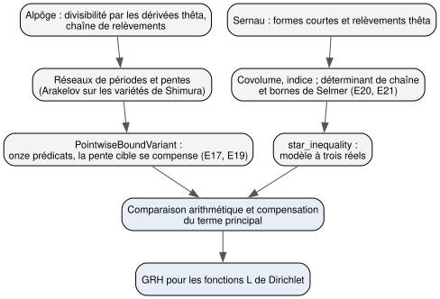
| Composante | État |
|---|---|
| Réduction aux sommes de Riesz, positivité, Landau classique | reconstruits |
| Landau en fenêtres | principe compris ; localisation lue, non reconstruite |
| Modèles (Tchebychev, Stepanov, groupes formels, lemniscate) | reconstruits |
| Théorème A | hypothèses et stratégie identifiées |
| Accumulation des gains le long de la chaîne | comprise algébriquement |
Fabrication des gains (LinkG) |
chaîne lue : admissibilité (Théorème A) et rang \(p\)-adique (LPprime) ;
assemblage de LPprime reconstruit, rang par arête (modules
de Weyl) non lu |
| Compensation du terme principal | reconstruite (identité) |
| Normalisations CM | lues |
| Transport des degrés vers la division | étape des pages reconstruite, sur le corps commun que fournit la
descente galoisienne de l’export (§ 5.5, kerCore_holds) ;
existence des fonctionnelles CM non lue |
| Raccord des trois propriétés de l’inégalité de pentes | réglé par construction |
Passage de gapA à \(G_\psi\) |
reconstruit |
| Contrôle des places tordues par Ш | défaut = module de congruences (reconstruit) ; borne locale lue ; preuve (Hodge \(p\)-adique) non lue |
| Bilan de comptabilité de la route d’origine | onze prédicats appariés à Nelson et rattachés à leurs interfaces (E17) ; dérivation reconstruite et lue dans Lean au niveau des énoncés intermédiaires, coefficients exacts compris (§ 6.2, E19) |
| Optimisation du budget | reconstruite au niveau du modèle et des bornes lues |
Fabrication globale des objets (HypsAlt) |
branchement lu (6 données, 40 certificats), réalisation non lue |
Théorème B des arcs (premiers inertes, LinkN) |
énoncé et mécanisme lus (majoration quadratique du coût des suites épaisses) ; relèvements d’arcs (modules de Wach) non lus |
Parties inertes ou vides (Behrend, anyGeometry, modèle
dégénéré) |
établies sur l’export (suivi des projections, frontière en données) ; absentes de la preuve compressée |
Ces appréciations portent sur l’exposition, non sur la validité de la preuve. On ne peut pas encore écrire, à partir de cette synthèse, une démonstration classique complète de GRH, même en admettant les grands théorèmes auxiliaires.
Le parcours que nous venons de faire est un enchaînement de changements de représentation. Il ne consiste pas à raffiner directement la théorie analytique des nombres premiers. Il commence par remplacer l’emplacement de zéros complexes par une inégalité réelle sur une somme lissée ; il transforme ensuite cette inégalité en un problème de profil de divisibilité, puis ce profil en une question de dérivées, de groupes formels et de composition de noyaux ; enfin il traduit ces gains en pentes et optimise un budget d’erreur.
Une difficulté conceptuelle est qu’aucun de ces changements n’a de sens isolément. Les séries thêta et la multiplication complexe fournissent de la divisibilité, mais celle-ci serait stérile sans un calcul archimédien. L’inégalité de Bost serait une inégalité de géométrie des nombres parmi d’autres sans un profil local accordé à Riesz. Et même une chaîne qui accumule de grands gains ne sert à rien si ses pertes grandissent aussi vite, ou si l’application finale est dégénérée. Le problème n’est pas de choisir un « bon théorème », mais de construire une famille d’objets qui satisfait plusieurs cahiers des charges presque contradictoires.
On peut donc distinguer trois niveaux de compréhension. Le premier est celui des modèles : l’entier, la factorielle, la courbe elliptique, la matrice. Le deuxième est celui des interfaces : les gains, les projections, la division, le plafond de pente, les paramètres. Le troisième est celui de la réalisation simultanée de toutes ces interfaces dans des objets réels. Ce texte a développé les deux premiers et préserve les informations disponibles sur le troisième. Ce dernier niveau ne saurait être remplacé par un récit séduisant.
L’expérience d’une preuve assistée par IA est également intéressante sous cet angle : une piste mathématique peut nécessiter de traverser des bibliothèques de théories que peu de chercheurs maîtrisent simultanément. Mais attribuer telle invention au mathématicien ou à l’agent exigerait des traces historiques que l’artefact ne fournit pas. L’annexe A sépare donc les faits documentés des conjectures sur le processus de découverte.
Le programme de travail restant. Trois articulations
méritent maintenant une reconstruction mathématique détaillée : (i) la
réalisation des poids qui rendent LinkG_at applicable, (ii)
les preuves du transport de la formule de Chowla–Selberg
(CM.DegSt) jusqu’à la division, dont le chemin est établi
(numGood_of_famQ, bornes par pages,
LinkDIV_at) et dont la compensation finale est lue
(ch_balance, MAIN,
key_identity5), (iii) la réalisabilité du budget linéaire
\(B_0\) (BNBoundsU,
inertLoss_primeSum, DIVinN), et en particulier
pourquoi Ш borne la masse des places tordues. Si ces trois ponts sont
explicités, les cinq questions seront non seulement motivées, mais
reliées par une véritable chaîne de déductions.
GRH pour toutes les fonctions L de Dirichlet, donc RH, et RH pour les fonctions zêta de Dedekind des corps abéliens. Pas GRH pour les corps non abéliens, les fonctions L d’Artin ou automorphes générales. Voir l’annexe C.
Cette annexe se limite aux faits mesurables sur l’artefact et à ce qu’affirme la note de l’auteur. Elle ne cherche pas à attribuer les idées.
L’artefact (mesures sur le code et l’export) :
_alt_alt_alt…) et des
emplacements numérotés dont le nom est contredit par le contenu
(UnusedSlot80 : 2 121 déclarations utilisées) ;first | … | … ;Statements.lean,
Main.lean).Rien dans l’artefact ne permet d’établir qui a écrit quoi.
Le partage entre mécanisme et construction (mesuré par l’arbre des dominateurs). Ce qui appartient en propre au mécanisme de la partie I pèse moins de 0,5 % du volume (union de 13 sous-arbres dominés, voir l’article, § 4.3) : Landau en fenêtres, Théorème A et taux \(p/(p^2-1)\), division des réseaux et inégalité de pentes, équilibre \(x/m+m\). Le reste fabrique les objets et contrôle les pertes : groupes unitaires, noyaux thêta entiers, quasi-orthogonalité, covolume, bornes de Tate–Shafarevich, représentations galoisiennes.
Ce que dit la note
(alpo.ge/remark.pdf). Elle donne une chronologie en 20
étapes, du 6 octobre au 16 novembre 2026, qu’elle présente comme « a
rough timeline Claude provided after a thorough search ». Correspondance
avec la preuve reconstruite :
| Dans la preuve reconstruite | Étapes de la note | Date |
|---|---|---|
| Analogie de Stepanov | 1, 4 | 6/10 |
| Divisibilité de \(D^a\Omega\theta(0)\) au point CM (Théorème A) | 2 | 9/10 |
| Inégalité de pentes de Bost | 13 | 6/10 |
| Tour d’Iwasawa, Behrend | 11, 19 | 6/10 et 19/10 |
| Positivité, signe de Guinand–Weil | 5, 6 | 8/10 et 20/10 |
| Chaîne de relèvements thêta | 3, 8 | 19/10 puis 15/11 |
| Normes des relèvements, seesaw, coût par relèvement, structures entières, Ш, covolumes | 9, 10, 12, 14, 15, 17, 18 | presque toutes le 15/11 |
Sur le partage des rôles, la note dit notamment : « The simple, new, Fourier-analytic ideas in the toy setting led us to examine chaining theta lifts » ; la longueur de chaîne \(\sqrt X\) est « Claude’s suggested length of chain of theta lifts » ; « Claude far outpaced me near the finish line ». L’auteur écrit aussi qu’il a « little mastery of automorphic forms on higher rank groups », et qu’il a produit une exposition de plus de 250 000 pages, non publiée. La note cite également des apports extérieurs (des résultats d’OpenAI, des collègues consultés).
Deux constats sur l’export complètent la note : le Théorème A (étape 2), l’inégalité de pentes (étape 13) et la construction de Behrend (étape 19) correspondent à des déclarations de la fermeture ; le « jouet de Fourier » de l’étape 3 (« qN = Mk + R », quadrique, revêtement d’ordre 6) n’y apparaît pas tel quel, ce que Rubinstein constate aussi.
Définitions minimales, au sens où elles servent dans ce texte. Les notions que la partie I explique par l’exemple n’y figurent plus : Legendre et Tchebychev (§ 2), Stepanov (§ 4.1), la formule explicite et Landau (§ 1), la fonction de von Mangoldt (prémisses).
| Terme | Définition |
|---|---|
| Grand crible | Inégalités de moyenne quadratique sur une famille de caractères ; elles montrent que presque tous les caractères d’une grande famille ont des sommes petites |
| Corps CM | Extension quadratique totalement imaginaire d’un corps totalement réel (ex. ℚ(√−d)) |
| Forme hermitienne, groupe unitaire | Forme sesquilinéaire hermitienne sur \(E^n\) (\(E\) CM) ; le groupe unitaire est le groupe de ses isométries. Définie : positive à toutes les places infinies |
| Masse de Siegel | \(\displaystyle\sum_{[L]}\frac{1}{\lvert\mathrm{Aut}(L)\rvert}\) sur les classes de réseaux d’un genre ; la formule de Siegel la calcule exactement |
| Série thêta, Siegel–Weil | La série thêta d’un réseau est la série génératrice de ses nombres de représentations ; Siegel–Weil : moyenne sur le genre = série d’Eisenstein |
| Correspondance (relèvement) thêta | Procédé qui transporte des formes automorphes d’un groupe unitaire à un autre via la représentation de Weil ; domaine stable : quand le second groupe est assez grand |
| Réseau hermitien | \(\mathcal O_K\)-module projectif de type fini muni de normes hermitiennes aux places infinies (« fibré vectoriel » sur \(\operatorname{Spec}\mathcal O_K\)) |
| Degré arakelovien | \(\widehat{\deg}(L)=-\log\operatorname{covol}(L)\), normalisé ; se décompose en contributions locales finies (\(\times\log p\)) et archimédiennes |
| Pente, Harder–Narasimhan | \(\widehat\mu=\widehat{\deg}/\mathrm{rang}\) ; \(\widehat\mu_{\max}\) est la plus grande pente d’un sous-réseau (premier cran de la filtration de Harder–Narasimhan) |
| Inégalité de pentes (Bost) | Pour \(\varphi:E\to F\) injectif, \(\widehat\mu(E)\le\widehat\mu_{\max}(F)+h(\varphi)\), où \(h(\varphi)\) est la hauteur de \(\varphi\) ; généralise Minkowski |
| Représentation galoisienne attachée | \(r:\mathrm{Gal}(\overline E/E)\to\mathrm{GL}_n(\overline{\mathbb Q}_\ell)\) dont les valeurs propres de Frobenius en p non ramifié égalent les paramètres de Satake de la forme automorphe en p |
| Langlands local | Bijection entre représentations irréductibles de \(\mathrm{GL}_n(K)\) (\(K\) local) et représentations de Weil–Deligne de dimension n, préservant certains invariants ; le côté galoisien est formé des représentations de Weil–Deligne (représentations du groupe de Weil munies d’une monodromie) |
| Profondeur zéro, modéré | Représentation de \(\mathrm{GL}_n(K)\) ayant des vecteurs fixes sous le premier sous-groupe de congruence ; côté galoisien : inertie sauvage triviale |
| Théorie de Green | Description des caractères irréductibles de \(\mathrm{GL}_n(\mathbb F_q)\) ; les « caractères réguliers » \(\theta\) de \(\mathbb F_{q^n}^\times\) paramètrent les cuspidales |
| Formule de Lefschetz holomorphe | Trace d’une correspondance sur la cohomologie cohérente (de Hodge) = somme sur les points fixes de termes locaux |
| Géométrie d’Arakelov | Géométrie des variétés sur Spec ℤ complétée par des métriques aux places infinies ; degrés, hauteurs, volumes arithmétiques |
| Groupe formel, hauteur | Loi de groupe donnée par une série formelle \(F(X,Y)\) ; sur \(\mathbb Z_p\), celui d’une courbe elliptique supersingulière est de hauteur 2, avec un logarithme du type \(\sum_e X^{p^{2e}}/p^e\) |
| Ordinaire, supersingulier | Une courbe elliptique à bonne réduction en \(p\) est ordinaire si son groupe formel y est de hauteur 1, supersingulière s’il est de hauteur 2 ; pour une courbe CM, supersingulière exactement aux premiers inertes (§ 3) |
| Point CM | Point d’une variété de Shimura correspondant à une variété abélienne à multiplication complexe ; la réduction en un premier inerte est supersingulière |
| Lemme de Dwork | Critère d’intégralité \(p\)-adique : \(\exp(P)\in 1+X\,W[[X]]\) si et seulement si \(P^{\sigma}(X^p)-pP\in pW[[X]]\) ; sert pour les exponentielles d’Artin–Hasse et pour les groupes formels |
| Norme de Gauss | Norme d’un polynôme \(p\)-adique égale au maximum des normes de ses coefficients ; elle est multiplicative, et égale à la valeur en un point résiduellement générique |
| Période de Bessel (GGP) | Intégrale d’une forme automorphe sur un sous-groupe, contre un caractère d’un unipotent et une forme d’un groupe plus petit ; les identités seesaw de Kudla relient celles des relèvements thêta |
| Groupe de Tate–Shafarevich | Noyau de la restriction \(H^1(G_{E,S},\mathbb Q_\ell/\mathbb Z_\ell(-e))\to\prod_{v\mid\ell}H^1(E_v,\cdot)\) : classes globales localement triviales. Noté Ш, la lettre cyrillique « cha », initiale de Chafarevitch (notation de Cassels) |
| Congruence d’Eisenstein | Congruence modulo ℓ entre une forme cuspidale et une série d’Eisenstein ; elle construit, ou ici borne, des classes de Selmer (Ribet, Mazur–Wiles) |
Ce qui est démontré, exactement. GRH pour toutes les fonctions L de Dirichlet, donc RH. La fonction zêta de Dedekind d’un corps abélien se factorise en produit de fonctions L de Dirichlet ; GRH vaut donc pour tous les corps de nombres abéliens, en particulier quadratiques et cyclotomiques. Elle n’est pas démontrée pour les corps non abéliens, ni pour les fonctions L d’Artin ou automorphes générales. Cette frontière décide de la plupart des conséquences.
Ces implications sont des résultats classiques de la littérature, dont les hypothèses et constantes sont à vérifier dans les sources ; elles ne sont pas toutes formalisées dans Lean.
Plusieurs conséquences célèbres de « GRH » supposent en réalité GRH pour des corps non abéliens, ou pour des fonctions L plus générales :
Pour chaque résultat « conditionnel à GRH » de la littérature, il faut donc vérifier quelle GRH est supposée.
RiemannHypothesis » devient
inconditionnel en l’instanciant par riemannHypothesis.| Symbole | Sens | Où |
|---|---|---|
| \(\psi(x,\chi)\) | fonction de Tchebychev tordue par χ | prémisses |
| ψ (caractère) | caractère primitif d’ordre \(o\) qui définit \(G_\psi\) | § 1.3 |
| γ | constante d’Euler ; aussi l’ordonnée d’un zéro \(\rho=\frac12+i\gamma\) | prologue, § 1 |
| \(\chi_{0,N}\), \(\mathbf 1\) | caractère principal modulo \(N\) ; caractère trivial de conducteur 1 | prémisses |
| \(S\), \(G\), \(g\) | somme de Riesz ; sommes centrées pour ζ et pour χ | § 1.2 |
| \(D(N)\) | perte de la factorielle, \(\log(N!)-S(N)\) | prologue |
| \(p,e\) | premier inerte et exposant de la puissance \(p^e\) | §§ 2–3 |
| \(x\), \(a\), \(b\) | échelle ; ordre de dérivation \(a=bx\) ; seuil des poids | §§ 3, 6 |
| \(m\) | longueur de la chaîne de relèvements (au § 4.1 seulement : degré de \(g\)) | §§ 4, 6 |
| \(k\), \(n\) | rang de base des réseaux ; taille de l’hôte | § 6.2 |
| \(n_T\), \(n_{T2}\) | nombres de colonnes du crochet d’erreur | § 6.2 |
| \(E\), \(K\) | corps hôte ; corps CM quadratique | § 3.4 |
| \(v\), Ω, Φ | \(v=\mathrm{rd}_E/2\), moitié du discriminant racine de l’hôte ; période normalisée ; \(\mathrm{Gal}(E/\mathbb Q(\sqrt{-d}))\) | §§ 3.4, 5 |
ASK, MAIN |
somme de von Mangoldt sur les premiers inertes ; son terme principal | partie II |
Ga, \(B_0\) |
saut de pente dû aux gains ; budget de pertes par relèvement | partie II |
Les symboles des modèles (§§ 2 et 4.1) sont locaux ; ceux en police
machine sont des noms de l’export.
La preuve et sa vérification
solution.ndjson.zst, challenge.ndjson.zst) :
https://math.mit.edu/~drew/grh/Autres synthèses et lectures publiées (toutes rédigées avec des outils d’IA, à des degrés divers)
72fead1,
25/11/2026 : https://github.com/lsernau/grh-leanRH-Alpoge-Reconstruction (lecture textuelle du
source) : https://github.com/jimjamzola/RH-Alpoge-ReconstructionRéférences classiques
correctifs-1.md). Lemniscate : limite prise le long de
\(n\equiv1\pmod4\) ; symétrie des zéros
énoncée pour les zéros non triviaux ; § 5.5 : réseau étendu \(Q_L\) et exposant étendu \(b(\mathfrak P)=e\,b(\mathfrak p)\)
distingués du quotient vectoriel ; § 6.2 : ce sont la première et la
troisième contrainte qui imposent \(\alpha=\frac12\) ; annexe C : références
précises (Bach–Sorenson, Bach), conditions du test de Miller et du
non-résidu, constantes non vérifiées signalées ; références sur Honda,
les groupes formels, Chowla–Selberg et les modules de Wach ; carte
comparative des deux routes ; clé [Ze] pour Zeng.synthes10.md (note de stabilisation nº 10). § 5.5 réécrit
en un lemme de séparation (descente galoisienne) suivi de la borne de
quotient sur le corps commun, avec la conservation des longueurs ; flot
énoncé pour \(d\ge2\), solution non
négative ; deux branches d’hypothèses du Théorème B des arcs ; § 4.3 :
quatre profils distingués, alignement exact non établi ; statut
conditionnel du bilan au § 6.2 rendu explicite ; « trois étages » dans
la vue d’ensemble ; statuts de lecture précisés. Bilan original lu dans
Lean, coefficients compris (E19) ; bilan court identifié au modèle à
trois réels (E20) ; divergence Arakelov / Selmer (E21) ; chiffres des
clauses inertes refaits avec l’outil corrigé (E22).suggestions9bis.md. Contrat de comptabilité de la route
d’origine et calcul des trois compensations en tête du § 6.2 (E17,
Nelson ch. 58–59) ; § 3.5 réécrit en cinq éléments (admissibilité, flot
avec sa solution exacte et son certificat dual, rang à précision,
assemblage par matrice normalisée, comptage des poids) ; Behrend,
grappes et Théorème B des arcs déplacés au § 7 (« Préserver les gains »)
; proposition des pages corrigée : elle vaut sur un corps commun, que
l’export obtient par descente galoisienne (NumGood,
kerCore_holds) ; Atelier 6 sous sa forme exacte ; section
renommée « Ce qui est porté, inerte ou remplacé », racines des
fermetures harmonisées.LPprime (assemblage reconstruit ; modules de Weyl
et bases de poids) ; NoRel : le paquet de Behrend est
inerte, la propriété passe par l’hôte et les grappes de lettres épaisses
(§ 3.5) ; Théorème B des arcs ; clauses inertes sur tout l’export ;
objections de Nielsen ; Atelier 6 (comparaison dans un réseau, d’après
[Ne]) ; « Ce qui n’est pas nécessaire », avec la preuve compressée
[Se].suggestions8.md. Correction de la démonstration des pages
(choix de \(F_k\) dans le noyau commun,
hors de \(W\) ; cas \(\rho=0\) ; signe de \(n(\lambda)\)). Sens exact du rang à
précision de LPprime (facteurs invariants de Smith, § 3.5).
HypsAlt : 6 données et 40 certificats (et non 2 et 44).
Tableau des articulations révisé ; distribution des gains (Q3) ;
préambule sur la lecture des termes de preuve. Le coût de troncature est
l’optimum d’un programme de flot sur l’orbite, calculé exactement sous
capacités équilibrées (LemmaFe, § 3.5) ; droite cible des
fonctionnelles CM, lue par tranchage arrière (§ 5.5) ; structure de la
preuve de LPprime (assemblage des arêtes reconstruit ; rang
par arête par récurrence sur le plus haut poids, bases de poids communes
aux deux réseaux d’une arête, § 3.5) ; le lemme d’orbite est une clause
de dropping_proposition_holds, avec la densité de Behrend,
mais cette clause est inerte : la propriété effective passe par l’hôte
et les grappes de lettres épaisses, au service du lien côté Galois (§
3.5).suggestions7.md et suggestions7bis.md.
Reconstruction de l’étape des pages, des degrés CM aux bornes de réseau,
par un argument de déterminant (§ 5.5). Le défaut local des places
tordues est le module de congruences du projecteur de Hecke (§ 7 (a)).
Chaîne des gains : le Théorème A rend les lignes admissibles, une
propriété de rang \(p\)-adique
(LPprime) propage la divisibilité (§ 3.5). Lecture des
termes de preuve par le graphe des applications instanciées
(tools/trace_app.py, résultats dans
analysis/raccords.md) : les trois propriétés de l’inégalité
de pentes portent sur un même champ DivData.Bk (§ 5.4) ; la
somme sur les colonnes donne exactement Level.Gm (partie
II) ; Ш entre dans LinkN une fois par premier avec un
facteur de multiplicité (§ 7) ; provenance des gains et des « pages ».
Identité du coût de troncature (§ 3.5) ; tableau de l’état de la
compréhension (partie III).pair_share (§
3.4) ; Level.wt (§ 1.3) ; les quatorze interfaces de
linkCore lues comme un bilan (partie II) ; le raccord des
trois cartes de [R2] (partie III).suggestions6.md. Lemniscate corrigée et démontrée :
premiers décomposés (facteur premier \(\equiv1\pmod4\) de \(A_{41}\)), asymptotique de Darboux le long
de \(n\equiv1\pmod4\), profil théorique
\(I(n)=\tfrac12n\log n+O(n)\) ;
intégrale tronquée exacte dans la propagation des pentes ; tableau des
coûts conditionné ; signes des résidus dans Landau en fenêtres ;
faisabilité des exposants (§ 6.2) ; lemmes d’orbite et des profils
tronqués (§ 3.5) ; modèle tensoriel de la normalisation (§ 5.4) ; modèle
de longueur (§ 7) ; univers de comptage précisés.tools/lemniscate.py) ; la
propagation des pentes après le théorème S (exemple de dimension 2,
lemme de déficit, proposition M4 de [R2]) ; clés [R] et [R2] distinguées
; relecture de cohérence (points d’entrée des organes, transitions du
prologue, formulations « appuie » plutôt que « confirme ») ; points
d’entrée et profil 4 : 3 vérifiés sur l’export
(analysis/points_entree.txt,
extraits/Formalism.HC.Frame.lam.txt).suggestions5.md). Propriété exacte des orbites de Behrend
lue sur l’export (NoRel) ; identité exacte \(D(N)=\gamma N+\frac12\log(2\pi
N)-G(N)+O(1/N)\) ; Stepanov : \(a\le
p-2\), minoration par \(\eta
g\), extensions ; Q1 corrigée (\(x^{1/2+O(\varepsilon)}\),
non-dégénérescence, budget) ; § 6.3 renommé ; annexe C nuancée ; index
des notations (annexe D).suggestions4bis.md). Caractère principal \(\chi_{0,N}\) distingué du caractère trivial
\(\mathbf 1\) ; formule explicite
précisée (multiplicités, \(\psi_0\),
cas non primitif) ; exposant ½ visé et \(x^{1/2+\varepsilon}\) obtenu distingués ;
perte de la factorielle asymptotiquement \(\gamma N\) (équation (F), par le théorème
des nombres premiers) ; modèle du noyau gamma pour Landau en fenêtres,
avec figure ; borne de Stepanov rendue explicite ; normalisation de la
période de la lemniscate ; crochet d’erreur normalisé (E), avec \(n_{T2}\le n\) lu sur l’export ; argument de
Mellin pour l’optimalité de ½ ; Φ \(=\mathrm{Gal}(E/\mathbb Q(\sqrt{-d}))\)
vérifié ; tableau des trois articulations ouvertes ; annexe C nuancée ;
note de méthode et d’usage de l’IA ; titre « Comprendre la preuve
formelle… ».suggestions3.md). Count5 lu comme un
encadrement, et non une égalité ; borne de Ш citée sous sa forme exacte
(VAt) ; part propre du mécanisme définie par 13 sous-arbres
; vue d’ensemble harmonisée avec les chapitres (\(G\le\gamma y+O(\log y)\), image des couches
paires, rôle de LinkG_at, précision relative, facteurs
\(x^{O(\varepsilon)}\), conditionnel
pour \(2/3\)) ; identité exacte de la
perte de la factorielle ; conventions (γ, \(\chi=1\), formule explicite) ; partie I
renommée « Le mécanisme de la preuve ». Signature réduite à la page de
titre.suggestions2.md). Faits de ramification de l’hôte corrigés
sur l’export (HostRaw.mk : ensemble exceptionnel \(S\), premiers du conducteur décomposés dans
\(\mathbb Q(\sqrt{-d})\)) ; uniformité
en ε vérifiée (ChebyshevInequalityAtWindowScale) ; union
des fermetures de Main corrigée (1 468 414, quatre
déclarations hors fermeture) ; exception du pôle en \(s=1\) harmonisée ; contribution d’une paire
de zéros ; dimension finie à niveau fixé ; verdicts « confirmée »
ramenés à « soutenue ». Page de titre avant le sommaire.suggestions.md) : unité des poids (lignes de
l’export, non lignes de source), fermetures comparées
(riemannHypothesis, Main,
allChi), \(k\ge
x^{3/2-\varepsilon}\), le lien entre congruences de Hecke et Ш
présenté comme une motivation, « ce qui semble nouveau », cohomologie
étale des variétés de Shimura.tools/modeles.py. Les versions
précédentes restent disponibles (synthese_v1.md,
synthese_v2.md, synthese_v3/). Analyse
complémentaire de l’export : amortissement (ch_top,
core_ineq), compensation du terme principal
(MAIN, key_identity5, formule CM
CM.DegSt), places tordues et chemin de Ш
(LinkN, DIVinN), contenu de
LinkG_at, conditions exactes de l’hôte
(HostHyp, pairHyp, HostFactsS),
preuve de Landau en fenêtres (Chernoff), présence de Rallis, et chemin
de la formule CM jusqu’à la division. Un article d’exposition qui
descend le graphe en est tiré (article.md).tools/modeles.py. Le résumé
devient une vue d’ensemble en cinq questions. La partie II gagne un
graphe des interfaces lu sur l’export (tools/interfaces.py, tools/organes.py), qui confirme
quatre interprétations et corrige le rôle attribué à Ш. La partie III
est mise à jour et le glossaire réduit. La version 1.0 reste disponible
(synthese_v1.md).Usage de l’IA. Claude (Anthropic) a écrit les outils d’analyse, lu les énoncés de l’export et rédigé le texte, sous la direction de l’auteur, qui a fixé les questions, l’organisation et les exigences de rigueur, et relu chaque version. ChatGPT (OpenAI) a proposé la refonte narrative de la version 3 et relu les versions suivantes ; chacune de ses propositions a été vérifiée sur l’export ou sur les sources avant d’être adoptée, et plusieurs ont été corrigées (voir l’historique). Aucun passage n’a encore été relu par un spécialiste extérieur.
Méthode : lecture en flux de l’export (62 Go décompressé) par tools/deps.c ; graphe des
déclarations, dominateurs (Cooper–Harvey–Kennedy) et index inverse par
analyse_export.py, revindex.py et query.py ; réimpression des
énoncés par show.py ; graphe
des interfaces par interfaces.py et organes.py ; modèles réduits et
figures par modeles.py.
Toute conclusion négative (« X n’est pas utilisé ») est établie sur
l’export et non par recherche textuelle. Les outils et le texte ont été
écrits avec Claude (Anthropic) ; la refonte narrative de la version 3 a
été proposée avec ChatGPT, puis vérifiée et fusionnée.